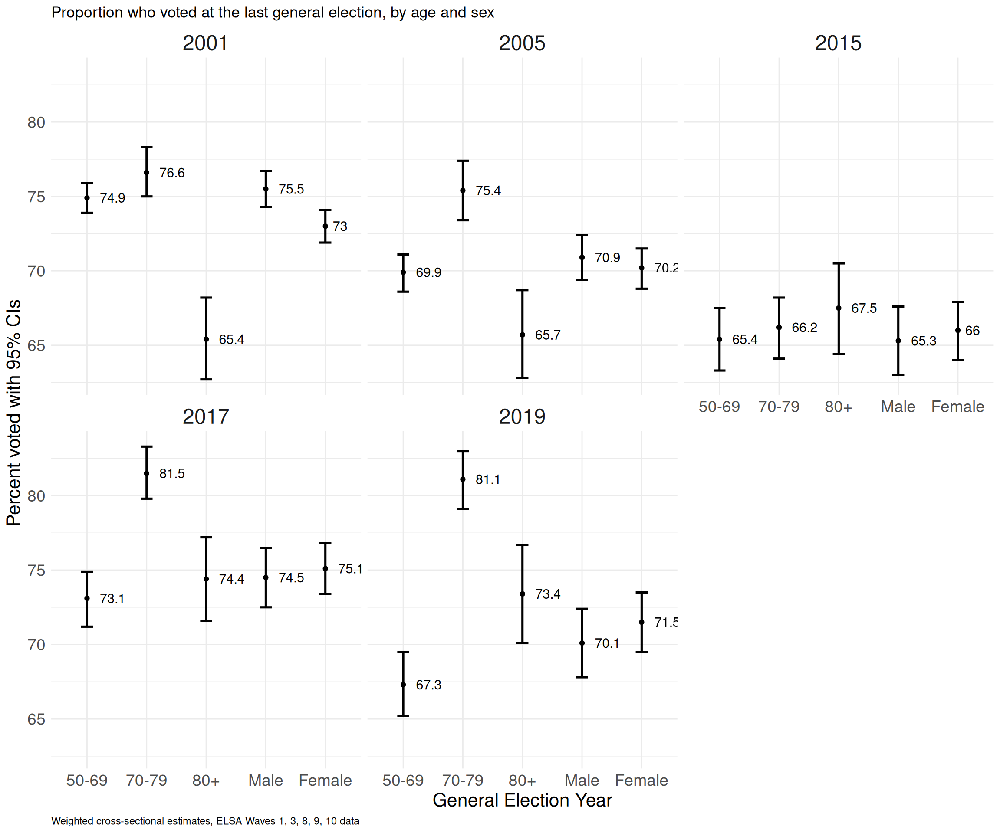
ELSA voting pattern study
Introduction
This document presents preliminary descriptive, uni-, bi- and multivariate analysis of voting at the 2019 General Elections among the 50+, using data from the English Longitudinal Study of Ageing - ELSA at Wave 10.
- Section 1 presents the variables included in the analysis
- Section 2 contains information about variable recoding and related issues
- Section 3 includes unweighted and weighted frequency tables of unrecoded, recoded and derived socio-economic (SEV) and independent (IV) variables.
- Section 4 documents unweighted and weighted 2-way contingency tables of SEVs and IVs by turnout at the 2019 general elections, age, sex.
- Section 5 presents additional four way tables of voter turnout at the 2019 GE by SEVs and IVs broken down by age and sex, as well as three way plots of voter turnout at the 2001, 2005, 2015, 2017, 2019 general elections by age, sex.
- Section 6 presents the results of four series of stepwise logistic regression models of voting at the 2019 GE.
1. Variables included
| Description | Name | Variable label | Valid responses |
|---|---|---|---|
| Age 2 categories | AgeCat2 | Recoded age, 2 category | 6,177 |
| Age 3 categories | AgeCat3 | Recoded age, 3 category | 6,177 |
| Age Gap continuous | AgeGap | Gap: actual and perceived age (cont.) | 5,827 |
| Age Gap 3 categories (exact) | AgeCat31 | Gap: actual and perceived age (exact) | 5,827 |
| Age Gap 3 categories (within 3 years) | AgeCat32 | Gap: actual and perceived age (3 years) | 5,827 |
| Mental Health | CFMAP | Self-rated mental abilities | 6,016 |
| Memory issues | CFMETM | Self-rated memory | 6,014 |
| Grandchildren | DIGRAN | Whether respondent has any grandchildren/great grandchildren | 2,273 |
| Marital status | DIMARR | (D) Respondent current legal marital status - combined marriage/civil partnershi | 6,282 |
| Education/highest qualification | EDQUAL | educational qualification - info merged from current and previous waves | 6,192 |
| Volunteering | ERFVOL | Whether volunteered: any other help | 6,009 |
| Caring for children | ERLVOLBA | Unpaid help: babysitting or caring for children | 6,006 |
| Caring for frail/sick | ERLVOLPE | Unpaid help: providing personal care for someone who is sick or frail | 6,006 |
| Ethnicity | ETHNIC | HSE ethnic group collapsed into White and Non-white to avoid disclosure | 3,697 |
| Life expectancy expectation | EXLO80 | Expectation (%) that will live to [age] [depends on current age] | 5,916 |
| Life expectancy expectation (85+) | EXLO90 | Expectation (%) that will live to be 85 years old or more | 3,074 |
| Whether enough money | EXRELA | Whether find has too little money to spend on their needs | 5,985 |
| Financial future | EXRSLF | Expectation (%) that will not have enough financial resources to meet needs | 5,909 |
| General Health | HEHELF | Self-reported general health | 6,084 |
| Household type | HHDTYPB | (D) Household Type | 6,286 |
| Capacity everyday activities | HEADLBA | ADL: difficulty bathing or showering | 6,286 |
| Internet use | HOBB | Whether has an internet connection at present | 6,231 |
| Financial situation | IAFCON | How respondent (and partner) getting along financially these days | 5,754 |
| Financial decisions | IAFIND | Who has the final say in big financial decisions | 3,686 |
| Sex | INDSEX | (D) Definitive sex variable: priority disex, dhsex | 6,286 |
| Perceived age | PSAGF | Self-perceived age (in years) | 5,913 |
| Happiness | PSCEDD | Whether was happy much of the time during past week | 5,977 |
| Social isolation | PSCEDE | Whether felt lonely much of the time during past week | 5,999 |
| Voted at the 2019 GE | SCSPTRVT | - | 5,458 |
| Charity membership | SCORGCH | Whether is a member of charitable associations | 5,264 |
| Civic engagement | SCORGPO | Whether is a member of a political party, trade union or environmental groups | 5,264 |
| Religion | SCORGRL | Whether is a member of a church or other religious group | 5,264 |
| Sense of community | SCLFCOA | How much agrees with the statement: I want to give back to my community | 5,253 |
| Use of car | SPCAR | Whether respondent has use of car or van when needed, as a driver or a passenger | 6,286 |
| Use of public transport | SPTRAA | How often respondent uses public transport | 6,286 |
| Housing tenure | TENUREB | Household Tenure | 3,698 |
| Past voting behaviour, V1 | Past voting record, v1 | Voted in past GE (from previous waves 1, 3, 8, 9, 10) | 2,165 |
| Past voting behaviour, V2 | Past voting record, v2 | Voted in past GE (from previous waves 1, 3, 8, 9, 10) | 2,165 |
| Social class – NS-SEC | W10NSSEC5 | (D) Combined NS-SEC 5 category classification (individual) | 1,766 |
| Main economic activity | WPDES | Best description of current situation | 6,266 |
| Weights | w10xwgt | Wave 10 cross-sectional weight | - |
| Name | Fieldwork | Sample | Of which core | Vote asked | Last GE |
|---|---|---|---|---|---|
| Wave 1 | 2002-03 | 12,100 | 11,391 | Yes | June 2001 |
| Wave 2 | 2004/05 | 9,432 | 8,780 | No | June 2001 |
| Wave 3 | 2006/07 | 9,771 | 8,810 | Yes | May 2005 |
| Wave 4 | 2008/09 | 11,050 | 9,886 | No | May 2005 |
| Wave 5 | 2010/11 | 10,274 | 9,090 | No | May 2010 |
| Wave 6 | 2012/13 | 10,601 | 9,169 | No | May 2010 |
| Wave 7 | 2014/15 | 9,666, | 8,249 | No | May 2010 |
| Wave 8 | 2016/17 | 8,445 | 7,223 | Yes | May 2015 |
| Wave 9 | 2018/19 | 8,736 | 7,289 | Yes | June 2017 |
| Wave 10 | 2021-23 | - | - | Yes | Dec. 2019 |
Source: ELSA Wave 9 report, Table 1.1; Wikipedia.
2. Variables recoding
Recoding schemes:
- Household type (HHDTYPB):
- Single person (adult) households
- Families (large + small)
- 2 adults households
- Large adults HH
- Marital status (DIMARR)
- Single/never married
- Married
- Separated/dicvorced/widowed
- Employment status (WPDES)
- Retired + looking after family/home
- In employment
- Long term sick + unemployed
- Highest qualification (EDQUAL)
Detailed version
- Degree or equivalent
- Higher ed below degree
- A level or equivalent
- GCSE or equivalent
- Foreign
- No qualification
Short version
- Higher education
- Secondary education
- Foreign
- No qualification
Recoding notes and issues
There is potentially a large drop in the number of observations resulting from combining the voting records across waves: 4,247. For this reason, missing values were coded as 0. As a result there may be a need to add a control for British vs non British citizenship.
Ethnicity has 2,584 missing values. I do not recommend using it.
Same with social class: 4,489 respondents had no job information collected .
DIGRAN: the number of grandchildren was asked at Wave 4 then pushed forward (ELSA User Guide Wave 5 p14). As a result, there is large number of missing values at Wave 10.
Age gaps continuous was coded as biological age - self perceived age
Expectation to live to 85 and beyond: the original variable is recorded as subjective probability expressed as percentage (1-100%). The recoded variable was constructed as whether this probability is greater than 50%.
3. Univariates results
Results are presented as follows, under each tab below:
- Unweighted frequencies and proportions of the original variables, unrecoded
- Weighted frequencies and proportions of the recoded (ie missing/invalid values removed) variables
Please note that in the case of newly derived variable 1. and 2. will be identical
Unweighted frequency table of unrecoded erfvol.f
| Category | Frequency | Percent |
|---|---|---|
| [-9] Refused | 16 | 0.3 |
| [-8] Don’t know | 19 | 0.3 |
| [-1] Not applicable | 242 | 3.8 |
| [0] Not mentioned | 5779 | 91.9 |
| [1] Mentioned | 230 | 3.7 |
| Total | 6286 | 100.0 |
Weighted frequency table of recoded erfvol.fr
| erfvol.fr | Frequency | Percent |
|---|---|---|
| Not mentioned | 5713.8713 | 96.6 |
| Mentioned | 201.2256 | 3.4 |
Unweighted frequency table of unrecoded ethnic.f
| Category | Frequency | Percent |
|---|---|---|
| [-9] Refusal | 4 | 0.1 |
| [-8] Don’t know | 1 | 0.0 |
| [1] White | 3600 | 57.3 |
| [2] Non-White | 97 | 1.5 |
| NA | 2584 | 41.1 |
| Total | 6286 | 100.0 |
Weighted frequency table of recoded ethnic.fr
| ethnic.fr | Frequency | Percent |
|---|---|---|
| White | 2687.51842 | 97 |
| Non-White | 82.12824 | 3 |
Unweighted frequency table of unrecoded headlba.f
| Category | Frequency | Percent |
|---|---|---|
| [0] Not mentioned | 5709 | 90.8 |
| [1] Mentioned | 577 | 9.2 |
| Total | 6286 | 100.0 |
Weighted frequency table of recoded headlba.fr
| headlba.fr | Frequency | Percent |
|---|---|---|
| Not mentioned | 5590.3078 | 89.8 |
| Mentioned | 635.6922 | 10.2 |
Unweighted frequency table of unrecoded headlbe.f
| Category | Frequency | Percent |
|---|---|---|
| [0] Not mentioned | 5854 | 93.1 |
| [1] Mentioned | 432 | 6.9 |
| Total | 6286 | 100.0 |
Weighted frequency table of recoded headlbe.fr
| headlbe.fr | Frequency | Percent |
|---|---|---|
| Not mentioned | 5749.0668 | 92.3 |
| Mentioned | 476.9332 | 7.7 |
Unweighted frequency table of unrecoded hobb.f
| Category | Frequency | Percent |
|---|---|---|
| [-9] Refused | 1 | 0.0 |
| [-8] Don’t know | 1 | 0.0 |
| [-1] Not applicable | 15 | 0.2 |
| [1] Yes | 5820 | 92.6 |
| [2] No | 411 | 6.5 |
| NA | 38 | 0.6 |
| Total | 6286 | 99.9 |
Weighted frequency table of recoded hobb.fr
| hobb.fr | Frequency | Percent |
|---|---|---|
| Yes | 5764.7008 | 93.4 |
| No | 407.0581 | 6.6 |
Unweighted frequency table of unrecoded iafind.f
| Category | Frequency | Percent |
|---|---|---|
| [-9] Refused | 10 | 0.2 |
| [-8] Don’t know | 3 | 0.0 |
| [-1] Not applicable | 2515 | 40.0 |
| [1] Respondent | 456 | 7.3 |
| [2] Partner | 232 | 3.7 |
| [3] Both have equal say | 2982 | 47.4 |
| [4] Another family member (e.g. son/daughter) | 16 | 0.3 |
| [85] Other answer - not codeable 01-04 | 4 | 0.1 |
| NA | 68 | 1.1 |
| Total | 6286 | 100.1 |
Weighted frequency table of recoded iafind.fr
| iafind.fr | Frequency | Percent |
|---|---|---|
| Respondent | 471.72511 | 12.6 |
| Partner | 291.22242 | 7.8 |
| Both have equal say | 2961.70473 | 79.1 |
| Another family member (e.g. son/daughter) | 17.52008 | 0.5 |
Unweighted frequency table of unrecoded indsex.f
| Category | Frequency | Percent |
|---|---|---|
| [1] Male | 2741 | 43.6 |
| [2] Female | 3545 | 56.4 |
| Total | 6286 | 100.0 |
Weighted frequency table of recoded indsex.fr
| indsex.fr | Frequency | Percent |
|---|---|---|
| Male | 2969.633 | 47.7 |
| Female | 3256.367 | 52.3 |
Unweighted frequency table of unrecoded pscedd.f
| Category | Frequency | Percent |
|---|---|---|
| [-9] Refused | 29 | 0.5 |
| [-8] Don’t know | 35 | 0.6 |
| [-1] Not applicable | 245 | 3.9 |
| [1] Yes | 5343 | 85.0 |
| [2] No | 634 | 10.1 |
| Total | 6286 | 100.1 |
Weighted frequency table of recoded pscedd.fr
| pscedd.fr | Frequency | Percent |
|---|---|---|
| Yes | 5192.4537 | 88.2 |
| No | 693.9906 | 11.8 |
Unweighted frequency table of unrecoded pscede.f
| Category | Frequency | Percent |
|---|---|---|
| [-9] Refused | 25 | 0.4 |
| [-8] Don’t know | 17 | 0.3 |
| [-1] Not applicable | 245 | 3.9 |
| [1] Yes | 791 | 12.6 |
| [2] No | 5208 | 82.9 |
| Total | 6286 | 100.1 |
Weighted frequency table of recoded pscede.fr
| pscede.fr | Frequency | Percent |
|---|---|---|
| Yes | 826.5049 | 14 |
| No | 5082.6071 | 86 |
Unweighted frequency table of unrecoded scorgpo.f
| Category | Frequency | Percent |
|---|---|---|
| [-9] Refused | 219 | 3.5 |
| [-2] Self-completion instrument not completed | 202 | 3.2 |
| [-1] Not applicable | 601 | 9.6 |
| 0 | 4598 | 73.1 |
| 1 | 666 | 10.6 |
| Total | 6286 | 100.0 |
Weighted frequency table of recoded scorgpo.fr
| scorgpo.fr | Frequency | Percent |
|---|---|---|
| No | 4423.9615 | 87.4 |
| Yes | 639.9419 | 12.6 |
Unweighted frequency table of unrecoded scorgrl.f
| Category | Frequency | Percent |
|---|---|---|
| [-9] Refused | 219 | 3.5 |
| [-2] Self-completion instrument not completed | 202 | 3.2 |
| [-1] Not applicable | 601 | 9.6 |
| 0 | 4330 | 68.9 |
| 1 | 934 | 14.9 |
| Total | 6286 | 100.1 |
Weighted frequency table of recoded scorgrl.fr
| scorgrl.fr | Frequency | Percent |
|---|---|---|
| No | 4273.7744 | 84.4 |
| Yes | 790.1289 | 15.6 |
Unweighted frequency table of unrecoded spcar.f
| Category | Frequency | Percent |
|---|---|---|
| [1] Yes | 5527 | 87.9 |
| [2] No | 759 | 12.1 |
| Total | 6286 | 100.0 |
Weighted frequency table of recoded spcar.fr
| spcar.fr | Frequency | Percent |
|---|---|---|
| Yes | 5413.7511 | 87 |
| No | 812.2489 | 13 |
Unweighted frequency table of unrecoded VotGE01.f
| Category | Frequency | Percent |
|---|---|---|
| [-9] Not answered (99) | 6 | 0.1 |
| [-1] Item not applicable | 78 | 1.2 |
| 0 | 344 | 5.5 |
| 1 | 1935 | 30.8 |
| NA | 3923 | 62.4 |
| Total | 6286 | 100.0 |
Weighted frequency table of recoded VotGE01.fr
| VotGE01.fr | Frequency | Percent |
|---|---|---|
| Didn’t vote | 260.5015 | 15.6 |
| Voted | 1406.9736 | 84.4 |
Unweighted frequency table of unrecoded VotGE05.f
| Category | Frequency | Percent |
|---|---|---|
| [-9] Not answered | 251 | 4.0 |
| [-1] Item not applicable | 39 | 0.6 |
| [0] No | 336 | 5.3 |
| [1] Yes | 2113 | 33.6 |
| NA | 3547 | 56.4 |
| Total | 6286 | 99.9 |
Weighted frequency table of recoded VotGE05.fr
| VotGE05.fr | Frequency | Percent |
|---|---|---|
| Didn’t vote | 278.9185 | 15.4 |
| Voted | 1534.7068 | 84.6 |
Unweighted frequency table of unrecoded VotGE15.f
| Category | Frequency | Percent |
|---|---|---|
| [-3] No valid answer | 33 | 0.5 |
| [-2] Self-completion instrument not completed | 346 | 5.5 |
| [0] Not mentioned | 916 | 14.6 |
| [1] Mentioned | 2862 | 45.5 |
| NA | 2129 | 33.9 |
| Total | 6286 | 100.0 |
Weighted frequency table of recoded VotGE15.fr
| VotGE15.fr | Frequency | Percent |
|---|---|---|
| Didn’t vote | 704.3873 | 23.5 |
| Voted | 2291.5367 | 76.5 |
Unweighted frequency table of unrecoded VotGE17.f
| Category | Frequency | Percent |
|---|---|---|
| [-9] Refused | 45 | 0.7 |
| [-2] Self-completion instrument not completed | 89 | 1.4 |
| [-1] Not applicable | 273 | 4.3 |
| [0] Not mentioned | 351 | 5.6 |
| [1] Mentioned | 3938 | 62.6 |
| NA | 1590 | 25.3 |
| Total | 6286 | 99.9 |
Weighted frequency table of recoded VotGE17.fr
| VotGE17.fr | Frequency | Percent |
|---|---|---|
| Didn’t vote | 367.9004 | 10 |
| Voted | 3293.5117 | 90 |
Unweighted frequency table of unrecoded VotGE19.f
| Category | Frequency | Percent |
|---|---|---|
| [-9] Refused | 25 | 0.4 |
| [-2] Self-completion instrument not completed | 202 | 3.2 |
| [-1] Not applicable | 601 | 9.6 |
| 0 | 708 | 11.3 |
| 1 | 4750 | 75.6 |
| Total | 6286 | 100.1 |
Weighted frequency table of recoded VotGE19.fr
| VotGE19.fr | Frequency | Percent |
|---|---|---|
| Didn’t vote | 857.4437 | 16.3 |
| Voted | 4410.6249 | 83.7 |
Unweighted frequency table of unrecoded AgeGap31.f
| Category | Frequency | Percent |
|---|---|---|
| Feels older than age | 577 | 9.2 |
| Feels their age | 977 | 15.5 |
| Feels younger than age | 4273 | 68.0 |
| NA | 459 | 7.3 |
| Total | 6286 | 100.0 |
Weighted frequency table of recoded AgeGap31.fr
| AgeGap31.fr | Frequency | Percent |
|---|---|---|
| Feels older than age | 707.7304 | 12.4 |
| Feels their age | 953.1533 | 16.7 |
| Feels younger than age | 4044.1966 | 70.9 |
Unweighted frequency table of unrecoded AgeGap32.f
| Category | Frequency | Percent |
|---|---|---|
| Feels > 3 years older | 354 | 5.6 |
| Feels > 3 years younger | 4059 | 64.6 |
| Feels within 3 years of actual age | 1414 | 22.5 |
| NA | 459 | 7.3 |
| Total | 6286 | 100.0 |
Weighted frequency table of recoded AgeGap32.fr
| AgeGap32.fr | Frequency | Percent |
|---|---|---|
| Feels > 3 years older | 463.5093 | 8.1 |
| Feels > 3 years younger | 3813.3832 | 66.8 |
| Feels within 3 years of actual age | 1428.1878 | 25.0 |
Unweighted frequency table of unrecoded cfmap2.f
| Category | Frequency | Percent |
|---|---|---|
| [-9] Refused | 20 | 0.3 |
| [-8] Don’t know | 18 | 0.3 |
| [-1] Not applicable | 232 | 3.7 |
| [1] Excellent | 544 | 8.7 |
| [2] Very good | 1927 | 30.7 |
| [3] Good | 2628 | 41.8 |
| [4] Fair | 788 | 12.5 |
| [5] Poor | 129 | 2.1 |
| Total | 6286 | 100.1 |
Weighted frequency table of recoded cfmap2.fr
| cfmap2.fr | Frequency | Percent |
|---|---|---|
| Excellent/v good | 2450.663 | 41.4 |
| Good/Fair | 3324.799 | 56.1 |
| Poor | 148.472 | 2.5 |
Unweighted frequency table of unrecoded cfmap3.f
| Category | Frequency | Percent |
|---|---|---|
| [-9] Refused | 20 | 0.3 |
| [-8] Don’t know | 18 | 0.3 |
| [-1] Not applicable | 232 | 3.7 |
| [1] Excellent | 544 | 8.7 |
| [2] Very good | 1927 | 30.7 |
| [3] Good | 2628 | 41.8 |
| [4] Fair | 788 | 12.5 |
| [5] Poor | 129 | 2.1 |
| Total | 6286 | 100.1 |
Weighted frequency table of recoded cfmap3.fr
| cfmap3.fr | Frequency | Percent |
|---|---|---|
| Excellent/v good | 2450.6634 | 41.4 |
| Fair | 822.6008 | 13.9 |
| Good | 2502.1978 | 42.2 |
| Poor | 148.4720 | 2.5 |
Unweighted frequency table of unrecoded cfmetm2.f
| Category | Frequency | Percent |
|---|---|---|
| [-9] Refused | 20 | 0.3 |
| [-8] Don’t know | 21 | 0.3 |
| [-1] Not applicable | 231 | 3.7 |
| [1] Excellent | 254 | 4.0 |
| [2] Very good | 1216 | 19.3 |
| [3] Good | 2619 | 41.7 |
| [4] Fair | 1520 | 24.2 |
| [5] Poor | 405 | 6.4 |
| Total | 6286 | 99.9 |
Weighted frequency table of recoded cfmetm2.fr
| cfmetm2.fr | Frequency | Percent |
|---|---|---|
| Excellent/v good | 1509.3828 | 25.5 |
| Good/Fair | 3995.9139 | 67.5 |
| Poor | 412.9585 | 7.0 |
Unweighted frequency table of unrecoded cfmetm3.f
| Category | Frequency | Percent |
|---|---|---|
| [-9] Refused | 20 | 0.3 |
| [-8] Don’t know | 21 | 0.3 |
| [-1] Not applicable | 231 | 3.7 |
| [1] Excellent | 254 | 4.0 |
| [2] Very good | 1216 | 19.3 |
| [3] Good | 2619 | 41.7 |
| [4] Fair | 1520 | 24.2 |
| [5] Poor | 405 | 6.4 |
| Total | 6286 | 99.9 |
Weighted frequency table of recoded cfmetm3.fr
| cfmetm3.fr | Frequency | Percent |
|---|---|---|
| Excellent/v good | 1509.3828 | 25.5 |
| Fair | 1488.1313 | 25.1 |
| Good | 2507.7826 | 42.4 |
| Poor | 412.9585 | 7.0 |
Unweighted frequency table of unrecoded dimarr.f
| Category | Frequency | Percent |
|---|---|---|
| [-9] Refused | 2 | 0.0 |
| [-8] Don’t know | 2 | 0.0 |
| [1] Single, that is never married and never registered in a same-sex Civil Partnersh | 623 | 9.9 |
| [2] Married, first and only marriage or a civil partner in a registered same-sex Civ | 3297 | 52.4 |
| [3] Remarried, second or later marriage | 639 | 10.2 |
| [4] Separated, but still legally married or (spontaneous only) in a same-sex Civil P | 98 | 1.6 |
| [5] Divorced or (spontaneous only) formerly in a same-sex Civil Partnership | 812 | 12.9 |
| [6] Widowed or (spontaneous only) a surviving civil partner from a same-sex Civil Pa | 813 | 12.9 |
| Total | 6286 | 99.9 |
Weighted frequency table of recoded dimarr.fr
| dimarr.fr | Frequency | Percent |
|---|---|---|
| Divorced/separated | 933.5869 | 15.0 |
| Married/SP | 3945.1649 | 63.4 |
| Single | 719.4630 | 11.6 |
| Widowed | 622.8479 | 10.0 |
Unweighted frequency table of unrecoded edqual.f
| Category | Frequency | Percent |
|---|---|---|
| [-9] refusal | 6 | 0.1 |
| [-8] don’t know | 31 | 0.5 |
| [-2] not asked | 57 | 0.9 |
| [1] nvq4/nvq5/degree or equiv | 1724 | 27.4 |
| [2] higher ed below degree | 927 | 14.7 |
| [3] nvq3/gce a level equiv | 761 | 12.1 |
| [4] nvq2/gce o level equiv | 1348 | 21.4 |
| [5] nvq1/cse other grade equiv | 182 | 2.9 |
| [6] foreign/other | 401 | 6.4 |
| [7] no qualification | 849 | 13.5 |
| Total | 6286 | 99.9 |
Weighted frequency table of recoded edqual.fr
| edqual.fr | Frequency | Percent |
|---|---|---|
| Below secondary | 988.9854 | 16.2 |
| Further/Degree level | 2244.8089 | 36.8 |
| Other | 440.0333 | 7.2 |
| Secondary | 2433.7212 | 39.8 |
Unweighted frequency table of unrecoded exlo90d.f
| Category | Frequency | Percent |
|---|---|---|
| No | 4704 | 74.8 |
| Yes | 1582 | 25.2 |
| Total | 6286 | 100.0 |
Weighted frequency table of recoded exlo90d.fr
| exlo90d.fr | Frequency | Percent |
|---|---|---|
| No | 4425.846 | 71.1 |
| Yes | 1800.154 | 28.9 |
Unweighted frequency table of unrecoded exrela.f
| Category | Frequency | Percent |
|---|---|---|
| [-9] Refused | 31 | 0.5 |
| [-8] Don’t know | 29 | 0.5 |
| [-1] Not applicable | 241 | 3.8 |
| [1] Never | 3113 | 49.5 |
| [2] Rarely | 1687 | 26.8 |
| [3] Sometimes | 900 | 14.3 |
| [4] Often | 171 | 2.7 |
| [5] Most of the time | 114 | 1.8 |
| Total | 6286 | 99.9 |
Weighted frequency table of recoded exrela.fr
| exrela.fr | Frequency | Percent |
|---|---|---|
| Never/rarely | 4391.7631 | 74.5 |
| Often/M of the T | 438.1173 | 7.4 |
| Sometimes | 1067.7976 | 18.1 |
Unweighted frequency table of unrecoded hehelf2.f
| Category | Frequency | Percent |
|---|---|---|
| [-8] Don’t know | 1 | 0.0 |
| [-1] Not applicable | 201 | 3.2 |
| [1] Excellent | 662 | 10.5 |
| [2] Very good | 1746 | 27.8 |
| [3] Good | 1999 | 31.8 |
| [4] Fair | 1154 | 18.4 |
| [5] Poor | 523 | 8.3 |
| Total | 6286 | 100.0 |
Weighted frequency table of recoded hehelf2.fr
| hehelf2.fr | Frequency | Percent |
|---|---|---|
| Excel/V good | 2267.4736 | 37.7 |
| Good/Fair | 3134.6815 | 52.2 |
| Poor | 606.3144 | 10.1 |
Unweighted frequency table of unrecoded hehelf3.f
| Category | Frequency | Percent |
|---|---|---|
| [-8] Don’t know | 1 | 0.0 |
| [-1] Not applicable | 201 | 3.2 |
| [1] Excellent | 662 | 10.5 |
| [2] Very good | 1746 | 27.8 |
| [3] Good | 1999 | 31.8 |
| [4] Fair | 1154 | 18.4 |
| [5] Poor | 523 | 8.3 |
| Total | 6286 | 100.0 |
Weighted frequency table of recoded hehelf3.fr
| hehelf3.fr | Frequency | Percent |
|---|---|---|
| Excel/V good | 2267.4736 | 37.7 |
| Fair | 1173.2668 | 19.5 |
| Good | 1961.4147 | 32.6 |
| Poor | 606.3144 | 10.1 |
Unweighted frequency table of unrecoded hhdtypb.f
| Category | Frequency | Percent |
|---|---|---|
| [-9] No answer/refused | 1 | 0.0 |
| [1] 1 adult aged 16-59, no children | 334 | 5.3 |
| [2] 2 adults, both 16-59, no children | 924 | 14.7 |
| [3] Small family | 297 | 4.7 |
| [4] Large family | 81 | 1.3 |
| [5] Large adult household | 1018 | 16.2 |
| [6] 2 adults, 1 or both aged 60+, no children | 856 | 13.6 |
| [7] 1 adult, aged 60+, no children | 191 | 3.0 |
| NA | 2584 | 41.1 |
| Total | 6286 | 99.9 |
Weighted frequency table of recoded hhdtypb.fr
| hhdtypb.fr | Frequency | Percent |
|---|---|---|
| Family, large or small | 299.9522 | 4.8 |
| Large adult HH | 811.3049 | 13.0 |
| Other | 3454.0303 | 55.5 |
| Single person HH | 354.0336 | 5.7 |
| Two adults HH | 1306.6791 | 21.0 |
Unweighted frequency table of unrecoded iafcon.f
| Category | Frequency | Percent |
|---|---|---|
| [-9] Refused | 8 | 0.1 |
| [-8] Don’t know | 4 | 0.1 |
| [-1] Not applicable | 452 | 7.2 |
| [1] Manage very well | 2559 | 40.7 |
| [2] Manage quite well | 1748 | 27.8 |
| [3] Get by alright | 1239 | 19.7 |
| [4] Don’t manage very well | 81 | 1.3 |
| [5] Have some financial difficulties | 100 | 1.6 |
| [6] Have severe financial difficulties | 27 | 0.4 |
| NA | 68 | 1.1 |
| Total | 6286 | 100.0 |
Weighted frequency table of recoded iafcon.fr
| iafcon.fr | Frequency | Percent |
|---|---|---|
| Does not manage well | 334.778 | 5.9 |
| Get by alright | 1454.581 | 25.6 |
| Manage quite well | 1742.698 | 30.7 |
| Manage very well | 2146.170 | 37.8 |
Unweighted frequency table of unrecoded sptraa.f
| Category | Frequency | Percent |
|---|---|---|
| [1] Every day or nearly every day | 221 | 3.5 |
| [2] Two or three times a week | 555 | 8.8 |
| [3] Once a week | 372 | 5.9 |
| [4] Two or three times a month | 534 | 8.5 |
| [5] Once a month or less | 2028 | 32.3 |
| [6] Never | 2576 | 41.0 |
| Total | 6286 | 100.0 |
Weighted frequency table of recoded sptraa.fr
| sptraa.fr | Frequency | Percent |
|---|---|---|
| Monthly or less | 4576.9856 | 73.5 |
| MT once a month | 855.6377 | 13.7 |
| Several times a week/daily | 793.3768 | 12.7 |
Unweighted frequency table of unrecoded tenureb.f
| Category | Frequency | Percent |
|---|---|---|
| [-9] Refusal (8) | 2 | 0.0 |
| [-8] Don’t know (9) | 2 | 0.0 |
| [1] Own it outright | 1549 | 24.6 |
| [2] Buying it with the help of a mortgage or loan | 1751 | 27.9 |
| [3] Pay part rent and part mortgage (shared ownership) | 7 | 0.1 |
| [4] Rent it | 357 | 5.7 |
| [5] Live here rent free (including rent free in relative’s/frien | 34 | 0.5 |
| NA | 2584 | 41.1 |
| Total | 6286 | 99.9 |
Weighted frequency table of recoded tenureb.fr
| tenureb.fr | Frequency | Percent |
|---|---|---|
| Mortgage | 1278.8539 | 46.2 |
| Owner | 1103.4105 | 39.8 |
| Renter | 387.5524 | 14.0 |
Unweighted frequency table of unrecoded w10nssec5.f
| Category | Frequency | Percent |
|---|---|---|
| [-9] Refused | 5 | 0.1 |
| [-3] Incomplete/No job info collected | 4489 | 71.4 |
| [1] 1 Higher managerial, administrative and professional occupations | 818 | 13.0 |
| [2] Intermediate occupations | 226 | 3.6 |
| [3] Small employers and own account workers | 197 | 3.1 |
| [4] Lower supervisory and technical occupations | 77 | 1.2 |
| [5] Semi-routine and routine occupations | 448 | 7.1 |
| [99] Other | 26 | 0.4 |
| Total | 6286 | 99.9 |
Weighted frequency table of recoded w10nssec5.fr
| w10nssec5.fr | Frequency | Percent |
|---|---|---|
| Higher MAP | 989.6569 | 42.8 |
| Intermediate | 252.2919 | 10.9 |
| Semi-routine/routine | 680.5308 | 29.4 |
| Small emp, lower superv. | 392.4098 | 17.0 |
Unweighted frequency table of unrecoded wpdes.f
| Category | Frequency | Percent |
|---|---|---|
| [1] Retired | 3916 | 62.3 |
| [2] Employed | 1442 | 22.9 |
| [3] Self-employed | 403 | 6.4 |
| [4] Unemployed | 64 | 1.0 |
| [5] Permanently sick or disabled | 210 | 3.3 |
| [6] Looking after home or family | 164 | 2.6 |
| [85] Other answer - not codeable 01-06 or 96 | 19 | 0.3 |
| [86] Irrelevant answer - not codeable 01-06 or 96 | 1 | 0.0 |
| [96] SPONTANEOUS: Semi-retired | 67 | 1.1 |
| Total | 6286 | 99.9 |
Weighted frequency table of recoded wpdes.fr
| wpdes.fr | Frequency | Percent |
|---|---|---|
| FT carer + unemp. | 300.5414 | 4.8 |
| In employment | 2503.5136 | 40.4 |
| LT sick/disabled | 343.2852 | 5.5 |
| Retired (inc part) | 3052.5605 | 49.2 |
Unweighted frequency table of unrecoded AgeCat2.fr
| Category | Frequency | Percent |
|---|---|---|
| 50-69 | 3277 | 52.1 |
| 70+ | 2900 | 46.1 |
| NA | 109 | 1.7 |
| Total | 6286 | 99.9 |
Weighted frequency table of recoded AgeCat2.fr
| AgeCat2.fr | Frequency | Percent |
|---|---|---|
| 50-69 | 4033.005 | 66.2 |
| 70+ | 2057.643 | 33.8 |
Unweighted frequency table of unrecoded AgeCat3.fr
| Category | Frequency | Percent |
|---|---|---|
| 50-69 | 3277 | 52.1 |
| 70-79 | 1989 | 31.6 |
| 80+ | 911 | 14.5 |
| NA | 109 | 1.7 |
| Total | 6286 | 99.9 |
Weighted frequency table of recoded AgeCat3.fr
| AgeCat3.fr | Frequency | Percent |
|---|---|---|
| 50-69 | 4033.0054 | 66.2 |
| 70-79 | 1420.6240 | 23.3 |
| 80+ | 637.0186 | 10.5 |
Unweighted frequency table of unrecoded VotRec2.fr
| Category | Frequency | Percent |
|---|---|---|
| None | 78 | 1.2 |
| Voted in the past | 2087 | 33.2 |
| NA | 4121 | 65.6 |
| Total | 6286 | 100.0 |
Weighted frequency table of recoded VotRec2.fr
| VotRec2.fr | Frequency | Percent |
|---|---|---|
| None | 65.15805 | 4.1 |
| Voted in the past | 1529.28659 | 95.9 |
Unweighted frequency table of unrecoded VotRec0.fr
| Category | Frequency | Percent |
|---|---|---|
| 1-2 | 344 | 5.5 |
| 3-4 | 1743 | 27.7 |
| None | 78 | 1.2 |
| NA | 4121 | 65.6 |
| Total | 6286 | 100.0 |
Weighted frequency table of recoded VotRec0.fr
| VotRec0.fr | Frequency | Percent |
|---|---|---|
| 1-2 | 267.40885 | 16.8 |
| 3-4 | 1261.87774 | 79.1 |
| None | 65.15805 | 4.1 |
Unweighted frequency table of unrecoded VotRec01.fr
| Category | Frequency | Percent |
|---|---|---|
| 2 | 256 | 4.1 |
| 3-4 | 1743 | 27.7 |
| None or 1 | 166 | 2.6 |
| NA | 4121 | 65.6 |
| Total | 6286 | 100.0 |
Weighted frequency table of recoded VotRec01.fr
| VotRec01.fr | Frequency | Percent |
|---|---|---|
| 2 | 194.4959 | 12.2 |
| 3-4 | 1261.8777 | 79.1 |
| None or 1 | 138.0710 | 8.7 |
Unweighted results
Weighted results
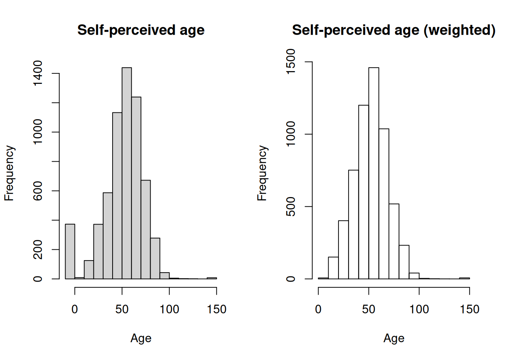
Unweighted results
Weighted results
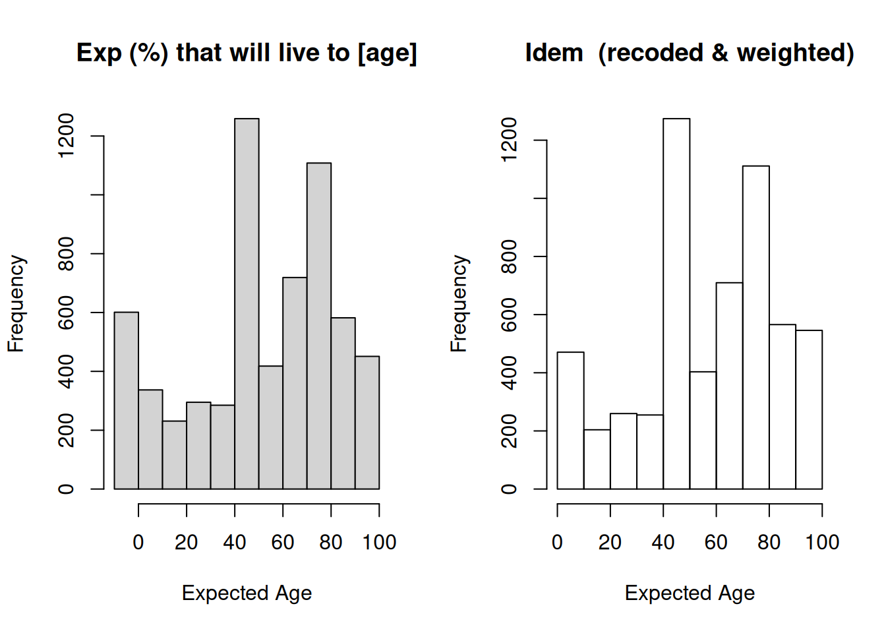
Unweighted results
Weighted results
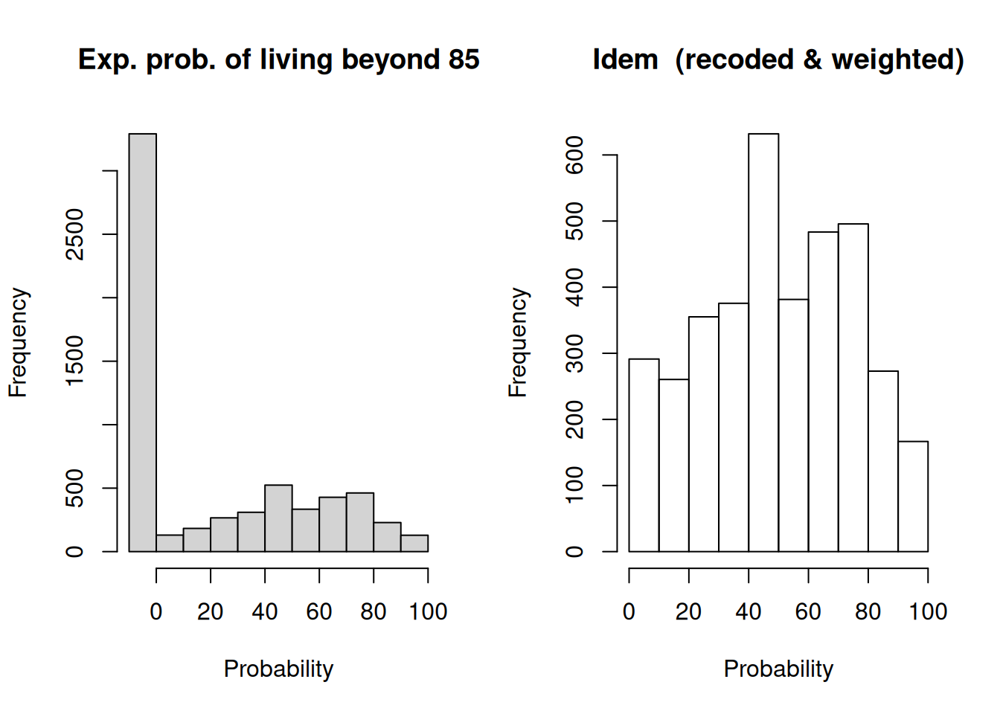
Unweighted results
Weighted results
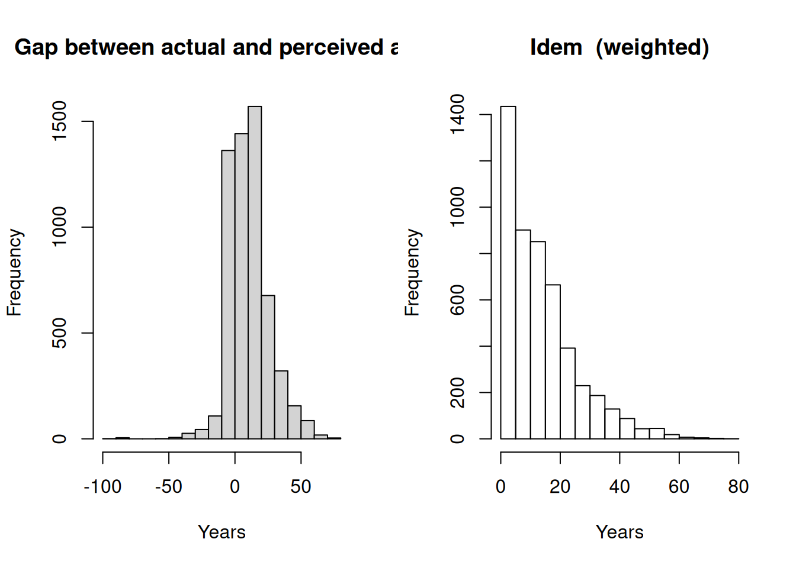
4. Bivariates results
This section contains for each variable used in the study, the following contingency tables:
- With voter turnout at the 2019 General Election
- With sex
- With age, two and three categories
All contingency tables were computed with weighted data and include \(\chi^2\) test of independence.
4.1. Voter turnout at the 2019 GE
Whether voted at 2019 GE by Recoded age, 2 category(AgeCat2)
| 50-69 | 70+ | |||
|---|---|---|---|---|
| Freq | % | Freq | % | |
| Didn’t vote | 658.2 | 19.51 | 190.8 | 10.55 |
| Voted | 2715.5 | 80.49 | 1618.8 | 89.45 |
| Total | 3373.7 | 100 | 1809.6 | 100 |
[1] “Pearson’s X^2: Rao & Scott adjustment”
F ndf X-squared 54.119 1.000 0.000
Whether voted at 2019 GE by Recoded age, 3 category(AgeCat3)
| 50-69 | 70-79 | 80+ | ||||
|---|---|---|---|---|---|---|
| Freq | % | Freq | % | Freq | % | |
| Didn’t vote | 658.2 | 19.51 | 126.5 | 9.9 | 64.4 | 12.11 |
| Voted | 2715.5 | 80.49 | 1151.5 | 90.1 | 467.3 | 87.89 |
| Total | 3373.7 | 100 | 1278 | 100 | 531.7 | 100 |
[1] “Pearson’s X^2: Rao & Scott adjustment”
F ndf X-squared 31.252 1.964 0.000
Whether voted at 2019 GE by Gap: actual and perceived age (exact)(AgeGap31)
| Feels older than age | Feels their age | Feels younger than age | ||||
|---|---|---|---|---|---|---|
| Freq | % | Freq | % | Freq | % | |
| Didn’t vote | 155.4 | 27.14 | 127.4 | 15.32 | 537.4 | 14.7 |
| Voted | 417.2 | 72.86 | 704.1 | 84.68 | 3118.9 | 85.3 |
| Total | 572.6 | 100 | 831.5 | 100 | 3656.3 | 100 |
[1] “Pearson’s X^2: Rao & Scott adjustment”
F ndf X-squared 14.877 1.922 0.000
Whether voted at 2019 GE by Gap: actual and perceived age (3 years)(AgeGap32)
| Feels > 3 years older | Feels > 3 years younger | Feels within 3 years of actual age | ||||
|---|---|---|---|---|---|---|
| Freq | % | Freq | % | Freq | % | |
| Didn’t vote | 110.1 | 30.15 | 515.6 | 14.82 | 194.4 | 16 |
| Voted | 255 | 69.85 | 2964.4 | 85.18 | 1020.8 | 84 |
| Total | 365.1 | 100 | 3480 | 100 | 1215.2 | 100 |
[1] “Pearson’s X^2: Rao & Scott adjustment”
F ndf X-squared 13.987 1.967 0.000
Whether voted at 2019 GE by Self-rated mental abilities V2(cfmap2)
| Excellent/v good | Good/Fair | Poor | ||||
|---|---|---|---|---|---|---|
| Freq | % | Freq | % | Freq | % | |
| Didn’t vote | 267.2 | 12.22 | 545.9 | 18.64 | 28.7 | 26.92 |
| Voted | 1919.8 | 87.78 | 2383 | 81.36 | 78 | 73.08 |
| Total | 2187 | 100 | 2928.9 | 100 | 106.7 | 100 |
[1] “Pearson’s X^2: Rao & Scott adjustment”
F ndf X-squared 13.288 1.984 0.000
Whether voted at 2019 GE by Self-rated mental abilities V3(cfmap3)
| Excellent/v good | Fair | Good | Poor | |||||
|---|---|---|---|---|---|---|---|---|
| Freq | % | Freq | % | Freq | % | Freq | % | |
| Didn’t vote | 267.2 | 12.22 | 195.2 | 28.08 | 350.7 | 15.7 | 28.7 | 26.92 |
| Voted | 1919.8 | 87.78 | 500 | 71.92 | 1883 | 84.3 | 78 | 73.08 |
| Total | 2187 | 100 | 695.2 | 100 | 2233.7 | 100 | 106.7 | 100 |
[1] “Pearson’s X^2: Rao & Scott adjustment”
F ndf X-squared 19.082 2.957 0.000
Whether voted at 2019 GE by Self-rated memory V2(cfmetm2)
| Excellent/v good | Good/Fair | Poor | ||||
|---|---|---|---|---|---|---|
| Freq | % | Freq | % | Freq | % | |
| Didn’t vote | 153.4 | 11.61 | 614.9 | 17.23 | 73 | 22.18 |
| Voted | 1167.6 | 88.39 | 2954.2 | 82.77 | 256.2 | 77.82 |
| Total | 1321 | 100 | 3569.1 | 100 | 329.2 | 100 |
[1] “Pearson’s X^2: Rao & Scott adjustment”
F ndf X-squared
8.985 1.997 0.000 Whether voted at 2019 GE by Self-rated memory V3(cfmetm3)
| Excellent/v good | Fair | Good | Poor | |||||
|---|---|---|---|---|---|---|---|---|
| Freq | % | Freq | % | Freq | % | Freq | % | |
| Didn’t vote | 153.4 | 11.61 | 257.3 | 19.74 | 357.6 | 15.78 | 73 | 22.18 |
| Voted | 1167.6 | 88.39 | 1046 | 80.26 | 1908.2 | 84.22 | 256.2 | 77.82 |
| Total | 1321 | 100 | 1303.3 | 100 | 2265.8 | 100 | 329.2 | 100 |
[1] “Pearson’s X^2: Rao & Scott adjustment”
F ndf X-squared
7.425 2.981 0.000 Whether voted at 2019 GE by Whether has any grandchildren(digran)
| Has gchild | None | |||
|---|---|---|---|---|
| Freq | % | Freq | % | |
| Didn’t vote | 162.5 | 23.44 | 232.4 | 15.43 |
| Voted | 530.7 | 76.56 | 1273.9 | 84.57 |
| Total | 693.2 | 100 | 1506.3 | 100 |
[1] “Pearson’s X^2: Rao & Scott adjustment”
F ndf X-squared
8.606 1.000 0.003 Whether voted at 2019 GE by Marital/relationship status(dimarr)
| Divorced/separated | Married/SP | Single | Widowed | |||||
|---|---|---|---|---|---|---|---|---|
| Freq | % | Freq | % | Freq | % | Freq | % | |
| Didn’t vote | 195.9 | 25.15 | 432.7 | 12.82 | 152.5 | 26.17 | 76.4 | 14.52 |
| Voted | 583.1 | 74.85 | 2943.3 | 87.18 | 430.1 | 73.83 | 449.6 | 85.48 |
| Total | 779 | 100 | 3376 | 100 | 582.6 | 100 | 526 | 100 |
[1] “Pearson’s X^2: Rao & Scott adjustment”
F ndf X-squared 21.635 2.737 0.000
Whether voted at 2019 GE by Educational level(edqual)
| Below secondary | Further/Degree level | Other | Secondary | |||||
|---|---|---|---|---|---|---|---|---|
| Freq | % | Freq | % | Freq | % | Freq | % | |
| Didn’t vote | 221.1 | 29.04 | 175.9 | 8.96 | 49.5 | 13.03 | 397.9 | 19.12 |
| Voted | 540.3 | 70.96 | 1786.4 | 91.04 | 330.6 | 86.97 | 1682.9 | 80.88 |
| Total | 761.4 | 100 | 1962.3 | 100 | 380.1 | 100 | 2080.8 | 100 |
[1] “Pearson’s X^2: Rao & Scott adjustment”
F ndf X-squared 34.496 2.931 0.000
Whether voted at 2019 GE by Volunteered(erfvol)
| Not mentioned | Mentioned | |||
|---|---|---|---|---|
| Freq | % | Freq | % | |
| Didn’t vote | 823.5 | 16.34 | 15.8 | 9.03 |
| Voted | 4214.8 | 83.66 | 158.9 | 90.97 |
| Total | 5038.3 | 100 | 174.7 | 100 |
[1] “Pearson’s X^2: Rao & Scott adjustment”
F ndf X-squared
3.384 1.000 0.066 Whether voted at 2019 GE by Cared for baby/child(erlvolba)
| Did childcare | No childcare | |||
|---|---|---|---|---|
| Freq | % | Freq | % | |
| Didn’t vote | 32.9 | 11.37 | 806.3 | 16.39 |
| Voted | 256.5 | 88.63 | 4114.8 | 83.61 |
| Total | 289.4 | 100 | 4921.1 | 100 |
[1] “Pearson’s X^2: Rao & Scott adjustment”
F ndf X-squared
2.695 1.000 0.101 Whether voted at 2019 GE by Whether cared for a sick/frail person(erlvolpe)
| Cared for sick/frail | Not a carer | |||
|---|---|---|---|---|
| Freq | % | Freq | % | |
| Didn’t vote | 26.8 | 18.13 | 812.4 | 16.05 |
| Voted | 121.1 | 81.87 | 4250.3 | 83.95 |
| Total | 147.9 | 100 | 5062.7 | 100 |
[1] “Pearson’s X^2: Rao & Scott adjustment”
F ndf X-squared
0.152 1.000 0.696 Whether voted at 2019 GE by White vs Non-white(ethnic)
| White | Non-White | |||
|---|---|---|---|---|
| Freq | % | Freq | % | |
| Didn’t vote | 264.1 | 11.07 | 9.7 | 18.01 |
| Voted | 2121.4 | 88.93 | 44.3 | 81.99 |
| Total | 2385.5 | 100 | 54 | 100 |
[1] “Pearson’s X^2: Rao & Scott adjustment”
F ndf X-squared
2.651 1.000 0.104 Whether voted at 2019 GE by Whether reckon that will live to be 85 yo or more (dichotomic)(exlo90d)
| No | Yes | |||
|---|---|---|---|---|
| Freq | % | Freq | % | |
| Didn’t vote | 593.6 | 16.21 | 263.9 | 16.42 |
| Voted | 3067 | 83.79 | 1343.6 | 83.58 |
| Total | 3660.6 | 100 | 1607.5 | 100 |
[1] “Pearson’s X^2: Rao & Scott adjustment”
F ndf X-squared
0.017 1.000 0.898 Whether voted at 2019 GE by Too little money to spend on their needs?(exrela)
| Never/rarely | Often/M of the T | Sometimes | ||||
|---|---|---|---|---|---|---|
| Freq | % | Freq | % | Freq | % | |
| Didn’t vote | 489.2 | 12.34 | 124.9 | 36.61 | 223.4 | 24.92 |
| Voted | 3474.6 | 87.66 | 216.3 | 63.39 | 673 | 75.08 |
| Total | 3963.8 | 100 | 341.2 | 100 | 896.4 | 100 |
[1] “Pearson’s X^2: Rao & Scott adjustment”
F ndf X-squared 41.295 1.919 0.000
Whether voted at 2019 GE by Difficulty bathing or showering(headlba)
| Not mentioned | Mentioned | |||
|---|---|---|---|---|
| Freq | % | Freq | % | |
| Didn’t vote | 715.4 | 14.87 | 142.1 | 31 |
| Voted | 4094.4 | 85.13 | 316.2 | 69 |
| Total | 4809.8 | 100 | 458.3 | 100 |
[1] “Pearson’s X^2: Rao & Scott adjustment”
F ndf X-squared 37.591 1.000 0.000
Whether voted at 2019 GE by Difficulty getting in and out of bed(headlbe)
| Not mentioned | Mentioned | |||
|---|---|---|---|---|
| Freq | % | Freq | % | |
| Didn’t vote | 742.8 | 15.13 | 114.7 | 31.87 |
| Voted | 4165.6 | 84.87 | 245.1 | 68.13 |
| Total | 4908.4 | 100 | 359.8 | 100 |
[1] “Pearson’s X^2: Rao & Scott adjustment”
F ndf X-squared 33.365 1.000 0.000
Whether voted at 2019 GE by Self-reported general health V2(hehelf2)
| Excel/V good | Good/Fair | Poor | ||||
|---|---|---|---|---|---|---|
| Freq | % | Freq | % | Freq | % | |
| Didn’t vote | 205.1 | 9.99 | 475.3 | 17.34 | 177 | 37.31 |
| Voted | 1847.1 | 90.01 | 2265.6 | 82.66 | 297.5 | 62.69 |
| Total | 2052.2 | 100 | 2740.9 | 100 | 474.5 | 100 |
[1] “Pearson’s X^2: Rao & Scott adjustment”
F ndf X-squared 57.529 1.986 0.000
Whether voted at 2019 GE by Self-reported general health V3(hehelf3)
| Excel/V good | Fair | Good | Poor | |||||
|---|---|---|---|---|---|---|---|---|
| Freq | % | Freq | % | Freq | % | Freq | % | |
| Didn’t vote | 205.1 | 9.99 | 186.2 | 18.5 | 289.1 | 16.67 | 177 | 37.31 |
| Voted | 1847.1 | 90.01 | 820.3 | 81.5 | 1445.3 | 83.33 | 297.5 | 62.69 |
| Total | 2052.2 | 100 | 1006.5 | 100 | 1734.4 | 100 | 474.5 | 100 |
[1] “Pearson’s X^2: Rao & Scott adjustment”
F ndf X-squared 38.749 2.966 0.000
Whether voted at 2019 GE by Recoded household type, 4 categories(hhdtypb)
| Family, large or small | Large adult HH | Other | Single person HH | Two adults HH | ||||||
|---|---|---|---|---|---|---|---|---|---|---|
| Freq | % | Freq | % | Freq | % | Freq | % | Freq | % | |
| Didn’t vote | 32.6 | 12.05 | 72.4 | 9.86 | 583.6 | 20.64 | 51.6 | 16.89 | 117.2 | 10.37 |
| Voted | 237.7 | 87.95 | 662.2 | 90.14 | 2243.3 | 79.36 | 254 | 83.11 | 1013.5 | 89.63 |
| Total | 270.3 | 100 | 734.6 | 100 | 2826.9 | 100 | 305.6 | 100 | 1130.7 | 100 |
[1] “Pearson’s X^2: Rao & Scott adjustment”
F ndf X-squared 20.908 3.862 0.000
Whether voted at 2019 GE by Internet connection?(hobb)
| Yes | No | |||
|---|---|---|---|---|
| Freq | % | Freq | % | |
| Didn’t vote | 746.6 | 15.22 | 98.8 | 30.67 |
| Voted | 4160.4 | 84.78 | 223.4 | 69.33 |
| Total | 4907 | 100 | 322.2 | 100 |
[1] “Pearson’s X^2: Rao & Scott adjustment”
F ndf X-squared 26.042 1.000 0.000
Whether voted at 2019 GE by Financial situation(iafcon)
| Does not manage well | Get by alright | Manage quite well | Manage very well | |||||
|---|---|---|---|---|---|---|---|---|
| Freq | % | Freq | % | Freq | % | Freq | % | |
| Didn’t vote | 87.4 | 35.46 | 250.4 | 21.11 | 266.6 | 17.51 | 194.6 | 10.28 |
| Voted | 159.1 | 64.54 | 935.8 | 78.89 | 1256.1 | 82.49 | 1699.2 | 89.72 |
| Total | 246.5 | 100 | 1186.2 | 100 | 1522.7 | 100 | 1893.8 | 100 |
[1] “Pearson’s X^2: Rao & Scott adjustment”
F ndf X-squared 20.436 2.757 0.000
Whether voted at 2019 GE by Who has the final say in big financial decisions(iafind)
| Respondent | Partner | Both have equal say | Another family member (e.g. son/daughter) | |||||
|---|---|---|---|---|---|---|---|---|
| Freq | % | Freq | % | Freq | % | Freq | % | |
| Didn’t vote | 61.4 | 16.1 | 64.2 | 24.62 | 322.5 | 12.38 | 2 | 12.83 |
| Voted | 319.7 | 83.9 | 196.4 | 75.38 | 2282 | 87.62 | 13.7 | 87.17 |
| Total | 381.1 | 100 | 260.6 | 100 | 2604.5 | 100 | 15.7 | 100 |
[1] “Pearson’s X^2: Rao & Scott adjustment”
F ndf X-squared
5.097 2.598 0.003 Whether voted at 2019 GE by Sex(indsex)
| Male | Female | |||
|---|---|---|---|---|
| Freq | % | Freq | % | |
| Didn’t vote | 400.6 | 16.14 | 456.9 | 16.4 |
| Voted | 2081.9 | 83.86 | 2328.7 | 83.6 |
| Total | 2482.5 | 100 | 2785.6 | 100 |
[1] “Pearson’s X^2: Rao & Scott adjustment”
F ndf X-squared
0.034 1.000 0.854 Whether voted at 2019 GE by Whether happy much of the time last week(pscedd)
| Yes | No | |||
|---|---|---|---|---|
| Freq | % | Freq | % | |
| Didn’t vote | 709.2 | 15.33 | 123.4 | 21.9 |
| Voted | 3918.3 | 84.67 | 440.2 | 78.1 |
| Total | 4627.5 | 100 | 563.6 | 100 |
[1] “Pearson’s X^2: Rao & Scott adjustment”
F ndf X-squared
8.439 1.000 0.004 Whether voted at 2019 GE by Feels lonely?(pscede)
| Yes | No | |||
|---|---|---|---|---|
| Freq | % | Freq | % | |
| Didn’t vote | 180 | 26.49 | 661.2 | 14.6 |
| Voted | 499.5 | 73.51 | 3867.3 | 85.4 |
| Total | 679.5 | 100 | 4528.5 | 100 |
[1] “Pearson’s X^2: Rao & Scott adjustment”
F ndf X-squared 27.766 1.000 0.000
Whether voted at 2019 GE by I want to give back to my community(sclfcoa)
| Give back to community | Not so much | |||
|---|---|---|---|---|
| Freq | % | Freq | % | |
| Didn’t vote | 596.8 | 13.99 | 208.2 | 26.41 |
| Voted | 3670.4 | 86.01 | 580.2 | 73.59 |
| Total | 4267.2 | 100 | 788.4 | 100 |
[1] “Pearson’s X^2: Rao & Scott adjustment”
F ndf X-squared 36.895 1.000 0.000
Whether voted at 2019 GE by Whether member of a charity(scorgch)
| Member of a charity | Not a member | |||
|---|---|---|---|---|
| Freq | % | Freq | % | |
| Didn’t vote | 53.2 | 6.8 | 740.6 | 17.31 |
| Voted | 729.6 | 93.2 | 3537.8 | 82.69 |
| Total | 782.8 | 100 | 4278.4 | 100 |
[1] “Pearson’s X^2: Rao & Scott adjustment”
F ndf X-squared 27.451 1.000 0.000
Whether voted at 2019 GE by Whether member of a party, union or environmental groups(scorgpo)
| No | Yes | |||
|---|---|---|---|---|
| Freq | % | Freq | % | |
| Didn’t vote | 738 | 16.69 | 55.8 | 8.72 |
| Voted | 3683.2 | 83.31 | 584.2 | 91.28 |
| Total | 4421.2 | 100 | 640 | 100 |
[1] “Pearson’s X^2: Rao & Scott adjustment”
F ndf X-squared 13.533 1.000 0.000
Whether voted at 2019 GE by Whether member of a church or other religious group(scorgrl)
| No | Yes | |||
|---|---|---|---|---|
| Freq | % | Freq | % | |
| Didn’t vote | 688.9 | 16.13 | 104.9 | 13.29 |
| Voted | 3583.1 | 83.87 | 684.3 | 86.71 |
| Total | 4272 | 100 | 789.2 | 100 |
[1] “Pearson’s X^2: Rao & Scott adjustment”
F ndf X-squared
2.101 1.000 0.147 Whether voted at 2019 GE by Whether has use of car/van, as a driver or a passenger(spcar)
| Yes | No | |||
|---|---|---|---|---|
| Freq | % | Freq | % | |
| Didn’t vote | 669.5 | 14.37 | 187.9 | 30.83 |
| Voted | 3988.9 | 85.63 | 421.7 | 69.17 |
| Total | 4658.4 | 100 | 609.6 | 100 |
[1] “Pearson’s X^2: Rao & Scott adjustment”
F ndf X-squared 51.787 1.000 0.000
Whether voted at 2019 GE by How often respondent uses public transport(sptraa)
| Monthly or less | MT once a month | Several times a week/daily | ||||
|---|---|---|---|---|---|---|
| Freq | % | Freq | % | Freq | % | |
| Didn’t vote | 636 | 16.42 | 93.3 | 12.69 | 128.1 | 19.46 |
| Voted | 3238.3 | 83.58 | 641.9 | 87.31 | 530.5 | 80.54 |
| Total | 3874.3 | 100 | 735.2 | 100 | 658.6 | 100 |
[1] “Pearson’s X^2: Rao & Scott adjustment”
F ndf X-squared
2.965 1.964 0.053 Whether voted at 2019 GE by Household Tenure(tenureb)
| Mortgage | Owner | Renter | ||||
|---|---|---|---|---|---|---|
| Freq | % | Freq | % | Freq | % | |
| Didn’t vote | 107.5 | 9.26 | 91.1 | 9.52 | 73.6 | 22.89 |
| Voted | 1053.3 | 90.74 | 865.8 | 90.48 | 247.9 | 77.11 |
| Total | 1160.8 | 100 | 956.9 | 100 | 321.5 | 100 |
[1] “Pearson’s X^2: Rao & Scott adjustment”
F ndf X-squared 24.761 1.973 0.000
Whether voted at 2019 GE by Whether voter at the 2001 GE(VotGE01)
| Didn’t vote | Voted | |||
|---|---|---|---|---|
| Freq | % | Freq | % | |
| Didn’t vote | 65.7 | 28.97 | 81.2 | 6.63 |
| Voted | 161.2 | 71.03 | 1144 | 93.37 |
| Total | 226.9 | 100 | 1225.2 | 100 |
[1] “Pearson’s X^2: Rao & Scott adjustment”
F ndf X-squared 107.096 1.000 0.000
Whether voted at 2019 GE by Whether voter at the 2005 GE(VotGE05)
| Didn’t vote | Voted | |||
|---|---|---|---|---|
| Freq | % | Freq | % | |
| Didn’t vote | 89.4 | 36.63 | 86.2 | 6.27 |
| Voted | 154.6 | 63.37 | 1290 | 93.73 |
| Total | 244 | 100 | 1376.2 | 100 |
[1] “Pearson’s X^2: Rao & Scott adjustment”
F ndf X-squared 194.243 1.000 0.000
Whether voted at 2019 GE by Whether voter at the 2015 GE(VotGE15)
| Didn’t vote | Voted | |||
|---|---|---|---|---|
| Freq | % | Freq | % | |
| Didn’t vote | 167.4 | 26.17 | 155.3 | 7.47 |
| Voted | 472.3 | 73.83 | 1924.5 | 92.53 |
| Total | 639.7 | 100 | 2079.8 | 100 |
[1] “Pearson’s X^2: Rao & Scott adjustment”
F ndf X-squared 146.206 1.000 0.000
Whether voted at 2019 GE by Whether voter at the 2017 GE(VotGE17)
| Didn’t vote | Voted | |||
|---|---|---|---|---|
| Freq | % | Freq | % | |
| Didn’t vote | 221 | 73.55 | 213.7 | 7.14 |
| Voted | 79.5 | 26.45 | 2779.6 | 92.86 |
| Total | 300.5 | 100 | 2993.3 | 100 |
[1] “Pearson’s X^2: Rao & Scott adjustment”
F ndf X-squared 853.408 1.000 0.000
Whether voted at 2019 GE by Past voting record, dichotomic(VotRec2)
| None | Voted in the past | |||
|---|---|---|---|---|
| Freq | % | Freq | % | |
| Didn’t vote | 38.9 | 75.81 | 103.9 | 7.79 |
| Voted | 12.4 | 24.19 | 1230.5 | 92.21 |
| Total | 51.3 | 100 | 1334.4 | 100 |
[1] “Pearson’s X^2: Rao & Scott adjustment”
F ndf X-squared 230.365 1.000 0.000
Whether voted at 2019 GE by Past voting record, v1(VotRec0)
| 1-2 | 3-4 | None | ||||
|---|---|---|---|---|---|---|
| Freq | % | Freq | % | Freq | % | |
| Didn’t vote | 44.9 | 22.52 | 59 | 5.2 | 38.9 | 75.81 |
| Voted | 154.6 | 77.48 | 1075.9 | 94.8 | 12.4 | 24.19 |
| Total | 199.5 | 100 | 1134.9 | 100 | 51.3 | 100 |
[1] “Pearson’s X^2: Rao & Scott adjustment”
F ndf X-squared 147.391 1.995 0.000
Whether voted at 2019 GE by Past voting record, v2(VotRec01)
| 2 | 3-4 | None or 1 | ||||
|---|---|---|---|---|---|---|
| Freq | % | Freq | % | Freq | % | |
| Didn’t vote | 22.6 | 14.86 | 59 | 5.2 | 61.3 | 61.9 |
| Voted | 129.3 | 85.14 | 1075.9 | 94.8 | 37.7 | 38.1 |
| Total | 151.9 | 100 | 1134.9 | 100 | 99 | 100 |
[1] “Pearson’s X^2: Rao & Scott adjustment”
F ndf X-squared 163.411 1.996 0.000
Whether voted at 2019 GE by NS-SEC 5 category(w10nssec5)
| Higher MAP | Intermediate | Semi-routine/routine | Small emp, lower superv. | |||||
|---|---|---|---|---|---|---|---|---|
| Freq | % | Freq | % | Freq | % | Freq | % | |
| Didn’t vote | 78.4 | 9.23 | 43.9 | 19.6 | 214.2 | 37.55 | 51.8 | 16.91 |
| Voted | 771.2 | 90.77 | 180 | 80.4 | 356.2 | 62.45 | 254.4 | 83.09 |
| Total | 849.6 | 100 | 223.9 | 100 | 570.4 | 100 | 306.2 | 100 |
[1] “Pearson’s X^2: Rao & Scott adjustment”
F ndf X-squared 25.885 2.968 0.000
Whether voted at 2019 GE by Economic activity(wpdes)
| FT carer + unemp. | In employment | LT sick/disabled | Retired (inc part) | |||||
|---|---|---|---|---|---|---|---|---|
| Freq | % | Freq | % | Freq | % | Freq | % | |
| Didn’t vote | 74.4 | 29.13 | 367.5 | 17.95 | 114.5 | 44.42 | 295.1 | 11 |
| Voted | 181 | 70.87 | 1680.3 | 82.05 | 143.2 | 55.58 | 2387.8 | 89 |
| Total | 255.4 | 100 | 2047.8 | 100 | 257.7 | 100 | 2682.9 | 100 |
[1] “Pearson’s X^2: Rao & Scott adjustment”
F ndf X-squared 36.235 2.867 0.000
Whether voted at 2019 GE by Recoded age, 2 category(AgeCat2)
| 50-69 | 70+ | |||
|---|---|---|---|---|
| Freq | % | Freq | % | |
| Didn’t vote | 658.2 | 19.51 | 190.8 | 10.55 |
| Voted | 2715.5 | 80.49 | 1618.8 | 89.45 |
| Total | 3373.7 | 100 | 1809.6 | 100 |
[1] “Pearson’s X^2: Rao & Scott adjustment”
F ndf X-squared 54.119 1.000 0.000
Whether voted at 2019 GE by Recoded age, 3 category(AgeCat3)
| 50-69 | 70-79 | 80+ | ||||
|---|---|---|---|---|---|---|
| Freq | % | Freq | % | Freq | % | |
| Didn’t vote | 658.2 | 19.51 | 126.5 | 9.9 | 64.4 | 12.11 |
| Voted | 2715.5 | 80.49 | 1151.5 | 90.1 | 467.3 | 87.89 |
| Total | 3373.7 | 100 | 1278 | 100 | 531.7 | 100 |
[1] “Pearson’s X^2: Rao & Scott adjustment”
F ndf X-squared 31.252 1.964 0.000
4.2. Sex
Sex by Recoded age, 2 category(AgeCat2)
| 50-69 | 70+ | |||
|---|---|---|---|---|
| Freq | % | Freq | % | |
| Male | 1974 | 48.95 | 941.6 | 45.76 |
| Female | 2059 | 51.05 | 1116.1 | 54.24 |
| Total | 4033 | 100 | 2057.7 | 100 |
[1] “Pearson’s X^2: Rao & Scott adjustment”
F ndf X-squared
4.487 1.000 0.034 Sex by Recoded age, 3 category(AgeCat3)
| 50-69 | 70-79 | 80+ | ||||
|---|---|---|---|---|---|---|
| Freq | % | Freq | % | Freq | % | |
| Male | 1974 | 48.95 | 669.3 | 47.11 | 272.3 | 42.75 |
| Female | 2059 | 51.05 | 751.4 | 52.89 | 364.7 | 57.25 |
| Total | 4033 | 100 | 1420.7 | 100 | 637 | 100 |
[1] “Pearson’s X^2: Rao & Scott adjustment”
F ndf X-squared
4.264 1.935 0.015 Sex by Gap: actual and perceived age (exact)(AgeGap31)
| Feels older than age | Feels their age | Feels younger than age | ||||
|---|---|---|---|---|---|---|
| Freq | % | Freq | % | Freq | % | |
| Male | 299.5 | 42.32 | 449.1 | 47.12 | 1940.7 | 47.99 |
| Female | 408.2 | 57.68 | 504 | 52.88 | 2103.5 | 52.01 |
| Total | 707.7 | 100 | 953.1 | 100 | 4044.2 | 100 |
[1] “Pearson’s X^2: Rao & Scott adjustment”
F ndf X-squared
2.226 1.961 0.109 Sex by Gap: actual and perceived age (3 years)(AgeGap32)
| Feels > 3 years older | Feels > 3 years younger | Feels within 3 years of actual age | ||||
|---|---|---|---|---|---|---|
| Freq | % | Freq | % | Freq | % | |
| Male | 165.7 | 35.75 | 1831.3 | 48.02 | 692.4 | 48.48 |
| Female | 297.8 | 64.25 | 1982.1 | 51.98 | 735.8 | 51.52 |
| Total | 463.5 | 100 | 3813.4 | 100 | 1428.2 | 100 |
[1] “Pearson’s X^2: Rao & Scott adjustment”
F ndf X-squared
7.143 1.961 0.001 Sex by Self-rated mental abilities V2(cfmap2)
| Excellent/v good | Good/Fair | Poor | ||||
|---|---|---|---|---|---|---|
| Freq | % | Freq | % | Freq | % | |
| Male | 1300.1 | 53.05 | 1428 | 42.95 | 49.9 | 33.58 |
| Female | 1150.5 | 46.95 | 1896.8 | 57.05 | 98.6 | 66.42 |
| Total | 2450.6 | 100 | 3324.8 | 100 | 148.5 | 100 |
[1] “Pearson’s X^2: Rao & Scott adjustment”
F ndf X-squared 21.318 2.000 0.000
Sex by Self-rated mental abilities V3(cfmap3)
| Excellent/v good | Fair | Good | Poor | |||||
|---|---|---|---|---|---|---|---|---|
| Freq | % | Freq | % | Freq | % | Freq | % | |
| Male | 1300.1 | 53.05 | 338.7 | 41.17 | 1089.3 | 43.53 | 49.9 | 33.58 |
| Female | 1150.5 | 46.95 | 483.9 | 58.83 | 1412.9 | 56.47 | 98.6 | 66.42 |
| Total | 2450.6 | 100 | 822.6 | 100 | 2502.2 | 100 | 148.5 | 100 |
[1] “Pearson’s X^2: Rao & Scott adjustment”
F ndf X-squared 14.085 2.990 0.000
Sex by Self-rated memory V2(cfmetm2)
| Excellent/v good | Good/Fair | Poor | ||||
|---|---|---|---|---|---|---|
| Freq | % | Freq | % | Freq | % | |
| Male | 770.5 | 51.05 | 1827.4 | 45.73 | 174.3 | 42.2 |
| Female | 738.9 | 48.95 | 2168.5 | 54.27 | 238.7 | 57.8 |
| Total | 1509.4 | 100 | 3995.9 | 100 | 413 | 100 |
[1] “Pearson’s X^2: Rao & Scott adjustment”
F ndf X-squared
5.037 1.999 0.007 Sex by Self-rated memory V3(cfmetm3)
| Excellent/v good | Fair | Good | Poor | |||||
|---|---|---|---|---|---|---|---|---|
| Freq | % | Freq | % | Freq | % | Freq | % | |
| Male | 770.5 | 51.05 | 672.8 | 45.21 | 1154.7 | 46.04 | 174.3 | 42.2 |
| Female | 738.9 | 48.95 | 815.4 | 54.79 | 1353.1 | 53.96 | 238.7 | 57.8 |
| Total | 1509.4 | 100 | 1488.2 | 100 | 2507.8 | 100 | 413 | 100 |
[1] “Pearson’s X^2: Rao & Scott adjustment”
F ndf X-squared
3.439 2.998 0.016 Sex by Whether has any grandchildren(digran)
| Has gchild | None | |||
|---|---|---|---|---|
| Freq | % | Freq | % | |
| Male | 405 | 42.43 | 917.7 | 50.57 |
| Female | 549.5 | 57.57 | 897.2 | 49.43 |
| Total | 954.5 | 100 | 1814.9 | 100 |
[1] “Pearson’s X^2: Rao & Scott adjustment”
F ndf X-squared
8.117 1.000 0.004 Sex by Marital/relationship status(dimarr)
| Divorced/separated | Married/SP | Single | Widowed | |||||
|---|---|---|---|---|---|---|---|---|
| Freq | % | Freq | % | Freq | % | Freq | % | |
| Male | 352.8 | 37.79 | 2057.1 | 52.14 | 387.6 | 53.87 | 168.3 | 27.02 |
| Female | 580.8 | 62.21 | 1888 | 47.86 | 331.9 | 46.13 | 454.6 | 72.98 |
| Total | 933.6 | 100 | 3945.1 | 100 | 719.5 | 100 | 622.9 | 100 |
[1] “Pearson’s X^2: Rao & Scott adjustment”
F ndf X-squared 38.207 2.874 0.000
Sex by Educational level(edqual)
| Below secondary | Further/Degree level | Other | Secondary | |||||
|---|---|---|---|---|---|---|---|---|
| Freq | % | Freq | % | Freq | % | Freq | % | |
| Male | 402.3 | 40.68 | 1240.2 | 55.25 | 178.3 | 40.52 | 1075.5 | 44.19 |
| Female | 586.7 | 59.32 | 1004.6 | 44.75 | 261.7 | 59.48 | 1358.2 | 55.81 |
| Total | 989 | 100 | 2244.8 | 100 | 440 | 100 | 2433.7 | 100 |
[1] “Pearson’s X^2: Rao & Scott adjustment”
F ndf X-squared 17.782 2.970 0.000
Sex by Volunteered(erfvol)
| Not mentioned | Mentioned | |||
|---|---|---|---|---|
| Freq | % | Freq | % | |
| Male | 2704.8 | 47.34 | 73.6 | 36.6 |
| Female | 3009 | 52.66 | 127.6 | 63.4 |
| Total | 5713.8 | 100 | 201.2 | 100 |
[1] “Pearson’s X^2: Rao & Scott adjustment”
F ndf X-squared
5.777 1.000 0.016 Sex by Cared for baby/child(erlvolba)
| Did childcare | No childcare | |||
|---|---|---|---|---|
| Freq | % | Freq | % | |
| Male | 101.4 | 31.39 | 2675.9 | 47.87 |
| Female | 221.7 | 68.61 | 2913.7 | 52.13 |
| Total | 323.1 | 100 | 5589.6 | 100 |
[1] “Pearson’s X^2: Rao & Scott adjustment”
F ndf X-squared 17.891 1.000 0.000
Sex by Whether cared for a sick/frail person(erlvolpe)
| Cared for sick/frail | Not a carer | |||
|---|---|---|---|---|
| Freq | % | Freq | % | |
| Male | 67.7 | 41.43 | 2709.6 | 47.13 |
| Female | 95.6 | 58.57 | 3039.7 | 52.87 |
| Total | 163.3 | 100 | 5749.3 | 100 |
[1] “Pearson’s X^2: Rao & Scott adjustment”
F ndf X-squared
0.949 1.000 0.330 Sex by White vs Non-white(ethnic)
| White | Non-White | |||
|---|---|---|---|---|
| Freq | % | Freq | % | |
| Male | 1225.6 | 45.6 | 40.2 | 48.95 |
| Female | 1461.9 | 54.4 | 41.9 | 51.05 |
| Total | 2687.5 | 100 | 82.1 | 100 |
[1] “Pearson’s X^2: Rao & Scott adjustment”
F ndf X-squared
0.345 1.000 0.557 Sex by Whether reckon that will live to be 85 yo or more (dichotomic)(exlo90d)
| No | Yes | |||
|---|---|---|---|---|
| Freq | % | Freq | % | |
| Male | 2163.9 | 48.89 | 805.8 | 44.76 |
| Female | 2262 | 51.11 | 994.4 | 55.24 |
| Total | 4425.9 | 100 | 1800.2 | 100 |
[1] “Pearson’s X^2: Rao & Scott adjustment”
F ndf X-squared
4.972 1.000 0.026 Sex by Too little money to spend on their needs?(exrela)
| Never/rarely | Often/M of the T | Sometimes | ||||
|---|---|---|---|---|---|---|
| Freq | % | Freq | % | Freq | % | |
| Male | 2133.5 | 48.58 | 192.5 | 43.95 | 442.4 | 41.43 |
| Female | 2258.3 | 51.42 | 245.6 | 56.05 | 625.4 | 58.57 |
| Total | 4391.8 | 100 | 438.1 | 100 | 1067.8 | 100 |
[1] “Pearson’s X^2: Rao & Scott adjustment”
F ndf X-squared
4.352 1.928 0.014 Sex by Difficulty bathing or showering(headlba)
| Not mentioned | Mentioned | |||
|---|---|---|---|---|
| Freq | % | Freq | % | |
| Male | 2748.4 | 49.16 | 221.3 | 34.81 |
| Female | 2841.9 | 50.84 | 414.4 | 65.19 |
| Total | 5590.3 | 100 | 635.7 | 100 |
[1] “Pearson’s X^2: Rao & Scott adjustment”
F ndf X-squared 25.791 1.000 0.000
Sex by Difficulty getting in and out of bed(headlbe)
| Not mentioned | Mentioned | |||
|---|---|---|---|---|
| Freq | % | Freq | % | |
| Male | 2801.2 | 48.72 | 168.4 | 35.32 |
| Female | 2947.9 | 51.28 | 308.5 | 64.68 |
| Total | 5749.1 | 100 | 476.9 | 100 |
[1] “Pearson’s X^2: Rao & Scott adjustment”
F ndf X-squared 17.365 1.000 0.000
Sex by Self-reported general health V2(hehelf2)
| Excel/V good | Good/Fair | Poor | ||||
|---|---|---|---|---|---|---|
| Freq | % | Freq | % | Freq | % | |
| Male | 1073 | 47.32 | 1495.5 | 47.71 | 265.1 | 43.73 |
| Female | 1194.4 | 52.68 | 1639.2 | 52.29 | 341.2 | 56.27 |
| Total | 2267.4 | 100 | 3134.7 | 100 | 606.3 | 100 |
[1] “Pearson’s X^2: Rao & Scott adjustment”
F ndf X-squared
0.973 1.993 0.378 Sex by Self-reported general health V3(hehelf3)
| Excel/V good | Fair | Good | Poor | |||||
|---|---|---|---|---|---|---|---|---|
| Freq | % | Freq | % | Freq | % | Freq | % | |
| Male | 1073 | 47.32 | 539.8 | 46.01 | 955.7 | 48.72 | 265.1 | 43.73 |
| Female | 1194.4 | 52.68 | 633.5 | 53.99 | 1005.7 | 51.28 | 341.2 | 56.27 |
| Total | 2267.4 | 100 | 1173.3 | 100 | 1961.4 | 100 | 606.3 | 100 |
[1] “Pearson’s X^2: Rao & Scott adjustment”
F ndf X-squared
1.096 2.991 0.349 Sex by Recoded household type, 4 categories(hhdtypb)
| Family, large or small | Large adult HH | Other | Single person HH | Two adults HH | ||||||
|---|---|---|---|---|---|---|---|---|---|---|
| Freq | % | Freq | % | Freq | % | Freq | % | Freq | % | |
| Male | 171.2 | 57.08 | 385.2 | 47.48 | 1702 | 49.27 | 140.3 | 39.63 | 571 | 43.7 |
| Female | 128.8 | 42.92 | 426.1 | 52.52 | 1752.1 | 50.73 | 213.7 | 60.37 | 735.7 | 56.3 |
| Total | 300 | 100 | 811.3 | 100 | 3454.1 | 100 | 354 | 100 | 1306.7 | 100 |
[1] “Pearson’s X^2: Rao & Scott adjustment”
F ndf X-squared
7.498 3.804 0.000 Sex by Internet connection?(hobb)
| Yes | No | |||
|---|---|---|---|---|
| Freq | % | Freq | % | |
| Male | 2752.2 | 47.74 | 180.8 | 44.4 |
| Female | 3012.5 | 52.26 | 226.3 | 55.6 |
| Total | 5764.7 | 100 | 407.1 | 100 |
[1] “Pearson’s X^2: Rao & Scott adjustment”
F ndf X-squared
1.005 1.000 0.316 Sex by Financial situation(iafcon)
| Does not manage well | Get by alright | Manage quite well | Manage very well | |||||
|---|---|---|---|---|---|---|---|---|
| Freq | % | Freq | % | Freq | % | Freq | % | |
| Male | 148.6 | 44.39 | 679.7 | 46.73 | 835.5 | 47.95 | 1004.2 | 46.79 |
| Female | 186.2 | 55.61 | 774.9 | 53.27 | 907.2 | 52.05 | 1142 | 53.21 |
| Total | 334.8 | 100 | 1454.6 | 100 | 1742.7 | 100 | 2146.2 | 100 |
[1] “Pearson’s X^2: Rao & Scott adjustment”
F ndf X-squared
0.268 2.747 0.832 Sex by Who has the final say in big financial decisions(iafind)
| Respondent | Partner | Both have equal say | Another family member (e.g. son/daughter) | |||||
|---|---|---|---|---|---|---|---|---|
| Freq | % | Freq | % | Freq | % | Freq | % | |
| Male | 238.6 | 50.58 | 141.7 | 48.67 | 1548.3 | 52.28 | 9.6 | 54.64 |
| Female | 233.1 | 49.42 | 149.5 | 51.33 | 1413.4 | 47.72 | 7.9 | 45.36 |
| Total | 471.7 | 100 | 291.2 | 100 | 2961.7 | 100 | 17.5 | 100 |
[1] “Pearson’s X^2: Rao & Scott adjustment”
F ndf X-squared
0.342 2.873 0.786 Sex by Whether happy much of the time last week(pscedd)
| Yes | No | |||
|---|---|---|---|---|
| Freq | % | Freq | % | |
| Male | 2463.5 | 47.44 | 307.7 | 44.34 |
| Female | 2729 | 52.56 | 386.3 | 55.66 |
| Total | 5192.5 | 100 | 694 | 100 |
[1] “Pearson’s X^2: Rao & Scott adjustment”
F ndf X-squared
1.354 1.000 0.245 Sex by Feels lonely?(pscede)
| Yes | No | |||
|---|---|---|---|---|
| Freq | % | Freq | % | |
| Male | 314.9 | 38.1 | 2459.4 | 48.39 |
| Female | 511.6 | 61.9 | 2623.2 | 51.61 |
| Total | 826.5 | 100 | 5082.6 | 100 |
[1] “Pearson’s X^2: Rao & Scott adjustment”
F ndf X-squared 16.251 1.000 0.000
Sex by I want to give back to my community(sclfcoa)
| Give back to community | Not so much | |||
|---|---|---|---|---|
| Freq | % | Freq | % | |
| Male | 2027.9 | 47.37 | 386.1 | 48.75 |
| Female | 2253.3 | 52.63 | 405.9 | 51.25 |
| Total | 4281.2 | 100 | 792 | 100 |
[1] “Pearson’s X^2: Rao & Scott adjustment”
F ndf X-squared
0.302 1.000 0.582 Sex by Whether member of a charity(scorgch)
| Member of a charity | Not a member | |||
|---|---|---|---|---|
| Freq | % | Freq | % | |
| Male | 324.9 | 41.48 | 2079.8 | 48.59 |
| Female | 458.3 | 58.52 | 2200.8 | 51.41 |
| Total | 783.2 | 100 | 4280.6 | 100 |
[1] “Pearson’s X^2: Rao & Scott adjustment”
F ndf X-squared 10.102 1.000 0.001
Sex by Whether member of a party, union or environmental groups(scorgpo)
| No | Yes | |||
|---|---|---|---|---|
| Freq | % | Freq | % | |
| Male | 2046.3 | 46.26 | 358.4 | 56 |
| Female | 2377.6 | 53.74 | 281.5 | 44 |
| Total | 4423.9 | 100 | 639.9 | 100 |
[1] “Pearson’s X^2: Rao & Scott adjustment”
F ndf X-squared 14.073 1.000 0.000
Sex by Whether member of a church or other religious group(scorgrl)
| No | Yes | |||
|---|---|---|---|---|
| Freq | % | Freq | % | |
| Male | 2100.3 | 49.14 | 304.4 | 38.53 |
| Female | 2173.5 | 50.86 | 485.7 | 61.47 |
| Total | 4273.8 | 100 | 790.1 | 100 |
[1] “Pearson’s X^2: Rao & Scott adjustment”
F ndf X-squared 20.421 1.000 0.000
Sex by Whether has use of car/van, as a driver or a passenger(spcar)
| Yes | No | |||
|---|---|---|---|---|
| Freq | % | Freq | % | |
| Male | 2651.6 | 48.98 | 318 | 39.16 |
| Female | 2762.2 | 51.02 | 494.2 | 60.84 |
| Total | 5413.8 | 100 | 812.2 | 100 |
[1] “Pearson’s X^2: Rao & Scott adjustment”
F ndf X-squared 14.185 1.000 0.000
Sex by How often respondent uses public transport(sptraa)
| Monthly or less | MT once a month | Several times a week/daily | ||||
|---|---|---|---|---|---|---|
| Freq | % | Freq | % | Freq | % | |
| Male | 2216.8 | 48.43 | 392.1 | 45.83 | 360.7 | 45.46 |
| Female | 2360.2 | 51.57 | 463.5 | 54.17 | 432.7 | 54.54 |
| Total | 4577 | 100 | 855.6 | 100 | 793.4 | 100 |
[1] “Pearson’s X^2: Rao & Scott adjustment”
F ndf X-squared
1.192 1.985 0.303 Sex by Household Tenure(tenureb)
| Mortgage | Owner | Renter | ||||
|---|---|---|---|---|---|---|
| Freq | % | Freq | % | Freq | % | |
| Male | 649.4 | 50.78 | 455.7 | 41.3 | 162 | 41.79 |
| Female | 629.4 | 49.22 | 647.7 | 58.7 | 225.6 | 58.21 |
| Total | 1278.8 | 100 | 1103.4 | 100 | 387.6 | 100 |
[1] “Pearson’s X^2: Rao & Scott adjustment”
F ndf X-squared 11.548 1.935 0.000
Sex by Whether voter at the 2001 GE(VotGE01)
| Didn’t vote | Voted | |||
|---|---|---|---|---|
| Freq | % | Freq | % | |
| Male | 108.5 | 41.66 | 631.2 | 44.86 |
| Female | 152 | 58.34 | 775.8 | 55.14 |
| Total | 260.5 | 100 | 1407 | 100 |
[1] “Pearson’s X^2: Rao & Scott adjustment”
F ndf X-squared
0.999 1.000 0.318 Sex by Whether voter at the 2005 GE(VotGE05)
| Didn’t vote | Voted | |||
|---|---|---|---|---|
| Freq | % | Freq | % | |
| Male | 125.3 | 44.93 | 695 | 45.29 |
| Female | 153.6 | 55.07 | 839.7 | 54.71 |
| Total | 278.9 | 100 | 1534.7 | 100 |
[1] “Pearson’s X^2: Rao & Scott adjustment”
F ndf X-squared
0.012 1.000 0.913 Sex by Whether voter at the 2015 GE(VotGE15)
| Didn’t vote | Voted | |||
|---|---|---|---|---|
| Freq | % | Freq | % | |
| Male | 335.1 | 47.57 | 1056.5 | 46.1 |
| Female | 369.3 | 52.43 | 1235 | 53.9 |
| Total | 704.4 | 100 | 2291.5 | 100 |
[1] “Pearson’s X^2: Rao & Scott adjustment”
F ndf X-squared
0.458 1.000 0.498 Sex by Whether voter at the 2017 GE(VotGE17)
| Didn’t vote | Voted | |||
|---|---|---|---|---|
| Freq | % | Freq | % | |
| Male | 188.2 | 51.15 | 1526.9 | 46.36 |
| Female | 179.7 | 48.85 | 1766.6 | 53.64 |
| Total | 367.9 | 100 | 3293.5 | 100 |
[1] “Pearson’s X^2: Rao & Scott adjustment”
F ndf X-squared
2.096 1.000 0.148 Sex by Past voting record, dichotomic(VotRec2)
| None | Voted in the past | |||
|---|---|---|---|---|
| Freq | % | Freq | % | |
| Male | 37.4 | 57.36 | 670.9 | 43.87 |
| Female | 27.8 | 42.64 | 858.4 | 56.13 |
| Total | 65.2 | 100 | 1529.3 | 100 |
[1] “Pearson’s X^2: Rao & Scott adjustment”
F ndf X-squared
4.443 1.000 0.035 Sex by Past voting record, v1(VotRec0)
| 1-2 | 3-4 | None | ||||
|---|---|---|---|---|---|---|
| Freq | % | Freq | % | Freq | % | |
| Male | 114.1 | 42.66 | 556.8 | 44.13 | 37.4 | 57.36 |
| Female | 153.3 | 57.34 | 705 | 55.87 | 27.8 | 42.64 |
| Total | 267.4 | 100 | 1261.8 | 100 | 65.2 | 100 |
[1] “Pearson’s X^2: Rao & Scott adjustment”
F ndf X-squared
2.443 1.994 0.087 Sex by Past voting record, v2(VotRec01)
| 2 | 3-4 | None or 1 | ||||
|---|---|---|---|---|---|---|
| Freq | % | Freq | % | Freq | % | |
| Male | 80.2 | 41.26 | 556.8 | 44.13 | 71.2 | 51.57 |
| Female | 114.3 | 58.74 | 705 | 55.87 | 66.9 | 48.43 |
| Total | 194.5 | 100 | 1261.8 | 100 | 138.1 | 100 |
[1] “Pearson’s X^2: Rao & Scott adjustment”
F ndf X-squared
1.921 1.992 0.147 Sex by NS-SEC 5 category(w10nssec5)
| Higher MAP | Intermediate | Semi-routine/routine | Small emp, lower superv. | |||||
|---|---|---|---|---|---|---|---|---|
| Freq | % | Freq | % | Freq | % | Freq | % | |
| Male | 502.8 | 50.8 | 77.2 | 30.58 | 292.7 | 43.01 | 244.8 | 62.39 |
| Female | 486.9 | 49.2 | 175.1 | 69.42 | 387.8 | 56.99 | 147.6 | 37.61 |
| Total | 989.7 | 100 | 252.3 | 100 | 680.5 | 100 | 392.4 | 100 |
[1] “Pearson’s X^2: Rao & Scott adjustment”
F ndf X-squared 10.786 2.963 0.000
Sex by Economic activity(wpdes)
| FT carer + unemp. | In employment | LT sick/disabled | Retired (inc part) | |||||
|---|---|---|---|---|---|---|---|---|
| Freq | % | Freq | % | Freq | % | Freq | % | |
| Male | 92.4 | 30.73 | 1312.1 | 52.41 | 143.7 | 41.85 | 1403.7 | 45.99 |
| Female | 208.2 | 69.27 | 1191.4 | 47.59 | 199.6 | 58.15 | 1648.8 | 54.01 |
| Total | 300.6 | 100 | 2503.5 | 100 | 343.3 | 100 | 3052.5 | 100 |
[1] “Pearson’s X^2: Rao & Scott adjustment”
F ndf X-squared
9.642 2.865 0.000 Sex by Whether voter at the 2019 GE(VotGE19)
| Didn’t vote | Voted | |||
|---|---|---|---|---|
| Freq | % | Freq | % | |
| Male | 400.6 | 46.72 | 2081.9 | 47.2 |
| Female | 456.9 | 53.28 | 2328.7 | 52.8 |
| Total | 857.5 | 100 | 4410.6 | 100 |
[1] “Pearson’s X^2: Rao & Scott adjustment”
F ndf X-squared
0.034 1.000 0.854 4.3. Age, 2 & 3 categories
Age 2 category by Gap: actual and perceived age (exact)(AgeGap31)
| Feels older than age | Feels their age | Feels younger than age | ||||
|---|---|---|---|---|---|---|
| Freq | % | Freq | % | Freq | % | |
| 50-69 | 545.7 | 77.11 | 630.5 | 66.15 | 2610.9 | 64.56 |
| 70+ | 162 | 22.89 | 322.7 | 33.85 | 1433.3 | 35.44 |
| Total | 707.7 | 100 | 953.2 | 100 | 4044.2 | 100 |
[1] “Pearson’s X^2: Rao & Scott adjustment”
F ndf X-squared 17.469 1.997 0.000
Age 3 category by Gap: actual and perceived age (exact)(AgeGap31)
| Feels older than age | Feels their age | Feels younger than age | ||||
|---|---|---|---|---|---|---|
| Freq | % | Freq | % | Freq | % | |
| 50-69 | 545.7 | 77.11 | 630.5 | 66.15 | 2610.9 | 64.56 |
| 70-79 | 112.9 | 15.95 | 220.1 | 23.09 | 1003.8 | 24.82 |
| 80+ | 49.1 | 6.94 | 102.6 | 10.77 | 429.5 | 10.62 |
| Total | 707.7 | 100 | 953.2 | 100.01 | 4044.2 | 100 |
[1] “Pearson’s X^2: Rao & Scott adjustment”
F ndf X-squared 10.254 3.888 0.000
Age 2 category by Gap: actual and perceived age (3 years)(AgeGap32)
| Feels > 3 years older | Feels > 3 years younger | Feels within 3 years of actual age | ||||
|---|---|---|---|---|---|---|
| Freq | % | Freq | % | Freq | % | |
| 50-69 | 370.3 | 79.89 | 2445.1 | 64.12 | 971.7 | 68.03 |
| 70+ | 93.2 | 20.11 | 1368.2 | 35.88 | 456.5 | 31.97 |
| Total | 463.5 | 100 | 3813.3 | 100 | 1428.2 | 100 |
[1] “Pearson’s X^2: Rao & Scott adjustment”
F ndf X-squared 19.462 1.997 0.000
Age 3 category by Gap: actual and perceived age (3 years)(AgeGap32)
| Feels > 3 years older | Feels > 3 years younger | Feels within 3 years of actual age | ||||
|---|---|---|---|---|---|---|
| Freq | % | Freq | % | Freq | % | |
| 50-69 | 370.3 | 79.89 | 2445.1 | 64.12 | 971.7 | 68.03 |
| 70-79 | 71.5 | 15.42 | 956.1 | 25.07 | 309.2 | 21.65 |
| 80+ | 21.8 | 4.69 | 412.2 | 10.81 | 147.3 | 10.32 |
| Total | 463.6 | 100 | 3813.4 | 100 | 1428.2 | 100 |
[1] “Pearson’s X^2: Rao & Scott adjustment”
F ndf X-squared 12.016 3.853 0.000
Age 2 category by Self-rated mental abilities V2(cfmap2)
| Excellent/v good | Good/Fair | Poor | ||||
|---|---|---|---|---|---|---|
| Freq | % | Freq | % | Freq | % | |
| 50-69 | 1780.7 | 73.37 | 1977.2 | 60.86 | 96.4 | 71.27 |
| 70+ | 646.1 | 26.63 | 1271.3 | 39.14 | 38.9 | 28.73 |
| Total | 2426.8 | 100 | 3248.5 | 100 | 135.3 | 100 |
[1] “Pearson’s X^2: Rao & Scott adjustment”
F ndf X-squared
42.64 2.00 0.00 Age 3 category by Self-rated mental abilities V2(cfmap2)
| Excellent/v good | Good/Fair | Poor | ||||
|---|---|---|---|---|---|---|
| Freq | % | Freq | % | Freq | % | |
| 50-69 | 1780.7 | 73.37 | 1977.2 | 60.86 | 96.4 | 71.27 |
| 70-79 | 487 | 20.07 | 854.3 | 26.3 | 16.2 | 11.97 |
| 80+ | 159.1 | 6.56 | 417 | 12.84 | 22.7 | 16.75 |
| Total | 2426.8 | 100 | 3248.5 | 100 | 135.3 | 99.99 |
[1] “Pearson’s X^2: Rao & Scott adjustment”
F ndf X-squared 31.363 3.866 0.000
Age 2 category by Self-rated mental abilities V3(cfmap3)
| Excellent/v good | Fair | Good | Poor | |||||
|---|---|---|---|---|---|---|---|---|
| Freq | % | Freq | % | Freq | % | Freq | % | |
| 50-69 | 1780.7 | 73.37 | 472.5 | 59.69 | 1504.7 | 61.24 | 96.4 | 71.27 |
| 70+ | 646.1 | 26.63 | 319 | 40.31 | 952.3 | 38.76 | 38.9 | 28.73 |
| Total | 2426.8 | 100 | 791.5 | 100 | 2457 | 100 | 135.3 | 100 |
[1] “Pearson’s X^2: Rao & Scott adjustment”
F ndf X-squared 26.698 2.969 0.000
Age 3 category by Self-rated mental abilities V3(cfmap3)
| Excellent/v good | Fair | Good | Poor | |||||
|---|---|---|---|---|---|---|---|---|
| Freq | % | Freq | % | Freq | % | Freq | % | |
| 50-69 | 1780.7 | 73.37 | 472.5 | 59.69 | 1504.7 | 61.24 | 96.4 | 71.27 |
| 70-79 | 487 | 20.07 | 198.8 | 25.11 | 655.5 | 26.68 | 16.2 | 11.97 |
| 80+ | 159.1 | 6.56 | 120.3 | 15.19 | 296.8 | 12.08 | 22.7 | 16.75 |
| Total | 2426.8 | 100 | 791.6 | 99.99 | 2457 | 100 | 135.3 | 99.99 |
[1] “Pearson’s X^2: Rao & Scott adjustment”
F ndf X-squared
20.74 5.73 0.00 Age 2 category by Self-rated memory V2(cfmetm2)
| Excellent/v good | Good/Fair | Poor | ||||
|---|---|---|---|---|---|---|
| Freq | % | Freq | % | Freq | % | |
| 50-69 | 1163.3 | 78 | 2456.8 | 62.63 | 228.2 | 58.36 |
| 70+ | 328 | 22 | 1465.7 | 37.37 | 162.8 | 41.64 |
| Total | 1491.3 | 100 | 3922.5 | 100 | 391 | 100 |
[1] “Pearson’s X^2: Rao & Scott adjustment”
F ndf X-squared 52.136 1.975 0.000
Age 3 category by Self-rated memory V2(cfmetm2)
| Excellent/v good | Good/Fair | Poor | ||||
|---|---|---|---|---|---|---|
| Freq | % | Freq | % | Freq | % | |
| 50-69 | 1163.3 | 78 | 2456.8 | 62.63 | 228.2 | 58.36 |
| 70-79 | 242.9 | 16.29 | 1023.2 | 26.08 | 92.8 | 23.73 |
| 80+ | 85.1 | 5.71 | 442.5 | 11.28 | 70 | 17.91 |
| Total | 1491.3 | 100 | 3922.5 | 99.99 | 391 | 100 |
[1] “Pearson’s X^2: Rao & Scott adjustment”
F ndf X-squared 35.077 3.830 0.000
Age 2 category by Self-rated memory V3(cfmetm3)
| Excellent/v good | Fair | Good | Poor | |||||
|---|---|---|---|---|---|---|---|---|
| Freq | % | Freq | % | Freq | % | Freq | % | |
| 50-69 | 1163.3 | 78 | 845.2 | 58.13 | 1611.6 | 65.29 | 228.2 | 58.36 |
| 70+ | 328 | 22 | 608.8 | 41.87 | 856.9 | 34.71 | 162.8 | 41.64 |
| Total | 1491.3 | 100 | 1454 | 100 | 2468.5 | 100 | 391 | 100 |
[1] “Pearson’s X^2: Rao & Scott adjustment”
F ndf X-squared 39.482 2.970 0.000
Age 3 category by Self-rated memory V3(cfmetm3)
| Excellent/v good | Fair | Good | Poor | |||||
|---|---|---|---|---|---|---|---|---|
| Freq | % | Freq | % | Freq | % | Freq | % | |
| 50-69 | 1163.3 | 78 | 845.2 | 58.13 | 1611.6 | 65.29 | 228.2 | 58.36 |
| 70-79 | 242.9 | 16.29 | 419.1 | 28.82 | 604.1 | 24.47 | 92.8 | 23.73 |
| 80+ | 85.1 | 5.71 | 189.7 | 13.05 | 252.8 | 10.24 | 70 | 17.91 |
| Total | 1491.3 | 100 | 1454 | 100 | 2468.5 | 100 | 391 | 100 |
[1] “Pearson’s X^2: Rao & Scott adjustment”
F ndf X-squared 26.304 5.744 0.000
Age 2 category by Whether has any grandchildren(digran)
| Has gchild | None | |||
|---|---|---|---|---|
| Freq | % | Freq | % | |
| 50-69 | 830.1 | 88.37 | 1633.1 | 90.27 |
| 70+ | 109.2 | 11.63 | 176.1 | 9.73 |
| Total | 939.3 | 100 | 1809.2 | 100 |
[1] “Pearson’s X^2: Rao & Scott adjustment”
F ndf X-squared
2.410 1.000 0.121 Age 3 category by Whether has any grandchildren(digran)
| Has gchild | None | |||
|---|---|---|---|---|
| Freq | % | Freq | % | |
| 50-69 | 830.1 | 88.37 | 1633.1 | 90.27 |
| 70-79 | 74.4 | 7.92 | 128.9 | 7.13 |
| 80+ | 34.9 | 3.71 | 47.1 | 2.61 |
| Total | 939.4 | 100 | 1809.1 | 100.01 |
[1] “Pearson’s X^2: Rao & Scott adjustment”
F ndf X-squared
1.773 1.990 0.170 Age 2 category by Marital/relationship status(dimarr)
| Divorced/separated | Married/SP | Single | Widowed | |||||
|---|---|---|---|---|---|---|---|---|
| Freq | % | Freq | % | Freq | % | Freq | % | |
| 50-69 | 691.7 | 75.27 | 2576.2 | 65.95 | 625.8 | 87.3 | 134.3 | 24.71 |
| 70+ | 227.3 | 24.73 | 1330.2 | 34.05 | 91.1 | 12.7 | 409.1 | 75.29 |
| Total | 919 | 100 | 3906.4 | 100 | 716.9 | 100 | 543.4 | 100 |
[1] “Pearson’s X^2: Rao & Scott adjustment”
F ndf X-squared 179.656 2.967 0.000
Age 3 category by Marital/relationship status(dimarr)
| Divorced/separated | Married/SP | Single | Widowed | |||||
|---|---|---|---|---|---|---|---|---|
| Freq | % | Freq | % | Freq | % | Freq | % | |
| 50-69 | 691.7 | 75.27 | 2576.2 | 65.95 | 625.8 | 87.3 | 134.3 | 24.71 |
| 70-79 | 174.8 | 19.02 | 995.5 | 25.48 | 62.3 | 8.7 | 188 | 34.59 |
| 80+ | 52.5 | 5.71 | 334.7 | 8.57 | 28.7 | 4 | 221.1 | 40.7 |
| Total | 919 | 100 | 3906.4 | 100 | 716.8 | 100 | 543.4 | 100 |
[1] “Pearson’s X^2: Rao & Scott adjustment”
F ndf X-squared 149.863 5.788 0.000
Age 2 category by Educational level(edqual)
| Below secondary | Further/Degree level | Other | Secondary | |||||
|---|---|---|---|---|---|---|---|---|
| Freq | % | Freq | % | Freq | % | Freq | % | |
| 50-69 | 451.9 | 48.14 | 1504.8 | 68.1 | 224.3 | 53.88 | 1737.9 | 72.14 |
| 70+ | 486.8 | 51.86 | 704.8 | 31.9 | 192 | 46.12 | 671.3 | 27.86 |
| Total | 938.7 | 100 | 2209.6 | 100 | 416.3 | 100 | 2409.2 | 100 |
[1] “Pearson’s X^2: Rao & Scott adjustment”
F ndf X-squared 47.789 2.892 0.000
Age 3 category by Educational level(edqual)
| Below secondary | Further/Degree level | Other | Secondary | |||||
|---|---|---|---|---|---|---|---|---|
| Freq | % | Freq | % | Freq | % | Freq | % | |
| 50-69 | 451.9 | 48.14 | 1504.8 | 68.1 | 224.3 | 53.88 | 1737.9 | 72.14 |
| 70-79 | 269.5 | 28.71 | 539.8 | 24.43 | 121.8 | 29.25 | 488.3 | 20.27 |
| 80+ | 217.3 | 23.15 | 164.9 | 7.47 | 70.2 | 16.86 | 183 | 7.6 |
| Total | 938.7 | 100 | 2209.5 | 100 | 416.3 | 99.99 | 2409.2 | 100.01 |
[1] “Pearson’s X^2: Rao & Scott adjustment”
F ndf X-squared 42.646 5.494 0.000
Age 2 category by Volunteered(erfvol)
| Not mentioned | Mentioned | |||
|---|---|---|---|---|
| Freq | % | Freq | % | |
| 50-69 | 3715.6 | 66.29 | 130.1 | 65.7 |
| 70+ | 1889.8 | 33.71 | 67.9 | 34.3 |
| Total | 5605.4 | 100 | 198 | 100 |
[1] “Pearson’s X^2: Rao & Scott adjustment”
F ndf X-squared
0.026 1.000 0.873 Age 3 category by Volunteered(erfvol)
| Not mentioned | Mentioned | |||
|---|---|---|---|---|
| Freq | % | Freq | % | |
| 50-69 | 3715.6 | 66.29 | 130.1 | 65.7 |
| 70-79 | 1309.1 | 23.35 | 52.2 | 26.35 |
| 80+ | 580.7 | 10.36 | 15.7 | 7.95 |
| Total | 5605.4 | 100 | 198 | 100 |
[1] “Pearson’s X^2: Rao & Scott adjustment”
F ndf X-squared
0.920 1.946 0.396 Age 2 category by Cared for baby/child(erlvolba)
| Did childcare | No childcare | |||
|---|---|---|---|---|
| Freq | % | Freq | % | |
| 50-69 | 233.6 | 72.28 | 3610.9 | 65.92 |
| 70+ | 89.6 | 27.72 | 1867 | 34.08 |
| Total | 323.2 | 100 | 5477.9 | 100 |
[1] “Pearson’s X^2: Rao & Scott adjustment”
F ndf X-squared
4.807 1.000 0.028 Age 3 category by Cared for baby/child(erlvolba)
| Did childcare | No childcare | |||
|---|---|---|---|---|
| Freq | % | Freq | % | |
| 50-69 | 233.6 | 72.28 | 3610.9 | 65.92 |
| 70-79 | 82.3 | 25.46 | 1277.8 | 23.33 |
| 80+ | 7.3 | 2.26 | 589.2 | 10.76 |
| Total | 323.2 | 100 | 5477.9 | 100.01 |
[1] “Pearson’s X^2: Rao & Scott adjustment”
F ndf X-squared 12.225 1.942 0.000
Age 2 category by Whether cared for a sick/frail person(erlvolpe)
| Cared for sick/frail | Not a carer | |||
|---|---|---|---|---|
| Freq | % | Freq | % | |
| 50-69 | 120.7 | 74.54 | 3723.7 | 66.03 |
| 70+ | 41.2 | 25.46 | 1915.3 | 33.97 |
| Total | 161.9 | 100 | 5639 | 100 |
[1] “Pearson’s X^2: Rao & Scott adjustment”
F ndf X-squared
4.354 1.000 0.037 Age 3 category by Whether cared for a sick/frail person(erlvolpe)
| Cared for sick/frail | Not a carer | |||
|---|---|---|---|---|
| Freq | % | Freq | % | |
| 50-69 | 120.7 | 74.54 | 3723.7 | 66.03 |
| 70-79 | 31.3 | 19.3 | 1328.8 | 23.56 |
| 80+ | 10 | 6.17 | 586.5 | 10.4 |
| Total | 162 | 100.01 | 5639 | 99.99 |
[1] “Pearson’s X^2: Rao & Scott adjustment”
F ndf X-squared
3.159 1.819 0.047 Age 2 category by White vs Non-white(ethnic)
| White | Non-White | |||
|---|---|---|---|---|
| Freq | % | Freq | % | |
| 50-69 | 622.3 | 24.32 | 46.1 | 57.56 |
| 70+ | 1936 | 75.68 | 34 | 42.44 |
| Total | 2558.3 | 100 | 80.1 | 100 |
[1] “Pearson’s X^2: Rao & Scott adjustment”
F ndf X-squared 45.878 1.000 0.000
Age 3 category by White vs Non-white(ethnic)
| White | Non-White | |||
|---|---|---|---|---|
| Freq | % | Freq | % | |
| 50-69 | 622.3 | 24.32 | 46.1 | 57.56 |
| 70-79 | 1336.9 | 52.26 | 19.8 | 24.69 |
| 80+ | 599.1 | 23.42 | 14.2 | 17.76 |
| Total | 2558.3 | 100 | 80.1 | 100.01 |
[1] “Pearson’s X^2: Rao & Scott adjustment”
F ndf X-squared 23.899 1.977 0.000
Age 2 category by Whether reckon that will live to be 85 yo or more (dichotomic)(exlo90d)
| No | Yes | |||
|---|---|---|---|---|
| Freq | % | Freq | % | |
| 50-69 | 2236 | 52.11 | 1797 | 99.83 |
| 70+ | 2054.5 | 47.89 | 3.1 | 0.17 |
| Total | 4290.5 | 100 | 1800.1 | 100 |
[1] “Pearson’s X^2: Rao & Scott adjustment”
F ndf X-squared 1559.112 1.000 0.000
Age 3 category by Whether reckon that will live to be 85 yo or more (dichotomic)(exlo90d)
| No | Yes | |||
|---|---|---|---|---|
| Freq | % | Freq | % | |
| 50-69 | 2236 | 52.11 | 1797 | 99.83 |
| 70-79 | 1418.2 | 33.05 | 2.5 | 0.14 |
| 80+ | 636.3 | 14.83 | 0.7 | 0.04 |
| Total | 4290.5 | 99.99 | 1800.2 | 100.01 |
[1] “Pearson’s X^2: Rao & Scott adjustment”
F ndf X-squared 837.998 1.968 0.000
Age 2 category by Too little money to spend on their needs?(exrela)
| Never/rarely | Often/M of the T | Sometimes | ||||
|---|---|---|---|---|---|---|
| Freq | % | Freq | % | Freq | % | |
| 50-69 | 2679.7 | 62.35 | 385.1 | 88.06 | 780 | 74.02 |
| 70+ | 1618.3 | 37.65 | 52.2 | 11.94 | 273.7 | 25.98 |
| Total | 4298 | 100 | 437.3 | 100 | 1053.7 | 100 |
[1] “Pearson’s X^2: Rao & Scott adjustment”
F ndf X-squared 60.739 2.000 0.000
Age 3 category by Too little money to spend on their needs?(exrela)
| Never/rarely | Often/M of the T | Sometimes | ||||
|---|---|---|---|---|---|---|
| Freq | % | Freq | % | Freq | % | |
| 50-69 | 2679.7 | 62.35 | 385.1 | 88.06 | 780 | 74.02 |
| 70-79 | 1112.5 | 25.88 | 40.4 | 9.23 | 200.7 | 19.04 |
| 80+ | 505.9 | 11.77 | 11.8 | 2.71 | 73.1 | 6.93 |
| Total | 4298.1 | 100 | 437.3 | 100 | 1053.8 | 99.99 |
[1] “Pearson’s X^2: Rao & Scott adjustment”
F ndf X-squared 34.995 3.917 0.000
Age 2 category by Difficulty bathing or showering(headlba)
| Not mentioned | Mentioned | |||
|---|---|---|---|---|
| Freq | % | Freq | % | |
| 50-69 | 3678.5 | 66.81 | 354.5 | 60.65 |
| 70+ | 1827.6 | 33.19 | 230 | 39.35 |
| Total | 5506.1 | 100 | 584.5 | 100 |
[1] “Pearson’s X^2: Rao & Scott adjustment”
F ndf X-squared
5.944 1.000 0.015 Age 3 category by Difficulty bathing or showering(headlba)
| Not mentioned | Mentioned | |||
|---|---|---|---|---|
| Freq | % | Freq | % | |
| 50-69 | 3678.5 | 66.81 | 354.5 | 60.65 |
| 70-79 | 1291.9 | 23.46 | 128.7 | 22.02 |
| 80+ | 535.7 | 9.73 | 101.3 | 17.33 |
| Total | 5506.1 | 100 | 584.5 | 100 |
[1] “Pearson’s X^2: Rao & Scott adjustment”
F ndf X-squared 13.418 1.896 0.000
Age 2 category by Difficulty getting in and out of bed(headlbe)
| Not mentioned | Mentioned | |||
|---|---|---|---|---|
| Freq | % | Freq | % | |
| 50-69 | 3725.3 | 66.18 | 307.7 | 66.65 |
| 70+ | 1903.7 | 33.82 | 154 | 33.35 |
| Total | 5629 | 100 | 461.7 | 100 |
[1] “Pearson’s X^2: Rao & Scott adjustment”
F ndf X-squared
0.030 1.000 0.863 Age 3 category by Difficulty getting in and out of bed(headlbe)
| Not mentioned | Mentioned | |||
|---|---|---|---|---|
| Freq | % | Freq | % | |
| 50-69 | 3725.3 | 66.18 | 307.7 | 66.65 |
| 70-79 | 1322.1 | 23.49 | 98.5 | 21.34 |
| 80+ | 581.6 | 10.33 | 55.4 | 12.01 |
| Total | 5629 | 100 | 461.6 | 100 |
[1] “Pearson’s X^2: Rao & Scott adjustment”
F ndf X-squared
0.856 1.921 0.421 Age 2 category by Self-reported general health V2(hehelf2)
| Excel/V good | Good/Fair | Poor | ||||
|---|---|---|---|---|---|---|
| Freq | % | Freq | % | Freq | % | |
| 50-69 | 1659.2 | 74.28 | 1875.9 | 61.34 | 371.9 | 62.48 |
| 70+ | 574.5 | 25.72 | 1182.2 | 38.66 | 223.4 | 37.52 |
| Total | 2233.7 | 100 | 3058.1 | 100 | 595.3 | 100 |
[1] “Pearson’s X^2: Rao & Scott adjustment”
F ndf X-squared 39.100 1.963 0.000
Age 3 category by Self-reported general health V2(hehelf2)
| Excel/V good | Good/Fair | Poor | ||||
|---|---|---|---|---|---|---|
| Freq | % | Freq | % | Freq | % | |
| 50-69 | 1659.2 | 74.28 | 1875.9 | 61.34 | 371.9 | 62.48 |
| 70-79 | 441.1 | 19.75 | 797.5 | 26.08 | 134.9 | 22.67 |
| 80+ | 133.5 | 5.97 | 384.7 | 12.58 | 88.4 | 14.86 |
| Total | 2233.8 | 100 | 3058.1 | 100 | 595.2 | 100.01 |
[1] “Pearson’s X^2: Rao & Scott adjustment”
F ndf X-squared 28.758 3.779 0.000
Age 2 category by Self-reported general health V3(hehelf3)
| Excel/V good | Fair | Good | Poor | |||||
|---|---|---|---|---|---|---|---|---|
| Freq | % | Freq | % | Freq | % | Freq | % | |
| 50-69 | 1659.2 | 74.28 | 667 | 58.65 | 1208.9 | 62.93 | 371.9 | 62.48 |
| 70+ | 574.5 | 25.72 | 470.3 | 41.35 | 712 | 37.07 | 223.4 | 37.52 |
| Total | 2233.7 | 100 | 1137.3 | 100 | 1920.9 | 100 | 595.3 | 100 |
[1] “Pearson’s X^2: Rao & Scott adjustment”
F ndf X-squared 27.256 2.963 0.000
Age 3 category by Self-reported general health V3(hehelf3)
| Excel/V good | Fair | Good | Poor | |||||
|---|---|---|---|---|---|---|---|---|
| Freq | % | Freq | % | Freq | % | Freq | % | |
| 50-69 | 1659.2 | 74.28 | 667 | 58.65 | 1208.9 | 62.93 | 371.9 | 62.48 |
| 70-79 | 441.1 | 19.75 | 305.6 | 26.87 | 491.9 | 25.61 | 134.9 | 22.67 |
| 80+ | 133.5 | 5.97 | 164.7 | 14.48 | 220 | 11.46 | 88.4 | 14.86 |
| Total | 2233.8 | 100 | 1137.3 | 100 | 1920.8 | 100 | 595.2 | 100.01 |
[1] “Pearson’s X^2: Rao & Scott adjustment”
F ndf X-squared 20.369 5.692 0.000
Age 2 category by Recoded household type, 4 categories(hhdtypb)
| Family, large or small | Large adult HH | Other | Single person HH | Two adults HH | ||||||
|---|---|---|---|---|---|---|---|---|---|---|
| Freq | % | Freq | % | Freq | % | Freq | % | Freq | % | |
| 50-69 | 159.7 | 53.25 | 251.9 | 31.15 | 3364.1 | 97.51 | 74.4 | 23.15 | 182.9 | 15.11 |
| 70+ | 140.2 | 46.75 | 556.7 | 68.85 | 85.9 | 2.49 | 247 | 76.85 | 1027.8 | 84.89 |
| Total | 299.9 | 100 | 808.6 | 100 | 3450 | 100 | 321.4 | 100 | 1210.7 | 100 |
[1] “Pearson’s X^2: Rao & Scott adjustment”
F ndf X-squared 995.999 3.990 0.000
Age 3 category by Recoded household type, 4 categories(hhdtypb)
| Family, large or small | Large adult HH | Other | Single person HH | Two adults HH | ||||||
|---|---|---|---|---|---|---|---|---|---|---|
| Freq | % | Freq | % | Freq | % | Freq | % | Freq | % | |
| 50-69 | 159.7 | 53.25 | 251.9 | 31.15 | 3364.1 | 97.51 | 74.4 | 23.15 | 182.9 | 15.11 |
| 70-79 | 128.5 | 42.85 | 462 | 57.14 | 63.4 | 1.84 | 141.4 | 43.98 | 625.3 | 51.65 |
| 80+ | 11.7 | 3.9 | 94.7 | 11.71 | 22.6 | 0.65 | 105.6 | 32.86 | 402.4 | 33.24 |
| Total | 299.9 | 100 | 808.6 | 100 | 3450.1 | 100 | 321.4 | 99.99 | 1210.6 | 100 |
[1] “Pearson’s X^2: Rao & Scott adjustment”
F ndf X-squared 544.950 7.958 0.000
Age 2 category by Internet connection?(hobb)
| Yes | No | |||
|---|---|---|---|---|
| Freq | % | Freq | % | |
| 50-69 | 3867 | 68.05 | 127.3 | 35.51 |
| 70+ | 1815.5 | 31.95 | 231.2 | 64.49 |
| Total | 5682.5 | 100 | 358.5 | 100 |
[1] “Pearson’s X^2: Rao & Scott adjustment”
F ndf X-squared 79.369 1.000 0.000
Age 3 category by Internet connection?(hobb)
| Yes | No | |||
|---|---|---|---|---|
| Freq | % | Freq | % | |
| 50-69 | 3867 | 68.05 | 127.3 | 35.51 |
| 70-79 | 1305.9 | 22.98 | 107.6 | 30 |
| 80+ | 509.6 | 8.97 | 123.6 | 34.49 |
| Total | 5682.5 | 100 | 358.5 | 100 |
[1] “Pearson’s X^2: Rao & Scott adjustment”
F ndf X-squared 91.653 1.777 0.000
Age 2 category by Financial situation(iafcon)
| Does not manage well | Get by alright | Manage quite well | Manage very well | |||||
|---|---|---|---|---|---|---|---|---|
| Freq | % | Freq | % | Freq | % | Freq | % | |
| 50-69 | 303.5 | 91.67 | 1015.5 | 71.78 | 1101.9 | 64.61 | 1257.7 | 59.97 |
| 70+ | 27.6 | 8.33 | 399.2 | 28.22 | 603.6 | 35.39 | 839.7 | 40.03 |
| Total | 331.1 | 100 | 1414.7 | 100 | 1705.5 | 100 | 2097.4 | 100 |
[1] “Pearson’s X^2: Rao & Scott adjustment”
F ndf X-squared 44.052 2.978 0.000
Age 3 category by Financial situation(iafcon)
| Does not manage well | Get by alright | Manage quite well | Manage very well | |||||
|---|---|---|---|---|---|---|---|---|
| Freq | % | Freq | % | Freq | % | Freq | % | |
| 50-69 | 303.5 | 91.67 | 1015.5 | 71.78 | 1101.9 | 64.61 | 1257.7 | 59.97 |
| 70-79 | 24.4 | 7.36 | 265.6 | 18.77 | 413.4 | 24.24 | 581.2 | 27.71 |
| 80+ | 3.2 | 0.97 | 133.6 | 9.44 | 190.2 | 11.15 | 258.5 | 12.32 |
| Total | 331.1 | 100 | 1414.7 | 99.99 | 1705.5 | 100 | 2097.4 | 100 |
[1] “Pearson’s X^2: Rao & Scott adjustment”
F ndf X-squared 25.804 5.822 0.000
Age 2 category by Who has the final say in big financial decisions(iafind)
| Respondent | Partner | Both have equal say | Another family member (e.g. son/daughter) | |||||
|---|---|---|---|---|---|---|---|---|
| Freq | % | Freq | % | Freq | % | Freq | % | |
| 50-69 | 298.7 | 64.72 | 217.6 | 74.71 | 2004.1 | 68.14 | 6.7 | 45.62 |
| 70+ | 162.8 | 35.28 | 73.7 | 25.29 | 937.2 | 31.86 | 8 | 54.38 |
| Total | 461.5 | 100 | 291.3 | 100 | 2941.3 | 100 | 14.7 | 100 |
[1] “Pearson’s X^2: Rao & Scott adjustment”
F ndf X-squared
2.918 2.995 0.033 Age 3 category by Who has the final say in big financial decisions(iafind)
| Respondent | Partner | Both have equal say | Another family member (e.g. son/daughter) | |||||
|---|---|---|---|---|---|---|---|---|
| Freq | % | Freq | % | Freq | % | Freq | % | |
| 50-69 | 298.7 | 64.72 | 217.6 | 74.71 | 2004.1 | 68.14 | 6.7 | 45.62 |
| 70-79 | 108 | 23.39 | 58 | 19.91 | 721 | 24.51 | 4.5 | 30.65 |
| 80+ | 54.9 | 11.88 | 15.7 | 5.38 | 216.2 | 7.35 | 3.5 | 23.73 |
| Total | 461.6 | 99.99 | 291.3 | 100 | 2941.3 | 100 | 14.7 | 100 |
[1] “Pearson’s X^2: Rao & Scott adjustment”
F ndf X-squared
3.527 5.756 0.002 Age 2 category by Sex(indsex)
| Male | Female | |||
|---|---|---|---|---|
| Freq | % | Freq | % | |
| 50-69 | 1974 | 67.71 | 2059 | 64.85 |
| 70+ | 941.6 | 32.29 | 1116.1 | 35.15 |
| Total | 2915.6 | 100 | 3175.1 | 100 |
[1] “Pearson’s X^2: Rao & Scott adjustment”
F ndf X-squared
4.487 1.000 0.034 Age 3 category by Sex(indsex)
| Male | Female | |||
|---|---|---|---|---|
| Freq | % | Freq | % | |
| 50-69 | 1974 | 67.71 | 2059 | 64.85 |
| 70-79 | 669.3 | 22.95 | 751.4 | 23.66 |
| 80+ | 272.3 | 9.34 | 364.7 | 11.49 |
| Total | 2915.6 | 100 | 3175.1 | 100 |
[1] “Pearson’s X^2: Rao & Scott adjustment”
F ndf X-squared
4.264 1.935 0.015 Age 2 category by Whether happy much of the time last week(pscedd)
| Yes | No | |||
|---|---|---|---|---|
| Freq | % | Freq | % | |
| 50-69 | 3345.5 | 65.68 | 484.8 | 71.09 |
| 70+ | 1748.3 | 34.32 | 197.2 | 28.91 |
| Total | 5093.8 | 100 | 682 | 100 |
[1] “Pearson’s X^2: Rao & Scott adjustment”
F ndf X-squared
6.485 1.000 0.011 Age 3 category by Whether happy much of the time last week(pscedd)
| Yes | No | |||
|---|---|---|---|---|
| Freq | % | Freq | % | |
| 50-69 | 3345.5 | 65.68 | 484.8 | 71.09 |
| 70-79 | 1223.6 | 24.02 | 128.8 | 18.89 |
| 80+ | 524.7 | 10.3 | 68.4 | 10.03 |
| Total | 5093.8 | 100 | 682 | 100.01 |
[1] “Pearson’s X^2: Rao & Scott adjustment”
F ndf X-squared
4.530 1.949 0.011 Age 2 category by Feels lonely?(pscede)
| Yes | No | |||
|---|---|---|---|---|
| Freq | % | Freq | % | |
| 50-69 | 524.5 | 66.06 | 3320.6 | 66.37 |
| 70+ | 269.5 | 33.94 | 1682.8 | 33.63 |
| Total | 794 | 100 | 5003.4 | 100 |
[1] “Pearson’s X^2: Rao & Scott adjustment”
F ndf X-squared
0.022 1.000 0.883 Age 3 category by Feels lonely?(pscede)
| Yes | No | |||
|---|---|---|---|---|
| Freq | % | Freq | % | |
| 50-69 | 524.5 | 66.06 | 3320.6 | 66.37 |
| 70-79 | 160.7 | 20.24 | 1195.6 | 23.9 |
| 80+ | 108.8 | 13.7 | 487.3 | 9.74 |
| Total | 794 | 100 | 5003.5 | 100.01 |
[1] “Pearson’s X^2: Rao & Scott adjustment”
F ndf X-squared
6.563 1.926 0.002 Age 2 category by I want to give back to my community(sclfcoa)
| Give back to community | Not so much | |||
|---|---|---|---|---|
| Freq | % | Freq | % | |
| 50-69 | 2858.2 | 67.56 | 468.8 | 60.52 |
| 70+ | 1372.2 | 32.44 | 305.8 | 39.48 |
| Total | 4230.4 | 100 | 774.6 | 100 |
[1] “Pearson’s X^2: Rao & Scott adjustment”
F ndf X-squared 10.515 1.000 0.001
Age 3 category by I want to give back to my community(sclfcoa)
| Give back to community | Not so much | |||
|---|---|---|---|---|
| Freq | % | Freq | % | |
| 50-69 | 2858.2 | 67.56 | 468.8 | 60.52 |
| 70-79 | 1012 | 23.92 | 209.9 | 27.09 |
| 80+ | 360.2 | 8.51 | 95.9 | 12.38 |
| Total | 4230.4 | 99.99 | 774.6 | 99.99 |
[1] “Pearson’s X^2: Rao & Scott adjustment”
F ndf X-squared
8.110 1.903 0.000 Age 2 category by Whether member of a charity(scorgch)
| Member of a charity | Not a member | |||
|---|---|---|---|---|
| Freq | % | Freq | % | |
| 50-69 | 427.5 | 55.22 | 2848.2 | 67.58 |
| 70+ | 346.7 | 44.78 | 1366.3 | 32.42 |
| Total | 774.2 | 100 | 4214.5 | 100 |
[1] “Pearson’s X^2: Rao & Scott adjustment”
F ndf X-squared 38.354 1.000 0.000
Age 3 category by Whether member of a charity(scorgch)
| Member of a charity | Not a member | |||
|---|---|---|---|---|
| Freq | % | Freq | % | |
| 50-69 | 427.5 | 55.22 | 2848.2 | 67.58 |
| 70-79 | 251.7 | 32.51 | 972.5 | 23.08 |
| 80+ | 95 | 12.27 | 393.7 | 9.34 |
| Total | 774.2 | 100 | 4214.4 | 100 |
[1] “Pearson’s X^2: Rao & Scott adjustment”
F ndf X-squared 22.887 1.934 0.000
Age 2 category by Whether member of a party, union or environmental groups(scorgpo)
| No | Yes | |||
|---|---|---|---|---|
| Freq | % | Freq | % | |
| 50-69 | 2790.3 | 64.06 | 485.5 | 76.73 |
| 70+ | 1565.7 | 35.94 | 147.2 | 23.27 |
| Total | 4356 | 100 | 632.7 | 100 |
[1] “Pearson’s X^2: Rao & Scott adjustment”
F ndf X-squared 39.041 1.000 0.000
Age 3 category by Whether member of a party, union or environmental groups(scorgpo)
| No | Yes | |||
|---|---|---|---|---|
| Freq | % | Freq | % | |
| 50-69 | 2790.3 | 64.06 | 485.5 | 76.73 |
| 70-79 | 1114.8 | 25.59 | 109.4 | 17.29 |
| 80+ | 450.9 | 10.35 | 37.8 | 5.98 |
| Total | 4356 | 100 | 632.7 | 100 |
[1] “Pearson’s X^2: Rao & Scott adjustment”
F ndf X-squared 23.001 1.947 0.000
Age 2 category by Whether member of a church or other religious group(scorgrl)
| No | Yes | |||
|---|---|---|---|---|
| Freq | % | Freq | % | |
| 50-69 | 2882.8 | 68.23 | 393 | 51.44 |
| 70+ | 1342.1 | 31.77 | 370.9 | 48.56 |
| Total | 4224.9 | 100 | 763.9 | 100 |
[1] “Pearson’s X^2: Rao & Scott adjustment”
F ndf X-squared 60.943 1.000 0.000
Age 3 category by Whether member of a church or other religious group(scorgrl)
| No | Yes | |||
|---|---|---|---|---|
| Freq | % | Freq | % | |
| 50-69 | 2882.8 | 68.23 | 393 | 51.44 |
| 70-79 | 986.9 | 23.36 | 237.3 | 31.07 |
| 80+ | 355.2 | 8.41 | 133.5 | 17.48 |
| Total | 4224.9 | 100 | 763.8 | 99.99 |
[1] “Pearson’s X^2: Rao & Scott adjustment”
F ndf X-squared 46.021 1.885 0.000
Age 2 category by Whether has use of car/van, as a driver or a passenger(spcar)
| Yes | No | |||
|---|---|---|---|---|
| Freq | % | Freq | % | |
| 50-69 | 3589.6 | 67.22 | 443.4 | 59.1 |
| 70+ | 1750.8 | 32.78 | 306.9 | 40.9 |
| Total | 5340.4 | 100 | 750.3 | 100 |
[1] “Pearson’s X^2: Rao & Scott adjustment”
F ndf X-squared 12.857 1.000 0.000
Age 3 category by Whether has use of car/van, as a driver or a passenger(spcar)
| Yes | No | |||
|---|---|---|---|---|
| Freq | % | Freq | % | |
| 50-69 | 3589.6 | 67.22 | 443.4 | 59.1 |
| 70-79 | 1253.4 | 23.47 | 167.2 | 22.29 |
| 80+ | 497.4 | 9.31 | 139.6 | 18.61 |
| Total | 5340.4 | 100 | 750.2 | 100 |
[1] “Pearson’s X^2: Rao & Scott adjustment”
F ndf X-squared 25.154 1.894 0.000
Age 2 category by How often respondent uses public transport(sptraa)
| Monthly or less | MT once a month | Several times a week/daily | ||||
|---|---|---|---|---|---|---|
| Freq | % | Freq | % | Freq | % | |
| 50-69 | 3020 | 67.73 | 516 | 60.55 | 497 | 63.73 |
| 70+ | 1438.6 | 32.27 | 336.3 | 39.45 | 282.8 | 36.27 |
| Total | 4458.6 | 100 | 852.3 | 100 | 779.8 | 100 |
[1] “Pearson’s X^2: Rao & Scott adjustment”
F ndf X-squared
7.538 1.997 0.001 Age 3 category by How often respondent uses public transport(sptraa)
| Monthly or less | MT once a month | Several times a week/daily | ||||
|---|---|---|---|---|---|---|
| Freq | % | Freq | % | Freq | % | |
| 50-69 | 3020 | 67.73 | 516 | 60.55 | 497 | 63.73 |
| 70-79 | 983.7 | 22.06 | 241.1 | 28.29 | 195.8 | 25.1 |
| 80+ | 454.8 | 10.2 | 95.1 | 11.16 | 87 | 11.16 |
| Total | 4458.5 | 99.99 | 852.2 | 100 | 779.8 | 99.99 |
[1] “Pearson’s X^2: Rao & Scott adjustment”
F ndf X-squared
4.864 3.856 0.001 Age 2 category by Household Tenure(tenureb)
| Mortgage | Owner | Renter | ||||
|---|---|---|---|---|---|---|
| Freq | % | Freq | % | Freq | % | |
| 50-69 | 433.7 | 33.97 | 136.2 | 13.52 | 99 | 27.87 |
| 70+ | 843 | 66.03 | 871.3 | 86.48 | 256.2 | 72.13 |
| Total | 1276.7 | 100 | 1007.5 | 100 | 355.2 | 100 |
[1] “Pearson’s X^2: Rao & Scott adjustment”
F ndf X-squared 62.213 1.970 0.000
Age 3 category by Household Tenure(tenureb)
| Mortgage | Owner | Renter | ||||
|---|---|---|---|---|---|---|
| Freq | % | Freq | % | Freq | % | |
| 50-69 | 433.7 | 33.97 | 136.2 | 13.52 | 99 | 27.87 |
| 70-79 | 711.3 | 55.71 | 472.2 | 46.86 | 173.6 | 48.87 |
| 80+ | 131.7 | 10.32 | 399.1 | 39.62 | 82.6 | 23.26 |
| Total | 1276.7 | 100 | 1007.5 | 100 | 355.2 | 100 |
[1] “Pearson’s X^2: Rao & Scott adjustment”
F ndf X-squared 78.624 3.925 0.000
Age 2 category by Whether voter at the 2001 GE(VotGE01)
| Didn’t vote | Voted | |||
|---|---|---|---|---|
| Freq | % | Freq | % | |
| 50-69 | 3.1 | 1.23 | 41.2 | 3.2 |
| 70+ | 247.3 | 98.77 | 1247.3 | 96.8 |
| Total | 250.4 | 100 | 1288.5 | 100 |
[1] “Pearson’s X^2: Rao & Scott adjustment”
F ndf X-squared
5.126 1.000 0.024 Age 3 category by Whether voter at the 2001 GE(VotGE01)
| Didn’t vote | Voted | |||
|---|---|---|---|---|
| Freq | % | Freq | % | |
| 50-69 | 3.1 | 1.23 | 41.2 | 3.2 |
| 70-79 | 188.7 | 75.35 | 823.6 | 63.92 |
| 80+ | 58.6 | 23.42 | 423.7 | 32.88 |
| Total | 250.4 | 100 | 1288.5 | 100 |
[1] “Pearson’s X^2: Rao & Scott adjustment”
F ndf X-squared
9.082 1.916 0.000 Age 2 category by Whether voter at the 2005 GE(VotGE05)
| Didn’t vote | Voted | |||
|---|---|---|---|---|
| Freq | % | Freq | % | |
| 50-69 | 68.1 | 25.19 | 287.2 | 20.22 |
| 70+ | 202.2 | 74.81 | 1133 | 79.78 |
| Total | 270.3 | 100 | 1420.2 | 100 |
[1] “Pearson’s X^2: Rao & Scott adjustment”
F ndf X-squared
3.137 1.000 0.077 Age 3 category by Whether voter at the 2005 GE(VotGE05)
| Didn’t vote | Voted | |||
|---|---|---|---|---|
| Freq | % | Freq | % | |
| 50-69 | 68.1 | 25.19 | 287.2 | 20.22 |
| 70-79 | 142.2 | 52.6 | 744.1 | 52.39 |
| 80+ | 60 | 22.21 | 388.9 | 27.38 |
| Total | 270.3 | 100 | 1420.2 | 99.99 |
[1] “Pearson’s X^2: Rao & Scott adjustment”
F ndf X-squared
2.421 1.993 0.089 Age 2 category by Whether voter at the 2015 GE(VotGE15)
| Didn’t vote | Voted | |||
|---|---|---|---|---|
| Freq | % | Freq | % | |
| 50-69 | 246.1 | 35.75 | 840.8 | 38.34 |
| 70+ | 442.3 | 64.25 | 1352 | 61.66 |
| Total | 688.4 | 100 | 2192.8 | 100 |
[1] “Pearson’s X^2: Rao & Scott adjustment”
F ndf X-squared
1.355 1.000 0.244 Age 3 category by Whether voter at the 2015 GE(VotGE15)
| Didn’t vote | Voted | |||
|---|---|---|---|---|
| Freq | % | Freq | % | |
| 50-69 | 246.1 | 35.75 | 840.8 | 38.34 |
| 70-79 | 333.8 | 48.48 | 902.9 | 41.18 |
| 80+ | 108.6 | 15.77 | 449.1 | 20.48 |
| Total | 688.5 | 100 | 2192.8 | 100 |
[1] “Pearson’s X^2: Rao & Scott adjustment”
F ndf X-squared
6.834 1.969 0.001 Age 2 category by Whether voter at the 2017 GE(VotGE17)
| Didn’t vote | Voted | |||
|---|---|---|---|---|
| Freq | % | Freq | % | |
| 50-69 | 233.3 | 64.15 | 1510.3 | 47.29 |
| 70+ | 130.4 | 35.85 | 1683.3 | 52.71 |
| Total | 363.7 | 100 | 3193.6 | 100 |
[1] “Pearson’s X^2: Rao & Scott adjustment”
F ndf X-squared 29.506 1.000 0.000
Age 3 category by Whether voter at the 2017 GE(VotGE17)
| Didn’t vote | Voted | |||
|---|---|---|---|---|
| Freq | % | Freq | % | |
| 50-69 | 233.3 | 64.15 | 1510.3 | 47.29 |
| 70-79 | 88 | 24.2 | 1175.6 | 36.81 |
| 80+ | 42.4 | 11.65 | 507.8 | 15.9 |
| Total | 363.7 | 100 | 3193.7 | 100 |
[1] “Pearson’s X^2: Rao & Scott adjustment”
F ndf X-squared 16.695 1.969 0.000
Age 2 category by Past voting record, dichotomic(VotRec2)
| None | Voted in the past | |||
|---|---|---|---|---|
| Freq | % | Freq | % | |
| 50-69 | 0.7 | 1.18 | 43 | 3.07 |
| 70+ | 62.4 | 98.82 | 1359.4 | 96.93 |
| Total | 63.1 | 100 | 1402.4 | 100 |
[1] “Pearson’s X^2: Rao & Scott adjustment”
F ndf X-squared
0.994 1.000 0.319 Age 3 category by Past voting record, dichotomic(VotRec2)
| None | Voted in the past | |||
|---|---|---|---|---|
| Freq | % | Freq | % | |
| 50-69 | 0.7 | 1.18 | 43 | 3.07 |
| 70-79 | 41.9 | 66.45 | 919.4 | 65.56 |
| 80+ | 20.4 | 32.37 | 440 | 31.37 |
| Total | 63 | 100 | 1402.4 | 100 |
[1] “Pearson’s X^2: Rao & Scott adjustment”
F ndf X-squared
0.404 1.929 0.660 Age 2 category by Past voting record, v1(VotRec0)
| 1-2 | 3-4 | None | ||||
|---|---|---|---|---|---|---|
| Freq | % | Freq | % | Freq | % | |
| 50-69 | 3 | 1.24 | 40 | 3.46 | 0.7 | 1.18 |
| 70+ | 242.8 | 98.76 | 1116.7 | 96.54 | 62.4 | 98.82 |
| Total | 245.8 | 100 | 1156.7 | 100 | 63.1 | 100 |
[1] “Pearson’s X^2: Rao & Scott adjustment”
F ndf X-squared
2.990 1.990 0.051 Age 3 category by Past voting record, v1(VotRec0)
| 1-2 | 3-4 | None | ||||
|---|---|---|---|---|---|---|
| Freq | % | Freq | % | Freq | % | |
| 50-69 | 3 | 1.24 | 40 | 3.46 | 0.7 | 1.18 |
| 70-79 | 183.4 | 74.63 | 736 | 63.63 | 41.9 | 66.45 |
| 80+ | 59.3 | 24.13 | 380.7 | 32.91 | 20.4 | 32.37 |
| Total | 245.7 | 100 | 1156.7 | 100 | 63 | 100 |
[1] “Pearson’s X^2: Rao & Scott adjustment”
F ndf X-squared
3.767 3.845 0.005 Age 2 category by Past voting record, v2(VotRec01)
| 2 | 3-4 | None or 1 | ||||
|---|---|---|---|---|---|---|
| Freq | % | Freq | % | Freq | % | |
| 50-69 | 1.2 | 0.65 | 40 | 3.46 | 2.6 | 2.01 |
| 70+ | 176.5 | 99.35 | 1116.7 | 96.54 | 128.7 | 97.99 |
| Total | 177.7 | 100 | 1156.7 | 100 | 131.3 | 100 |
[1] “Pearson’s X^2: Rao & Scott adjustment”
F ndf X-squared
3.606 1.983 0.028 Age 3 category by Past voting record, v2(VotRec01)
| 2 | 3-4 | None or 1 | ||||
|---|---|---|---|---|---|---|
| Freq | % | Freq | % | Freq | % | |
| 50-69 | 1.2 | 0.65 | 40 | 3.46 | 2.6 | 2.01 |
| 70-79 | 133.5 | 75.19 | 736 | 63.63 | 91.8 | 69.94 |
| 80+ | 42.9 | 24.16 | 380.7 | 32.91 | 36.8 | 28.05 |
| Total | 177.6 | 100 | 1156.7 | 100 | 131.2 | 100 |
[1] “Pearson’s X^2: Rao & Scott adjustment”
F ndf X-squared
3.852 3.820 0.005 Age 2 category by NS-SEC 5 category(w10nssec5)
| Higher MAP | Intermediate | Semi-routine/routine | Small emp, lower superv. | |||||
|---|---|---|---|---|---|---|---|---|
| Freq | % | Freq | % | Freq | % | Freq | % | |
| 50-69 | 963.7 | 97.55 | 242.7 | 96.18 | 662.2 | 97.45 | 372.7 | 94.98 |
| 70+ | 24.2 | 2.45 | 9.6 | 3.82 | 17.3 | 2.55 | 19.7 | 5.02 |
| Total | 987.9 | 100 | 252.3 | 100 | 679.5 | 100 | 392.4 | 100 |
[1] “Pearson’s X^2: Rao & Scott adjustment”
F ndf X-squared
3.208 2.964 0.023 Age 3 category by NS-SEC 5 category(w10nssec5)
| Higher MAP | Intermediate | Semi-routine/routine | Small emp, lower superv. | |||||
|---|---|---|---|---|---|---|---|---|
| Freq | % | Freq | % | Freq | % | Freq | % | |
| 50-69 | 963.7 | 97.55 | 242.7 | 96.18 | 662.2 | 97.45 | 372.7 | 94.98 |
| 70-79 | 19.7 | 1.99 | 8 | 3.18 | 14 | 2.06 | 18.3 | 4.65 |
| 80+ | 4.5 | 0.46 | 1.6 | 0.64 | 3.3 | 0.48 | 1.5 | 0.37 |
| Total | 987.9 | 100 | 252.3 | 100 | 679.5 | 99.99 | 392.5 | 100 |
[1] “Pearson’s X^2: Rao & Scott adjustment”
F ndf X-squared
2.305 5.777 0.034 Age 2 category by Economic activity(wpdes)
| FT carer + unemp. | In employment | LT sick/disabled | Retired (inc part) | |||||
|---|---|---|---|---|---|---|---|---|
| Freq | % | Freq | % | Freq | % | Freq | % | |
| 50-69 | 277.7 | 92.96 | 2415.8 | 96.5 | 321.1 | 93.53 | 994.4 | 34.06 |
| 70+ | 21 | 7.04 | 87.7 | 3.5 | 22.2 | 6.47 | 1924.7 | 65.94 |
| Total | 298.7 | 100 | 2503.5 | 100 | 343.3 | 100 | 2919.1 | 100 |
[1] “Pearson’s X^2: Rao & Scott adjustment”
F ndf X-squared 851.741 2.949 0.000
Age 3 category by Economic activity(wpdes)
| FT carer + unemp. | In employment | LT sick/disabled | Retired (inc part) | |||||
|---|---|---|---|---|---|---|---|---|
| Freq | % | Freq | % | Freq | % | Freq | % | |
| 50-69 | 277.7 | 92.96 | 2415.8 | 96.5 | 321.1 | 93.53 | 994.4 | 34.06 |
| 70-79 | 14 | 4.68 | 78.4 | 3.13 | 15.3 | 4.44 | 1311 | 44.91 |
| 80+ | 7.1 | 2.36 | 9.3 | 0.37 | 7 | 2.03 | 613.7 | 21.03 |
| Total | 298.8 | 100 | 2503.5 | 100 | 343.4 | 100 | 2919.1 | 100 |
[1] “Pearson’s X^2: Rao & Scott adjustment”
F ndf X-squared 452.704 5.792 0.000
Age 2 category by Whether voter at the 2019 GE(VotGE19)
| Didn’t vote | Voted | |||
|---|---|---|---|---|
| Freq | % | Freq | % | |
| 50-69 | 658.2 | 77.52 | 2715.5 | 62.65 |
| 70+ | 190.8 | 22.48 | 1618.8 | 37.35 |
| Total | 849 | 100 | 4334.3 | 100 |
[1] “Pearson’s X^2: Rao & Scott adjustment”
F ndf X-squared 54.119 1.000 0.000
Age 3 category by Whether voter at the 2019 GE(VotGE19)
| Didn’t vote | Voted | |||
|---|---|---|---|---|
| Freq | % | Freq | % | |
| 50-69 | 658.2 | 77.52 | 2715.5 | 62.65 |
| 70-79 | 126.5 | 14.9 | 1151.5 | 26.57 |
| 80+ | 64.4 | 7.58 | 467.3 | 10.78 |
| Total | 849.1 | 100 | 4334.3 | 100 |
[1] “Pearson’s X^2: Rao & Scott adjustment”
F ndf X-squared 31.252 1.964 0.000
5. Further descriptives
This section presents:
Unweighted three way tables of age (two categories) and sex by whether voted at the 2019 general elections. These are unweighted due to the small number of observations for a significant number of categories.
Plot of cross-sectional (weighted) proportions of 50+ who cast their ballot at the GE, by election year, sex and age
5.1 IVs by age, sex and whether voted at the 2019 GE
Age: 50-69 , Sex: Male
| Feels older than age | Feels their age | Feels younger than age | |
|---|---|---|---|
| Didn’t vote | 26 (23.9%) | 35 (18.6%) | 119 (13.9%) |
| Voted | 83 (76.1%) | 153 (81.4%) | 736 (86.1%) |
| Total | 109 | 188 | 855 |
Age: 50-69 , Sex: Female
| Feels older than age | Feels their age | Feels younger than age | |
|---|---|---|---|
| Didn’t vote | 50 (25.9%) | 41 (15.4%) | 168 (14.6%) |
| Voted | 143 (74.1%) | 225 (84.6%) | 983 (85.4%) |
| Total | 193 | 266 | 1151 |
Age: 70+ , Sex: Male
| Feels older than age | Feels their age | Feels younger than age | |
|---|---|---|---|
| Didn’t vote | 14 (17.1%) | 13 (6.8%) | 63 (7.7%) |
| Voted | 68 (82.9%) | 178 (93.2%) | 755 (92.3%) |
| Total | 82 | 191 | 818 |
Age: 70+ , Sex: Female
| Feels older than age | Feels their age | Feels younger than age | |
|---|---|---|---|
| Didn’t vote | 9 (9.0%) | 30 (13.1%) | 108 (9.9%) |
| Voted | 91 (91.0%) | 199 (86.9%) | 979 (90.1%) |
| Total | 100 | 229 | 1087 |
Age: 50-69 , Sex: Male
| Feels > 3 years older | Feels > 3 years younger | Feels within 3 years of actual age | |
|---|---|---|---|
| Didn’t vote | 19 (31.1%) | 116 (14.3%) | 45 (16.0%) |
| Voted | 42 (68.9%) | 693 (85.7%) | 237 (84.0%) |
| Total | 61 | 809 | 282 |
Age: 50-69 , Sex: Female
| Feels > 3 years older | Feels > 3 years younger | Feels within 3 years of actual age | |
|---|---|---|---|
| Didn’t vote | 36 (27.5%) | 160 (14.6%) | 63 (16.5%) |
| Voted | 95 (72.5%) | 937 (85.4%) | 319 (83.5%) |
| Total | 131 | 1097 | 382 |
Age: 70+ , Sex: Male
| Feels > 3 years older | Feels > 3 years younger | Feels within 3 years of actual age | |
|---|---|---|---|
| Didn’t vote | 7 (20.0%) | 59 (7.6%) | 24 (8.6%) |
| Voted | 28 (80.0%) | 717 (92.4%) | 256 (91.4%) |
| Total | 35 | 776 | 280 |
Age: 70+ , Sex: Female
| Feels > 3 years older | Feels > 3 years younger | Feels within 3 years of actual age | |
|---|---|---|---|
| Didn’t vote | 8 (12.7%) | 99 (9.5%) | 40 (13.0%) |
| Voted | 55 (87.3%) | 947 (90.5%) | 267 (87.0%) |
| Total | 63 | 1046 | 307 |
Age: 50-69 , Sex: Male
| Excellent/v good | Good/Fair | Poor | |
|---|---|---|---|
| Didn’t vote | 72 (11.4%) | 107 (20.6%) | 3 (21.4%) |
| Voted | 559 (88.6%) | 412 (79.4%) | 11 (78.6%) |
| Total | 631 | 519 | 14 |
Age: 50-69 , Sex: Female
| Excellent/v good | Good/Fair | Poor | |
|---|---|---|---|
| Didn’t vote | 81 (11.7%) | 170 (18.7%) | 16 (43.2%) |
| Voted | 610 (88.3%) | 739 (81.3%) | 21 (56.8%) |
| Total | 691 | 909 | 37 |
Age: 70+ , Sex: Male
| Excellent/v good | Good/Fair | Poor | |
|---|---|---|---|
| Didn’t vote | 32 (7.3%) | 57 (8.7%) | 2 (9.1%) |
| Voted | 405 (92.7%) | 598 (91.3%) | 20 (90.9%) |
| Total | 437 | 655 | 22 |
Age: 70+ , Sex: Female
| Excellent/v good | Good/Fair | Poor | |
|---|---|---|---|
| Didn’t vote | 35 (7.4%) | 113 (12.0%) | 2 (11.1%) |
| Voted | 437 (92.6%) | 832 (88.0%) | 16 (88.9%) |
| Total | 472 | 945 | 18 |
Age: 50-69 , Sex: Male
| Excellent/v good | Fair | Good | Poor | |
|---|---|---|---|---|
| Didn’t vote | 72 (11.4%) | 30 (33.0%) | 77 (18.0%) | 3 (21.4%) |
| Voted | 559 (88.6%) | 61 (67.0%) | 351 (82.0%) | 11 (78.6%) |
| Total | 631 | 91 | 428 | 14 |
Age: 50-69 , Sex: Female
| Excellent/v good | Fair | Good | Poor | |
|---|---|---|---|---|
| Didn’t vote | 81 (11.7%) | 55 (26.2%) | 115 (16.5%) | 16 (43.2%) |
| Voted | 610 (88.3%) | 155 (73.8%) | 584 (83.5%) | 21 (56.8%) |
| Total | 691 | 210 | 699 | 37 |
Age: 70+ , Sex: Male
| Excellent/v good | Fair | Good | Poor | |
|---|---|---|---|---|
| Didn’t vote | 32 (7.3%) | 18 (12.2%) | 39 (7.7%) | 2 (9.1%) |
| Voted | 405 (92.7%) | 130 (87.8%) | 468 (92.3%) | 20 (90.9%) |
| Total | 437 | 148 | 507 | 22 |
Age: 70+ , Sex: Female
| Excellent/v good | Fair | Good | Poor | |
|---|---|---|---|---|
| Didn’t vote | 35 (7.4%) | 43 (19.3%) | 70 (9.7%) | 2 (11.1%) |
| Voted | 437 (92.6%) | 180 (80.7%) | 652 (90.3%) | 16 (88.9%) |
| Total | 472 | 223 | 722 | 18 |
Age: 50-69 , Sex: Male
| Excellent/v good | Good/Fair | Poor | |
|---|---|---|---|
| Didn’t vote | 50 (12.5%) | 120 (16.7%) | 12 (27.9%) |
| Voted | 350 (87.5%) | 600 (83.3%) | 31 (72.1%) |
| Total | 400 | 720 | 43 |
Age: 50-69 , Sex: Female
| Excellent/v good | Good/Fair | Poor | |
|---|---|---|---|
| Didn’t vote | 45 (10.3%) | 196 (17.6%) | 26 (30.2%) |
| Voted | 390 (89.7%) | 920 (82.4%) | 60 (69.8%) |
| Total | 435 | 1116 | 86 |
Age: 70+ , Sex: Male
| Excellent/v good | Good/Fair | Poor | |
|---|---|---|---|
| Didn’t vote | 15 (8.1%) | 66 (7.9%) | 10 (10.8%) |
| Voted | 170 (91.9%) | 770 (92.1%) | 83 (89.2%) |
| Total | 185 | 836 | 93 |
Age: 70+ , Sex: Female
| Excellent/v good | Good/Fair | Poor | |
|---|---|---|---|
| Didn’t vote | 25 (9.0%) | 113 (10.7%) | 11 (11.5%) |
| Voted | 252 (91.0%) | 948 (89.3%) | 85 (88.5%) |
| Total | 277 | 1061 | 96 |
Age: 50-69 , Sex: Male
| Excellent/v good | Fair | Good | Poor | |
|---|---|---|---|---|
| Didn’t vote | 50 (12.5%) | 50 (22.0%) | 70 (14.2%) | 12 (27.9%) |
| Voted | 350 (87.5%) | 177 (78.0%) | 423 (85.8%) | 31 (72.1%) |
| Total | 400 | 227 | 493 | 43 |
Age: 50-69 , Sex: Female
| Excellent/v good | Fair | Good | Poor | |
|---|---|---|---|---|
| Didn’t vote | 45 (10.3%) | 73 (19.2%) | 123 (16.7%) | 26 (30.2%) |
| Voted | 390 (89.7%) | 308 (80.8%) | 612 (83.3%) | 60 (69.8%) |
| Total | 435 | 381 | 735 | 86 |
Age: 70+ , Sex: Male
| Excellent/v good | Fair | Good | Poor | |
|---|---|---|---|---|
| Didn’t vote | 15 (8.1%) | 27 (8.2%) | 39 (7.7%) | 10 (10.8%) |
| Voted | 170 (91.9%) | 304 (91.8%) | 466 (92.3%) | 83 (89.2%) |
| Total | 185 | 331 | 505 | 93 |
Age: 70+ , Sex: Female
| Excellent/v good | Fair | Good | Poor | |
|---|---|---|---|---|
| Didn’t vote | 25 (9.0%) | 53 (12.8%) | 60 (9.3%) | 11 (11.5%) |
| Voted | 252 (91.0%) | 361 (87.2%) | 587 (90.7%) | 85 (88.5%) |
| Total | 277 | 414 | 647 | 96 |
Age: 50-69 , Sex: Male
| Has gchild | None | |
|---|---|---|
| Didn’t vote | 35 (17.4%) | 51 (12.0%) |
| Voted | 166 (82.6%) | 375 (88.0%) |
| Total | 201 | 426 |
Age: 50-69 , Sex: Female
| Has gchild | None | |
|---|---|---|
| Didn’t vote | 70 (21.5%) | 79 (14.0%) |
| Voted | 256 (78.5%) | 486 (86.0%) |
| Total | 326 | 565 |
Age: 70+ , Sex: Male
| Has gchild | None | |
|---|---|---|
| Didn’t vote | 1 (3.2%) | 8 (7.3%) |
| Voted | 30 (96.8%) | 102 (92.7%) |
| Total | 31 | 110 |
Age: 70+ , Sex: Female
| Has gchild | None | |
|---|---|---|
| Didn’t vote | 11 (21.6%) | 8 (6.8%) |
| Voted | 40 (78.4%) | 109 (93.2%) |
| Total | 51 | 117 |
Age: 50-69 , Sex: Male
| Divorced/separated | Married/SP | Single | Widowed | |
|---|---|---|---|---|
| Didn’t vote | 28 (17.6%) | 106 (13.2%) | 46 (24.5%) | 5 (18.5%) |
| Voted | 131 (82.4%) | 695 (86.8%) | 142 (75.5%) | 22 (81.5%) |
| Total | 159 | 801 | 188 | 27 |
Age: 50-69 , Sex: Female
| Divorced/separated | Married/SP | Single | Widowed | |
|---|---|---|---|---|
| Didn’t vote | 89 (27.3%) | 123 (12.3%) | 38 (18.3%) | 19 (18.4%) |
| Voted | 237 (72.7%) | 881 (87.7%) | 170 (81.7%) | 84 (81.6%) |
| Total | 326 | 1004 | 208 | 103 |
Age: 70+ , Sex: Male
| Divorced/separated | Married/SP | Single | Widowed | |
|---|---|---|---|---|
| Didn’t vote | 11 (10.6%) | 61 (7.3%) | 9 (14.8%) | 13 (10.4%) |
| Voted | 93 (89.4%) | 777 (92.7%) | 52 (85.2%) | 112 (89.6%) |
| Total | 104 | 838 | 61 | 125 |
Age: 70+ , Sex: Female
| Divorced/separated | Married/SP | Single | Widowed | |
|---|---|---|---|---|
| Didn’t vote | 29 (15.3%) | 58 (7.4%) | 9 (14.1%) | 55 (13.8%) |
| Voted | 160 (84.7%) | 730 (92.6%) | 55 (85.9%) | 344 (86.2%) |
| Total | 189 | 788 | 64 | 399 |
Age: 50-69 , Sex: Male
| Below secondary | Further/Degree level | Other | Secondary | |
|---|---|---|---|---|
| Didn’t vote | 33 (37.1%) | 58 (9.9%) | 11 (18.0%) | 80 (19.6%) |
| Voted | 56 (62.9%) | 527 (90.1%) | 50 (82.0%) | 328 (80.4%) |
| Total | 89 | 585 | 61 | 408 |
Age: 50-69 , Sex: Female
| Below secondary | Further/Degree level | Other | Secondary | |
|---|---|---|---|---|
| Didn’t vote | 50 (36.8%) | 66 (10.0%) | 12 (15.6%) | 136 (18.5%) |
| Voted | 86 (63.2%) | 591 (90.0%) | 65 (84.4%) | 600 (81.5%) |
| Total | 136 | 657 | 77 | 736 |
Age: 70+ , Sex: Male
| Below secondary | Further/Degree level | Other | Secondary | |
|---|---|---|---|---|
| Didn’t vote | 20 (15.4%) | 30 (5.1%) | 10 (18.2%) | 34 (9.6%) |
| Voted | 110 (84.6%) | 557 (94.9%) | 45 (81.8%) | 321 (90.4%) |
| Total | 130 | 587 | 55 | 355 |
Age: 70+ , Sex: Female
| Below secondary | Further/Degree level | Other | Secondary | |
|---|---|---|---|---|
| Didn’t vote | 61 (20.7%) | 25 (5.0%) | 12 (8.1%) | 53 (10.7%) |
| Voted | 234 (79.3%) | 477 (95.0%) | 136 (91.9%) | 442 (89.3%) |
| Total | 295 | 502 | 148 | 495 |
Age: 50-69 , Sex: Male
| Not mentioned | Mentioned | |
|---|---|---|
| Didn’t vote | 179 (15.8%) | 2 (7.1%) |
| Voted | 956 (84.2%) | 26 (92.9%) |
| Total | 1135 | 28 |
Age: 50-69 , Sex: Female
| Not mentioned | Mentioned | |
|---|---|---|
| Didn’t vote | 257 (16.5%) | 10 (13.3%) |
| Voted | 1300 (83.5%) | 65 (86.7%) |
| Total | 1557 | 75 |
Age: 70+ , Sex: Male
| Not mentioned | Mentioned | |
|---|---|---|
| Didn’t vote | 90 (8.4%) | 0 (0.0%) |
| Voted | 987 (91.6%) | 39 (100.0%) |
| Total | 1077 | 39 |
Age: 70+ , Sex: Female
| Not mentioned | Mentioned | |
|---|---|---|
| Didn’t vote | 149 (10.9%) | 1 (1.5%) |
| Voted | 1220 (89.1%) | 64 (98.5%) |
| Total | 1369 | 65 |
Age: 50-69 , Sex: Male
| Did childcare | No childcare | |
|---|---|---|
| Didn’t vote | 7 (18.4%) | 174 (15.5%) |
| Voted | 31 (81.6%) | 951 (84.5%) |
| Total | 38 | 1125 |
Age: 50-69 , Sex: Female
| Did childcare | No childcare | |
|---|---|---|
| Didn’t vote | 13 (10.7%) | 254 (16.8%) |
| Voted | 108 (89.3%) | 1256 (83.2%) |
| Total | 121 | 1510 |
Age: 70+ , Sex: Male
| Did childcare | No childcare | |
|---|---|---|
| Didn’t vote | 1 (2.8%) | 89 (8.3%) |
| Voted | 35 (97.2%) | 989 (91.7%) |
| Total | 36 | 1078 |
Age: 70+ , Sex: Female
| Did childcare | No childcare | |
|---|---|---|
| Didn’t vote | 9 (10.1%) | 141 (10.5%) |
| Voted | 80 (89.9%) | 1204 (89.5%) |
| Total | 89 | 1345 |
Age: 50-69 , Sex: Male
| Cared for sick/frail | Not a carer | |
|---|---|---|
| Didn’t vote | 4 (13.8%) | 177 (15.6%) |
| Voted | 25 (86.2%) | 957 (84.4%) |
| Total | 29 | 1134 |
Age: 50-69 , Sex: Female
| Cared for sick/frail | Not a carer | |
|---|---|---|
| Didn’t vote | 10 (17.9%) | 257 (16.3%) |
| Voted | 46 (82.1%) | 1318 (83.7%) |
| Total | 56 | 1575 |
Age: 70+ , Sex: Male
| Cared for sick/frail | Not a carer | |
|---|---|---|
| Didn’t vote | 2 (10.5%) | 88 (8.0%) |
| Voted | 17 (89.5%) | 1007 (92.0%) |
| Total | 19 | 1095 |
Age: 70+ , Sex: Female
| Cared for sick/frail | Not a carer | |
|---|---|---|
| Didn’t vote | 1 (2.3%) | 149 (10.7%) |
| Voted | 43 (97.7%) | 1241 (89.3%) |
| Total | 44 | 1390 |
Age: 50-69 , Sex: Male
| White | Non-White | |
|---|---|---|
| Didn’t vote | 37 (11.9%) | 4 (25.0%) |
| Voted | 275 (88.1%) | 12 (75.0%) |
| Total | 312 | 16 |
Age: 50-69 , Sex: Female
| White | Non-White | |
|---|---|---|
| Didn’t vote | 53 (12.7%) | 5 (20.8%) |
| Voted | 365 (87.3%) | 19 (79.2%) |
| Total | 418 | 24 |
Age: 70+ , Sex: Male
| White | Non-White | |
|---|---|---|
| Didn’t vote | 86 (8.1%) | 3 (21.4%) |
| Voted | 981 (91.9%) | 11 (78.6%) |
| Total | 1067 | 14 |
Age: 70+ , Sex: Female
| White | Non-White | |
|---|---|---|
| Didn’t vote | 132 (9.7%) | 0 (0.0%) |
| Voted | 1228 (90.3%) | 12 (100.0%) |
| Total | 1360 | 12 |
Age: 50-69 , Sex: Male
| No | Yes | |
|---|---|---|
| Didn’t vote | 97 (15.2%) | 88 (16.3%) |
| Voted | 541 (84.8%) | 451 (83.7%) |
| Total | 638 | 539 |
Age: 50-69 , Sex: Female
| No | Yes | |
|---|---|---|
| Didn’t vote | 158 (21.2%) | 111 (12.4%) |
| Voted | 587 (78.8%) | 786 (87.6%) |
| Total | 745 | 897 |
Age: 70+ , Sex: Male
| No | Yes | |
|---|---|---|
| Didn’t vote | 94 (8.3%) | 0 (0.0%) |
| Voted | 1032 (91.7%) | 2 (100.0%) |
| Total | 1126 | 2 |
Age: 70+ , Sex: Female
| No | Yes | |
|---|---|---|
| Didn’t vote | 151 (10.5%) | 0 (0.0%) |
| Voted | 1287 (89.5%) | 2 (100.0%) |
| Total | 1438 | 2 |
Age: 50-69 , Sex: Male
| Never/rarely | Often/M of the T | Sometimes | |
|---|---|---|---|
| Didn’t vote | 122 (13.1%) | 20 (32.3%) | 39 (23.6%) |
| Voted | 811 (86.9%) | 42 (67.7%) | 126 (76.4%) |
| Total | 933 | 62 | 165 |
Age: 50-69 , Sex: Female
| Never/rarely | Often/M of the T | Sometimes | |
|---|---|---|---|
| Didn’t vote | 157 (12.8%) | 35 (33.3%) | 74 (24.4%) |
| Voted | 1067 (87.2%) | 70 (66.7%) | 229 (75.6%) |
| Total | 1224 | 105 | 303 |
Age: 70+ , Sex: Male
| Never/rarely | Often/M of the T | Sometimes | |
|---|---|---|---|
| Didn’t vote | 66 (6.8%) | 5 (25.0%) | 19 (16.5%) |
| Voted | 908 (93.2%) | 15 (75.0%) | 96 (83.5%) |
| Total | 974 | 20 | 115 |
Age: 70+ , Sex: Female
| Never/rarely | Often/M of the T | Sometimes | |
|---|---|---|---|
| Didn’t vote | 119 (9.8%) | 3 (8.3%) | 26 (14.2%) |
| Voted | 1091 (90.2%) | 33 (91.7%) | 157 (85.8%) |
| Total | 1210 | 36 | 183 |
Age: 50-69 , Sex: Male
| Not mentioned | Mentioned | |
|---|---|---|
| Didn’t vote | 165 (14.8%) | 20 (32.8%) |
| Voted | 951 (85.2%) | 41 (67.2%) |
| Total | 1116 | 61 |
Age: 50-69 , Sex: Female
| Not mentioned | Mentioned | |
|---|---|---|
| Didn’t vote | 231 (15.2%) | 38 (30.9%) |
| Voted | 1288 (84.8%) | 85 (69.1%) |
| Total | 1519 | 123 |
Age: 70+ , Sex: Male
| Not mentioned | Mentioned | |
|---|---|---|
| Didn’t vote | 81 (7.8%) | 13 (15.5%) |
| Voted | 963 (92.2%) | 71 (84.5%) |
| Total | 1044 | 84 |
Age: 70+ , Sex: Female
| Not mentioned | Mentioned | |
|---|---|---|
| Didn’t vote | 128 (9.8%) | 23 (16.8%) |
| Voted | 1175 (90.2%) | 114 (83.2%) |
| Total | 1303 | 137 |
Age: 50-69 , Sex: Male
| Not mentioned | Mentioned | |
|---|---|---|
| Didn’t vote | 170 (15.1%) | 15 (30.0%) |
| Voted | 957 (84.9%) | 35 (70.0%) |
| Total | 1127 | 50 |
Age: 50-69 , Sex: Female
| Not mentioned | Mentioned | |
|---|---|---|
| Didn’t vote | 232 (15.3%) | 37 (30.6%) |
| Voted | 1289 (84.7%) | 84 (69.4%) |
| Total | 1521 | 121 |
Age: 70+ , Sex: Male
| Not mentioned | Mentioned | |
|---|---|---|
| Didn’t vote | 84 (7.9%) | 10 (16.9%) |
| Voted | 985 (92.1%) | 49 (83.1%) |
| Total | 1069 | 59 |
Age: 70+ , Sex: Female
| Not mentioned | Mentioned | |
|---|---|---|
| Didn’t vote | 134 (10.0%) | 17 (17.5%) |
| Voted | 1209 (90.0%) | 80 (82.5%) |
| Total | 1343 | 97 |
Age: 50-69 , Sex: Male
| Excel/V good | Good/Fair | Poor | |
|---|---|---|---|
| Didn’t vote | 61 (11.0%) | 93 (17.1%) | 31 (39.2%) |
| Voted | 494 (89.0%) | 450 (82.9%) | 48 (60.8%) |
| Total | 555 | 543 | 79 |
Age: 50-69 , Sex: Female
| Excel/V good | Good/Fair | Poor | |
|---|---|---|---|
| Didn’t vote | 80 (10.1%) | 143 (19.5%) | 46 (40.0%) |
| Voted | 714 (89.9%) | 590 (80.5%) | 69 (60.0%) |
| Total | 794 | 733 | 115 |
Age: 70+ , Sex: Male
| Excel/V good | Good/Fair | Poor | |
|---|---|---|---|
| Didn’t vote | 23 (6.3%) | 58 (8.7%) | 13 (13.7%) |
| Voted | 344 (93.7%) | 608 (91.3%) | 82 (86.3%) |
| Total | 367 | 666 | 95 |
Age: 70+ , Sex: Female
| Excel/V good | Good/Fair | Poor | |
|---|---|---|---|
| Didn’t vote | 32 (6.7%) | 93 (11.2%) | 26 (20.0%) |
| Voted | 444 (93.3%) | 740 (88.8%) | 104 (80.0%) |
| Total | 476 | 833 | 130 |
Age: 50-69 , Sex: Male
| Excel/V good | Fair | Good | Poor | |
|---|---|---|---|---|
| Didn’t vote | 61 (11.0%) | 31 (18.3%) | 62 (16.6%) | 31 (39.2%) |
| Voted | 494 (89.0%) | 138 (81.7%) | 312 (83.4%) | 48 (60.8%) |
| Total | 555 | 169 | 374 | 79 |
Age: 50-69 , Sex: Female
| Excel/V good | Fair | Good | Poor | |
|---|---|---|---|---|
| Didn’t vote | 80 (10.1%) | 65 (24.2%) | 78 (16.8%) | 46 (40.0%) |
| Voted | 714 (89.9%) | 204 (75.8%) | 386 (83.2%) | 69 (60.0%) |
| Total | 794 | 269 | 464 | 115 |
Age: 70+ , Sex: Male
| Excel/V good | Fair | Good | Poor | |
|---|---|---|---|---|
| Didn’t vote | 23 (6.3%) | 24 (9.1%) | 34 (8.5%) | 13 (13.7%) |
| Voted | 344 (93.7%) | 240 (90.9%) | 368 (91.5%) | 82 (86.3%) |
| Total | 367 | 264 | 402 | 95 |
Age: 70+ , Sex: Female
| Excel/V good | Fair | Good | Poor | |
|---|---|---|---|---|
| Didn’t vote | 32 (6.7%) | 41 (14.4%) | 52 (9.5%) | 26 (20.0%) |
| Voted | 444 (93.3%) | 243 (85.6%) | 497 (90.5%) | 104 (80.0%) |
| Total | 476 | 284 | 549 | 130 |
Age: 50-69 , Sex: Male
| Family, large or small | Large adult HH | Other | Single person HH | Two adults HH | |
|---|---|---|---|---|---|
| Didn’t vote | 9 (10.7%) | 10 (9.3%) | 144 (17.0%) | 10 (19.2%) | 12 (14.0%) |
| Voted | 75 (89.3%) | 97 (90.7%) | 704 (83.0%) | 42 (80.8%) | 74 (86.0%) |
| Total | 84 | 107 | 848 | 52 | 86 |
Age: 50-69 , Sex: Female
| Family, large or small | Large adult HH | Other | Single person HH | Two adults HH | |
|---|---|---|---|---|---|
| Didn’t vote | 14 (15.6%) | 15 (8.6%) | 211 (17.6%) | 12 (23.5%) | 17 (13.5%) |
| Voted | 76 (84.4%) | 160 (91.4%) | 989 (82.4%) | 39 (76.5%) | 109 (86.5%) |
| Total | 90 | 175 | 1200 | 51 | 126 |
Age: 70+ , Sex: Male
| Family, large or small | Large adult HH | Other | Single person HH | Two adults HH | |
|---|---|---|---|---|---|
| Didn’t vote | 11 (11.1%) | 26 (8.5%) | 5 (10.9%) | 12 (9.6%) | 40 (7.2%) |
| Voted | 88 (88.9%) | 280 (91.5%) | 41 (89.1%) | 113 (90.4%) | 512 (92.8%) |
| Total | 99 | 306 | 46 | 125 | 552 |
Age: 70+ , Sex: Female
| Family, large or small | Large adult HH | Other | Single person HH | Two adults HH | |
|---|---|---|---|---|---|
| Didn’t vote | 5 (6.9%) | 27 (7.9%) | 19 (28.4%) | 31 (14.0%) | 69 (9.4%) |
| Voted | 67 (93.1%) | 315 (92.1%) | 48 (71.6%) | 191 (86.0%) | 668 (90.6%) |
| Total | 72 | 342 | 67 | 222 | 737 |
Age: 50-69 , Sex: Male
| Yes | No | |
|---|---|---|
| Didn’t vote | 162 (14.4%) | 20 (52.6%) |
| Voted | 966 (85.6%) | 18 (47.4%) |
| Total | 1128 | 38 |
Age: 50-69 , Sex: Female
| Yes | No | |
|---|---|---|
| Didn’t vote | 254 (16.0%) | 13 (30.2%) |
| Voted | 1336 (84.0%) | 30 (69.8%) |
| Total | 1590 | 43 |
Age: 70+ , Sex: Male
| Yes | No | |
|---|---|---|
| Didn’t vote | 77 (7.4%) | 17 (19.5%) |
| Voted | 958 (92.6%) | 70 (80.5%) |
| Total | 1035 | 87 |
Age: 70+ , Sex: Female
| Yes | No | |
|---|---|---|
| Didn’t vote | 116 (9.0%) | 34 (24.3%) |
| Voted | 1178 (91.0%) | 106 (75.7%) |
| Total | 1294 | 140 |
Age: 50-69 , Sex: Male
| Does not manage well | Get by alright | Manage quite well | Manage very well | |
|---|---|---|---|---|
| Didn’t vote | 18 (39.1%) | 45 (18.4%) | 59 (18.5%) | 49 (10.6%) |
| Voted | 28 (60.9%) | 200 (81.6%) | 260 (81.5%) | 415 (89.4%) |
| Total | 46 | 245 | 319 | 464 |
Age: 50-69 , Sex: Female
| Does not manage well | Get by alright | Manage quite well | Manage very well | |
|---|---|---|---|---|
| Didn’t vote | 25 (30.5%) | 81 (24.3%) | 88 (18.5%) | 59 (9.1%) |
| Voted | 57 (69.5%) | 253 (75.7%) | 387 (81.5%) | 587 (90.9%) |
| Total | 82 | 334 | 475 | 646 |
Age: 70+ , Sex: Male
| Does not manage well | Get by alright | Manage quite well | Manage very well | |
|---|---|---|---|---|
| Didn’t vote | 3 (37.5%) | 20 (11.6%) | 28 (8.6%) | 36 (6.9%) |
| Voted | 5 (62.5%) | 152 (88.4%) | 296 (91.4%) | 488 (93.1%) |
| Total | 8 | 172 | 324 | 524 |
Age: 70+ , Sex: Female
| Does not manage well | Get by alright | Manage quite well | Manage very well | |
|---|---|---|---|---|
| Didn’t vote | 2 (11.1%) | 36 (14.1%) | 50 (12.1%) | 53 (8.2%) |
| Voted | 16 (88.9%) | 220 (85.9%) | 363 (87.9%) | 591 (91.8%) |
| Total | 18 | 256 | 413 | 644 |
Age: 50-69 , Sex: Male
| Respondent | Partner | Both have equal say | Another family member (e.g. son/daughter) | |
|---|---|---|---|---|
| Didn’t vote | 7 (8.2%) | 13 (26.0%) | 81 (12.5%) | 0 (0.0%) |
| Voted | 78 (91.8%) | 37 (74.0%) | 565 (87.5%) | 3 (100.0%) |
| Total | 85 | 50 | 646 | 3 |
Age: 50-69 , Sex: Female
| Respondent | Partner | Both have equal say | Another family member (e.g. son/daughter) | |
|---|---|---|---|---|
| Didn’t vote | 21 (17.8%) | 14 (19.4%) | 97 (11.8%) | 0 (0.0%) |
| Voted | 97 (82.2%) | 58 (80.6%) | 724 (88.2%) | 2 (100.0%) |
| Total | 118 | 72 | 821 | 2 |
Age: 70+ , Sex: Male
| Respondent | Partner | Both have equal say | Another family member (e.g. son/daughter) | |
|---|---|---|---|---|
| Didn’t vote | 11 (12.4%) | 6 (17.1%) | 38 (5.9%) | 1 (33.3%) |
| Voted | 78 (87.6%) | 29 (82.9%) | 603 (94.1%) | 2 (66.7%) |
| Total | 89 | 35 | 641 | 3 |
Age: 70+ , Sex: Female
| Respondent | Partner | Both have equal say | Another family member (e.g. son/daughter) | |
|---|---|---|---|---|
| Didn’t vote | 10 (11.8%) | 4 (7.7%) | 40 (7.2%) | 0 (0.0%) |
| Voted | 75 (88.2%) | 48 (92.3%) | 519 (92.8%) | 4 (100.0%) |
| Total | 85 | 52 | 559 | 4 |
Age: 50-69 , Sex: Male
| Male | Female | |
|---|---|---|
| Didn’t vote | 185 (15.7%) | 0 (NaN%) |
| Voted | 992 (84.3%) | 0 (NaN%) |
| Total | 1177 | 0 |
Age: 50-69 , Sex: Female
| Male | Female | |
|---|---|---|
| Didn’t vote | 0 (NaN%) | 269 (16.4%) |
| Voted | 0 (NaN%) | 1373 (83.6%) |
| Total | 0 | 1642 |
Age: 70+ , Sex: Male
| Male | Female | |
|---|---|---|
| Didn’t vote | 94 (8.3%) | 0 (NaN%) |
| Voted | 1034 (91.7%) | 0 (NaN%) |
| Total | 1128 | 0 |
Age: 70+ , Sex: Female
| Male | Female | |
|---|---|---|
| Didn’t vote | 0 (NaN%) | 151 (10.5%) |
| Voted | 0 (NaN%) | 1289 (89.5%) |
| Total | 0 | 1440 |
Age: 50-69 , Sex: Male
| Yes | No | |
|---|---|---|
| Didn’t vote | 161 (15.4%) | 21 (18.1%) |
| Voted | 885 (84.6%) | 95 (81.9%) |
| Total | 1046 | 116 |
Age: 50-69 , Sex: Female
| Yes | No | |
|---|---|---|
| Didn’t vote | 224 (15.5%) | 40 (22.2%) |
| Voted | 1220 (84.5%) | 140 (77.8%) |
| Total | 1444 | 180 |
Age: 70+ , Sex: Male
| Yes | No | |
|---|---|---|
| Didn’t vote | 76 (7.4%) | 15 (18.3%) |
| Voted | 952 (92.6%) | 67 (81.7%) |
| Total | 1028 | 82 |
Age: 70+ , Sex: Female
| Yes | No | |
|---|---|---|
| Didn’t vote | 131 (10.2%) | 17 (11.6%) |
| Voted | 1150 (89.8%) | 129 (88.4%) |
| Total | 1281 | 146 |
Age: 50-69 , Sex: Male
| Yes | No | |
|---|---|---|
| Didn’t vote | 25 (23.4%) | 157 (14.9%) |
| Voted | 82 (76.6%) | 899 (85.1%) |
| Total | 107 | 1056 |
Age: 50-69 , Sex: Female
| Yes | No | |
|---|---|---|
| Didn’t vote | 62 (27.8%) | 205 (14.6%) |
| Voted | 161 (72.2%) | 1202 (85.4%) |
| Total | 223 | 1407 |
Age: 70+ , Sex: Male
| Yes | No | |
|---|---|---|
| Didn’t vote | 21 (19.4%) | 70 (7.0%) |
| Voted | 87 (80.6%) | 933 (93.0%) |
| Total | 108 | 1003 |
Age: 70+ , Sex: Female
| Yes | No | |
|---|---|---|
| Didn’t vote | 32 (15.4%) | 118 (9.6%) |
| Voted | 176 (84.6%) | 1108 (90.4%) |
| Total | 208 | 1226 |
Age: 50-69 , Sex: Male
| Give back to community | Not so much | |
|---|---|---|
| Didn’t vote | 141 (14.0%) | 39 (24.8%) |
| Voted | 863 (86.0%) | 118 (75.2%) |
| Total | 1004 | 157 |
Age: 50-69 , Sex: Female
| Give back to community | Not so much | |
|---|---|---|
| Didn’t vote | 197 (13.9%) | 64 (31.7%) |
| Voted | 1218 (86.1%) | 138 (68.3%) |
| Total | 1415 | 202 |
Age: 70+ , Sex: Male
| Give back to community | Not so much | |
|---|---|---|
| Didn’t vote | 61 (6.7%) | 23 (13.9%) |
| Voted | 848 (93.3%) | 142 (86.1%) |
| Total | 909 | 165 |
Age: 70+ , Sex: Female
| Give back to community | Not so much | |
|---|---|---|
| Didn’t vote | 88 (8.0%) | 33 (14.5%) |
| Voted | 1010 (92.0%) | 194 (85.5%) |
| Total | 1098 | 227 |
Age: 50-69 , Sex: Male
| Member of a charity | Not a member | |
|---|---|---|
| Didn’t vote | 9 (6.3%) | 167 (16.6%) |
| Voted | 134 (93.7%) | 842 (83.4%) |
| Total | 143 | 1009 |
Age: 50-69 , Sex: Female
| Member of a charity | Not a member | |
|---|---|---|
| Didn’t vote | 19 (6.7%) | 231 (17.6%) |
| Voted | 264 (93.3%) | 1078 (82.4%) |
| Total | 283 | 1309 |
Age: 70+ , Sex: Male
| Member of a charity | Not a member | |
|---|---|---|
| Didn’t vote | 7 (3.2%) | 78 (9.0%) |
| Voted | 214 (96.8%) | 789 (91.0%) |
| Total | 221 | 867 |
Age: 70+ , Sex: Female
| Member of a charity | Not a member | |
|---|---|---|
| Didn’t vote | 19 (6.0%) | 115 (11.0%) |
| Voted | 298 (94.0%) | 931 (89.0%) |
| Total | 317 | 1046 |
Age: 50-69 , Sex: Male
| No | Yes | |
|---|---|---|
| Didn’t vote | 156 (16.4%) | 20 (10.0%) |
| Voted | 796 (83.6%) | 180 (90.0%) |
| Total | 952 | 200 |
Age: 50-69 , Sex: Female
| No | Yes | |
|---|---|---|
| Didn’t vote | 236 (17.1%) | 14 (6.5%) |
| Voted | 1141 (82.9%) | 201 (93.5%) |
| Total | 1377 | 215 |
Age: 70+ , Sex: Male
| No | Yes | |
|---|---|---|
| Didn’t vote | 80 (8.3%) | 5 (4.0%) |
| Voted | 883 (91.7%) | 120 (96.0%) |
| Total | 963 | 125 |
Age: 70+ , Sex: Female
| No | Yes | |
|---|---|---|
| Didn’t vote | 130 (10.4%) | 4 (3.4%) |
| Voted | 1115 (89.6%) | 114 (96.6%) |
| Total | 1245 | 118 |
Age: 50-69 , Sex: Male
| No | Yes | |
|---|---|---|
| Didn’t vote | 160 (15.5%) | 16 (13.2%) |
| Voted | 871 (84.5%) | 105 (86.8%) |
| Total | 1031 | 121 |
Age: 50-69 , Sex: Female
| No | Yes | |
|---|---|---|
| Didn’t vote | 215 (15.8%) | 35 (15.2%) |
| Voted | 1146 (84.2%) | 196 (84.8%) |
| Total | 1361 | 231 |
Age: 70+ , Sex: Male
| No | Yes | |
|---|---|---|
| Didn’t vote | 72 (8.1%) | 13 (6.5%) |
| Voted | 817 (91.9%) | 186 (93.5%) |
| Total | 889 | 199 |
Age: 70+ , Sex: Female
| No | Yes | |
|---|---|---|
| Didn’t vote | 98 (9.7%) | 36 (10.1%) |
| Voted | 908 (90.3%) | 321 (89.9%) |
| Total | 1006 | 357 |
Age: 50-69 , Sex: Male
| Yes | No | |
|---|---|---|
| Didn’t vote | 154 (14.2%) | 31 (33.3%) |
| Voted | 930 (85.8%) | 62 (66.7%) |
| Total | 1084 | 93 |
Age: 50-69 , Sex: Female
| Yes | No | |
|---|---|---|
| Didn’t vote | 212 (14.2%) | 57 (38.0%) |
| Voted | 1280 (85.8%) | 93 (62.0%) |
| Total | 1492 | 150 |
Age: 70+ , Sex: Male
| Yes | No | |
|---|---|---|
| Didn’t vote | 81 (7.8%) | 13 (15.1%) |
| Voted | 961 (92.2%) | 73 (84.9%) |
| Total | 1042 | 86 |
Age: 70+ , Sex: Female
| Yes | No | |
|---|---|---|
| Didn’t vote | 110 (9.1%) | 41 (17.7%) |
| Voted | 1098 (90.9%) | 191 (82.3%) |
| Total | 1208 | 232 |
Age: 50-69 , Sex: Male
| Monthly or less | MT once a month | Several times a week/daily | |
|---|---|---|---|
| Didn’t vote | 150 (16.7%) | 18 (12.1%) | 17 (12.9%) |
| Voted | 746 (83.3%) | 131 (87.9%) | 115 (87.1%) |
| Total | 896 | 149 | 132 |
Age: 50-69 , Sex: Female
| Monthly or less | MT once a month | Several times a week/daily | |
|---|---|---|---|
| Didn’t vote | 187 (15.3%) | 31 (13.8%) | 51 (26.3%) |
| Voted | 1037 (84.7%) | 193 (86.2%) | 143 (73.7%) |
| Total | 1224 | 224 | 194 |
Age: 70+ , Sex: Male
| Monthly or less | MT once a month | Several times a week/daily | |
|---|---|---|---|
| Didn’t vote | 72 (8.7%) | 13 (7.2%) | 9 (7.3%) |
| Voted | 753 (91.3%) | 167 (92.8%) | 114 (92.7%) |
| Total | 825 | 180 | 123 |
Age: 70+ , Sex: Female
| Monthly or less | MT once a month | Several times a week/daily | |
|---|---|---|---|
| Didn’t vote | 99 (10.1%) | 23 (9.3%) | 29 (13.4%) |
| Voted | 877 (89.9%) | 225 (90.7%) | 187 (86.6%) |
| Total | 976 | 248 | 216 |
Age: 50-69 , Sex: Male
| Mortgage | Owner | Renter | |
|---|---|---|---|
| Didn’t vote | 23 (9.9%) | 9 (12.9%) | 9 (34.6%) |
| Voted | 210 (90.1%) | 61 (87.1%) | 17 (65.4%) |
| Total | 233 | 70 | 26 |
Age: 50-69 , Sex: Female
| Mortgage | Owner | Renter | |
|---|---|---|---|
| Didn’t vote | 26 (9.6%) | 12 (11.7%) | 20 (29.9%) |
| Voted | 246 (90.4%) | 91 (88.3%) | 47 (70.1%) |
| Total | 272 | 103 | 67 |
Age: 70+ , Sex: Male
| Mortgage | Owner | Renter | |
|---|---|---|---|
| Didn’t vote | 44 (8.2%) | 30 (6.6%) | 15 (17.2%) |
| Voted | 492 (91.8%) | 428 (93.4%) | 72 (82.8%) |
| Total | 536 | 458 | 87 |
Age: 70+ , Sex: Female
| Mortgage | Owner | Renter | |
|---|---|---|---|
| Didn’t vote | 42 (7.4%) | 62 (9.3%) | 27 (19.6%) |
| Voted | 525 (92.6%) | 605 (90.7%) | 111 (80.4%) |
| Total | 567 | 667 | 138 |
Age: 50-69 , Sex: Male
| Didn’t vote | Voted | |
|---|---|---|
| Didn’t vote | 1 (100.0%) | 2 (10.5%) |
| Voted | 0 (0.0%) | 17 (89.5%) |
| Total | 1 | 19 |
Age: 50-69 , Sex: Female
| Didn’t vote | Voted | |
|---|---|---|
| Didn’t vote | 1 (25.0%) | 4 (10.3%) |
| Voted | 3 (75.0%) | 35 (89.7%) |
| Total | 4 | 39 |
Age: 70+ , Sex: Male
| Didn’t vote | Voted | |
|---|---|---|
| Didn’t vote | 29 (24.6%) | 42 (5.8%) |
| Voted | 89 (75.4%) | 681 (94.2%) |
| Total | 118 | 723 |
Age: 70+ , Sex: Female
| Didn’t vote | Voted | |
|---|---|---|
| Didn’t vote | 46 (27.2%) | 48 (5.5%) |
| Voted | 123 (72.8%) | 830 (94.5%) |
| Total | 169 | 878 |
Age: 50-69 , Sex: Male
| Didn’t vote | Voted | |
|---|---|---|
| Didn’t vote | 14 (45.2%) | 12 (7.9%) |
| Voted | 17 (54.8%) | 140 (92.1%) |
| Total | 31 | 152 |
Age: 50-69 , Sex: Female
| Didn’t vote | Voted | |
|---|---|---|
| Didn’t vote | 18 (46.2%) | 15 (7.3%) |
| Voted | 21 (53.8%) | 191 (92.7%) |
| Total | 39 | 206 |
Age: 70+ , Sex: Male
| Didn’t vote | Voted | |
|---|---|---|
| Didn’t vote | 25 (28.1%) | 33 (4.9%) |
| Voted | 64 (71.9%) | 640 (95.1%) |
| Total | 89 | 673 |
Age: 70+ , Sex: Female
| Didn’t vote | Voted | |
|---|---|---|
| Didn’t vote | 39 (29.3%) | 42 (5.1%) |
| Voted | 94 (70.7%) | 784 (94.9%) |
| Total | 133 | 826 |
Age: 50-69 , Sex: Male
| Didn’t vote | Voted | |
|---|---|---|
| Didn’t vote | 31 (31.3%) | 31 (8.3%) |
| Voted | 68 (68.7%) | 341 (91.7%) |
| Total | 99 | 372 |
Age: 50-69 , Sex: Female
| Didn’t vote | Voted | |
|---|---|---|
| Didn’t vote | 41 (28.1%) | 45 (9.1%) |
| Voted | 105 (71.9%) | 450 (90.9%) |
| Total | 146 | 495 |
Age: 70+ , Sex: Male
| Didn’t vote | Voted | |
|---|---|---|
| Didn’t vote | 40 (15.4%) | 38 (5.1%) |
| Voted | 220 (84.6%) | 711 (94.9%) |
| Total | 260 | 749 |
Age: 70+ , Sex: Female
| Didn’t vote | Voted | |
|---|---|---|
| Didn’t vote | 61 (18.7%) | 61 (6.5%) |
| Voted | 265 (81.3%) | 884 (93.5%) |
| Total | 326 | 945 |
Age: 50-69 , Sex: Male
| Didn’t vote | Voted | |
|---|---|---|
| Didn’t vote | 44 (77.2%) | 41 (7.1%) |
| Voted | 13 (22.8%) | 538 (92.9%) |
| Total | 57 | 579 |
Age: 50-69 , Sex: Female
| Didn’t vote | Voted | |
|---|---|---|
| Didn’t vote | 68 (70.1%) | 62 (7.8%) |
| Voted | 29 (29.9%) | 730 (92.2%) |
| Total | 97 | 792 |
Age: 70+ , Sex: Male
| Didn’t vote | Voted | |
|---|---|---|
| Didn’t vote | 43 (64.2%) | 41 (4.2%) |
| Voted | 24 (35.8%) | 929 (95.8%) |
| Total | 67 | 970 |
Age: 70+ , Sex: Female
| Didn’t vote | Voted | |
|---|---|---|
| Didn’t vote | 52 (73.2%) | 73 (6.0%) |
| Voted | 19 (26.8%) | 1148 (94.0%) |
| Total | 71 | 1221 |
Age: 50-69 , Sex: Male
| None | Voted in the past | |
|---|---|---|
| Didn’t vote | 1 (100.0%) | 2 (10.5%) |
| Voted | 0 (0.0%) | 17 (89.5%) |
| Total | 1 | 19 |
Age: 50-69 , Sex: Female
| None | Voted in the past | |
|---|---|---|
| Didn’t vote | 0 (NaN%) | 5 (11.9%) |
| Voted | 0 (NaN%) | 37 (88.1%) |
| Total | 0 | 42 |
Age: 70+ , Sex: Male
| None | Voted in the past | |
|---|---|---|
| Didn’t vote | 18 (72.0%) | 49 (6.3%) |
| Voted | 7 (28.0%) | 727 (93.7%) |
| Total | 25 | 776 |
Age: 70+ , Sex: Female
| None | Voted in the past | |
|---|---|---|
| Didn’t vote | 24 (80.0%) | 65 (6.8%) |
| Voted | 6 (20.0%) | 895 (93.2%) |
| Total | 30 | 960 |
Age: 50-69 , Sex: Male
| 1-2 | 3-4 | None | |
|---|---|---|---|
| Didn’t vote | 0 (NaN%) | 2 (10.5%) | 1 (100.0%) |
| Voted | 0 (NaN%) | 17 (89.5%) | 0 (0.0%) |
| Total | 0 | 19 | 1 |
Age: 50-69 , Sex: Female
| 1-2 | 3-4 | None | |
|---|---|---|---|
| Didn’t vote | 3 (75.0%) | 2 (5.3%) | 0 (NaN%) |
| Voted | 1 (25.0%) | 36 (94.7%) | 0 (NaN%) |
| Total | 4 | 38 | 0 |
Age: 70+ , Sex: Male
| 1-2 | 3-4 | None | |
|---|---|---|---|
| Didn’t vote | 19 (16.8%) | 30 (4.5%) | 18 (72.0%) |
| Voted | 94 (83.2%) | 633 (95.5%) | 7 (28.0%) |
| Total | 113 | 663 | 25 |
Age: 70+ , Sex: Female
| 1-2 | 3-4 | None | |
|---|---|---|---|
| Didn’t vote | 25 (17.2%) | 40 (4.9%) | 24 (80.0%) |
| Voted | 120 (82.8%) | 775 (95.1%) | 6 (20.0%) |
| Total | 145 | 815 | 30 |
Age: 50-69 , Sex: Male
| 2 | 3-4 | None or 1 | |
|---|---|---|---|
| Didn’t vote | 0 (NaN%) | 2 (10.5%) | 1 (100.0%) |
| Voted | 0 (NaN%) | 17 (89.5%) | 0 (0.0%) |
| Total | 0 | 19 | 1 |
Age: 50-69 , Sex: Female
| 2 | 3-4 | None or 1 | |
|---|---|---|---|
| Didn’t vote | 1 (50.0%) | 2 (5.3%) | 2 (100.0%) |
| Voted | 1 (50.0%) | 36 (94.7%) | 0 (0.0%) |
| Total | 2 | 38 | 2 |
Age: 70+ , Sex: Male
| 2 | 3-4 | None or 1 | |
|---|---|---|---|
| Didn’t vote | 8 (9.3%) | 30 (4.5%) | 29 (55.8%) |
| Voted | 78 (90.7%) | 633 (95.5%) | 23 (44.2%) |
| Total | 86 | 663 | 52 |
Age: 70+ , Sex: Female
| 2 | 3-4 | None or 1 | |
|---|---|---|---|
| Didn’t vote | 15 (13.2%) | 40 (4.9%) | 34 (55.7%) |
| Voted | 99 (86.8%) | 775 (95.1%) | 27 (44.3%) |
| Total | 114 | 815 | 61 |
Age: 50-69 , Sex: Male
| Higher MAP | Intermediate | Semi-routine/routine | Small emp, lower superv. | |
|---|---|---|---|---|
| Didn’t vote | 27 (9.2%) | 6 (12.8%) | 40 (30.8%) | 18 (16.5%) |
| Voted | 267 (90.8%) | 41 (87.2%) | 90 (69.2%) | 91 (83.5%) |
| Total | 294 | 47 | 130 | 109 |
Age: 50-69 , Sex: Female
| Higher MAP | Intermediate | Semi-routine/routine | Small emp, lower superv. | |
|---|---|---|---|---|
| Didn’t vote | 33 (8.8%) | 24 (17.3%) | 72 (32.9%) | 12 (14.0%) |
| Voted | 341 (91.2%) | 115 (82.7%) | 147 (67.1%) | 74 (86.0%) |
| Total | 374 | 139 | 219 | 86 |
Age: 70+ , Sex: Male
| Higher MAP | Intermediate | Semi-routine/routine | Small emp, lower superv. | |
|---|---|---|---|---|
| Didn’t vote | 1 (5.0%) | 0 (0.0%) | 3 (30.0%) | 2 (20.0%) |
| Voted | 19 (95.0%) | 4 (100.0%) | 7 (70.0%) | 8 (80.0%) |
| Total | 20 | 4 | 10 | 10 |
Age: 70+ , Sex: Female
| Higher MAP | Intermediate | Semi-routine/routine | Small emp, lower superv. | |
|---|---|---|---|---|
| Didn’t vote | 2 (8.3%) | 6 (42.9%) | 4 (22.2%) | 5 (33.3%) |
| Voted | 22 (91.7%) | 8 (57.1%) | 14 (77.8%) | 10 (66.7%) |
| Total | 24 | 14 | 18 | 15 |
Age: 50-69 , Sex: Male
| FT carer + unemp. | In employment | LT sick/disabled | Retired (inc part) | |
|---|---|---|---|---|
| Didn’t vote | 11 (27.5%) | 95 (15.2%) | 23 (42.6%) | 53 (11.9%) |
| Voted | 29 (72.5%) | 531 (84.8%) | 31 (57.4%) | 394 (88.1%) |
| Total | 40 | 626 | 54 | 447 |
Age: 50-69 , Sex: Female
| FT carer + unemp. | In employment | LT sick/disabled | Retired (inc part) | |
|---|---|---|---|---|
| Didn’t vote | 27 (21.8%) | 139 (17.4%) | 33 (39.3%) | 70 (11.2%) |
| Voted | 97 (78.2%) | 661 (82.6%) | 51 (60.7%) | 557 (88.8%) |
| Total | 124 | 800 | 84 | 627 |
Age: 70+ , Sex: Male
| FT carer + unemp. | In employment | LT sick/disabled | Retired (inc part) | |
|---|---|---|---|---|
| Didn’t vote | 0 (0.0%) | 4 (7.0%) | 1 (25.0%) | 89 (8.4%) |
| Voted | 3 (100.0%) | 53 (93.0%) | 3 (75.0%) | 973 (91.6%) |
| Total | 3 | 57 | 4 | 1062 |
Age: 70+ , Sex: Female
| FT carer + unemp. | In employment | LT sick/disabled | Retired (inc part) | |
|---|---|---|---|---|
| Didn’t vote | 5 (19.2%) | 5 (8.5%) | 2 (14.3%) | 139 (10.4%) |
| Voted | 21 (80.8%) | 54 (91.5%) | 12 (85.7%) | 1202 (89.6%) |
| Total | 26 | 59 | 14 | 1341 |
5.2 Voting pattern by age, sex and general election
6. Multivariate results
This section presents the results of four series of stepwise logistic regression models of voter turnout at the 2019 general election against:
- Turnout at previous GE & socio-economic variables (not including tenure)
- Turnout at previous GE, SEV (including housing tenure)
- Turnout at previous GE, SEV (not including tenure), and independent variables (IVs):
- Internet connection;
- Whether lonely;
- General Health;
- Financial situation;
- Memory; Grandchildren;
- Happiness;
- Give back to community;
- Whether member of political party, union or group;
- Whether member of a charity;
- Self perceived age gap;
- Whether a carer. as well as independent variables: self-rated health, self-rated mental abilities, self-rated memory, financial situation, sense of loneliness, presence of an internet connection, involvement in volunteering socio economic characteristiscs.
- As 3. including tenure
All models were fitted using weights.
Stepwise models
| Characteristic |
M1
|
M2
|
M3
|
M4
|
M5
|
M6
|
||||||
|---|---|---|---|---|---|---|---|---|---|---|---|---|
| OR1 | 95% CI | OR1 | 95% CI | OR1 | 95% CI | OR1 | 95% CI | OR1 | 95% CI | OR1 | 95% CI | |
| Age | ||||||||||||
| 50-69 | — | — | — | — | — | — | — | — | — | — | ||
| 70-79 | 1.70 | 0.62, 4.67 | 1.71 | 0.62, 4.69 | 2.16 | 0.78, 6.03 | 2.67 | 0.93, 7.63 | 2.76 | 0.96, 7.97 | ||
| 80+ | 1.15 | 0.41, 3.21 | 1.15 | 0.41, 3.22 | 1.65 | 0.57, 4.73 | 2.43 | 0.82, 7.23 | 2.55 | 0.85, 7.66 | ||
| Sex | ||||||||||||
| Male | — | — | — | — | — | — | — | — | ||||
| Female | 1.02 | 0.69, 1.52 | 1.22 | 0.81, 1.84 | 1.47 | 0.96, 2.24 | 1.48 | 0.96, 2.27 | ||||
| Marital/relationship status | ||||||||||||
| Married/SP | — | — | — | — | — | — | ||||||
| Divorced/separated | 0.34*** | 0.19, 0.61 | 0.35*** | 0.19, 0.62 | 0.32*** | 0.18, 0.58 | ||||||
| Single | 0.36* | 0.15, 0.82 | 0.34* | 0.14, 0.80 | 0.33* | 0.14, 0.79 | ||||||
| Widowed | 0.39*** | 0.23, 0.64 | 0.40*** | 0.24, 0.68 | 0.40*** | 0.24, 0.66 | ||||||
| Highest qualification | ||||||||||||
| Secondary | — | — | — | — | ||||||||
| Below secondary | 0.46** | 0.28, 0.75 | 0.45** | 0.28, 0.75 | ||||||||
| Further/Degree level | 2.25** | 1.27, 4.00 | 2.16** | 1.22, 3.83 | ||||||||
| Other | 1.06 | 0.51, 2.22 | 1.06 | 0.50, 2.23 | ||||||||
| Economic activity | ||||||||||||
| Retired (inc part) | — | — | ||||||||||
| FT carer + unemp. | 0.36 | 0.08, 1.64 | ||||||||||
| In employment | 2.14 | 0.62, 7.38 | ||||||||||
| LT sick/disabled | 4,680,017 | 0.00, Inf | ||||||||||
| Past GE turnout | ||||||||||||
| None | — | — | — | — | — | — | — | — | — | — | — | — |
| Voted in the past | 35.2*** | 17.9, 69.2 | 36.3*** | 18.4, 71.5 | 36.2*** | 18.3, 71.5 | 35.7*** | 17.8, 71.6 | 30.2*** | 14.7, 61.7 | 34.5*** | 16.3, 72.9 |
| AIC | 843 | 842 | 844 | 824 | 794 | 792 | ||||||
| Log-likelihood | -420 | -417 | -417 | -404 | -386 | -382 | ||||||
| No. Obs. | 1,837 | 1,837 | 1,837 | 1,837 | 1,837 | 1,837 | ||||||
| Abbreviations: CI = Confidence Interval, OR = Odds Ratio | ||||||||||||
| 1 *p<0.05; **p<0.01; ***p<0.001 | ||||||||||||
Coefficient plot of Models 6
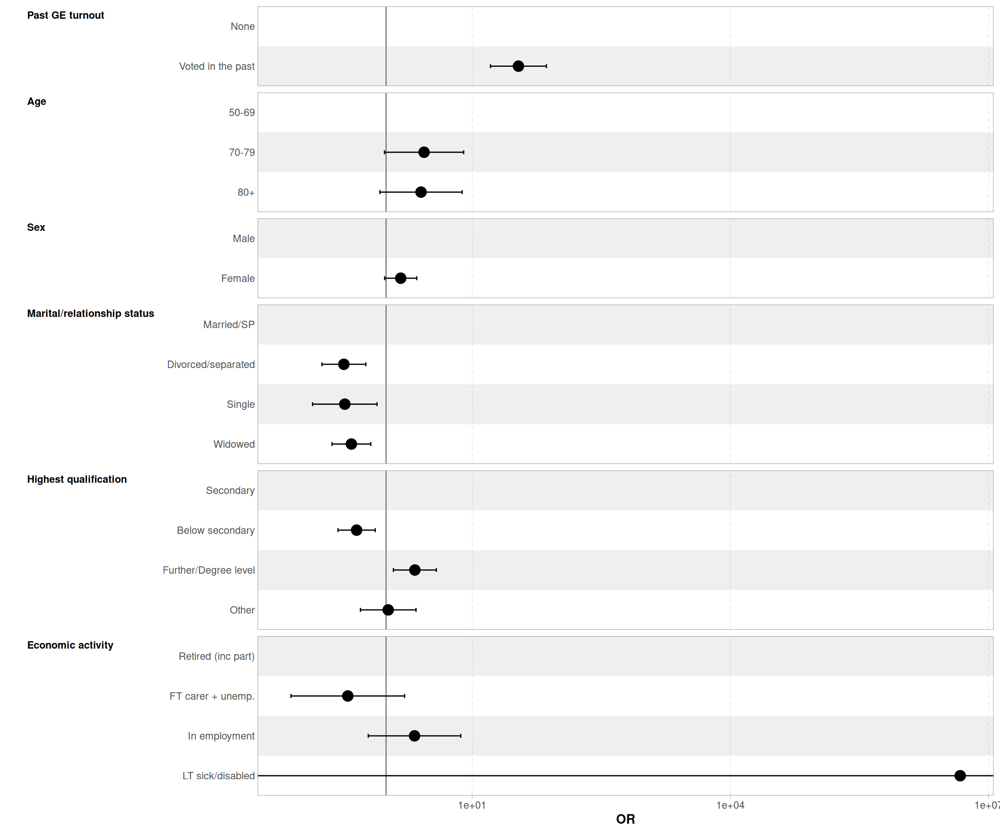
Stepwise models
| Characteristic |
M1
|
M2
|
M3
|
M4
|
M5
|
M6
|
M7
|
|||||||
|---|---|---|---|---|---|---|---|---|---|---|---|---|---|---|
| OR1 | 95% CI | OR1 | 95% CI | OR1 | 95% CI | OR1 | 95% CI | OR1 | 95% CI | OR1 | 95% CI | OR1 | 95% CI | |
| Age | ||||||||||||||
| 50-69 | — | — | — | — | — | — | — | — | — | — | — | — | ||
| 70-79 | 1.77 | 0.64, 4.85 | 1.76 | 0.64, 4.83 | 2.17 | 0.78, 6.05 | 2.68 | 0.94, 7.64 | 2.77 | 0.96, 7.97 | 2.76 | 0.96, 7.94 | ||
| 80+ | 1.15 | 0.41, 3.21 | 1.14 | 0.41, 3.20 | 1.63 | 0.57, 4.67 | 2.38 | 0.80, 7.07 | 2.49 | 0.83, 7.47 | 2.36 | 0.78, 7.10 | ||
| Sex | ||||||||||||||
| Male | — | — | — | — | — | — | — | — | — | — | ||||
| Female | 0.96 | 0.64, 1.44 | 1.14 | 0.75, 1.73 | 1.36 | 0.88, 2.10 | 1.38 | 0.89, 2.13 | 1.36 | 0.88, 2.11 | ||||
| Marital/relationship status | ||||||||||||||
| Married/SP | — | — | — | — | — | — | — | — | ||||||
| Divorced/separated | 0.40** | 0.22, 0.72 | 0.40** | 0.22, 0.73 | 0.37** | 0.20, 0.68 | 0.39** | 0.21, 0.73 | ||||||
| Single | 0.35* | 0.15, 0.81 | 0.33* | 0.14, 0.78 | 0.33* | 0.14, 0.77 | 0.33* | 0.14, 0.79 | ||||||
| Widowed | 0.39*** | 0.23, 0.64 | 0.40*** | 0.24, 0.68 | 0.39*** | 0.23, 0.66 | 0.40*** | 0.24, 0.68 | ||||||
| Highest qualification | ||||||||||||||
| Secondary | — | — | — | — | — | — | ||||||||
| Below secondary | 0.44** | 0.26, 0.72 | 0.44** | 0.26, 0.72 | 0.45** | 0.27, 0.75 | ||||||||
| Further/Degree level | 2.04* | 1.14, 3.66 | 1.96* | 1.10, 3.51 | 1.94* | 1.08, 3.48 | ||||||||
| Other | 1.00 | 0.48, 2.10 | 1.00 | 0.47, 2.10 | 1.01 | 0.48, 2.12 | ||||||||
| Economic activity | ||||||||||||||
| Retired (inc part) | — | — | — | — | ||||||||||
| FT carer + unemp. | 0.37 | 0.08, 1.68 | 0.36 | 0.08, 1.66 | ||||||||||
| In employment | 2.09 | 0.61, 7.22 | 2.08 | 0.60, 7.19 | ||||||||||
| LT sick/disabled | 4,311,282 | 0.00, Inf | 5,267,548 | 0.00, Inf | ||||||||||
| Housing tenure | ||||||||||||||
| Owner | — | — | ||||||||||||
| Mortgage | 0.83 | 0.51, 1.34 | ||||||||||||
| Renter | 0.66 | 0.36, 1.22 | ||||||||||||
| Past GE turnout | ||||||||||||||
| None | — | — | — | — | — | — | — | — | — | — | — | — | — | — |
| Voted in the past | 34.2*** | 17.3, 67.4 | 35.7*** | 18.0, 71.0 | 35.8*** | 18.0, 71.1 | 34.5*** | 17.1, 69.7 | 30.0*** | 14.6, 61.6 | 34.1*** | 16.1, 72.2 | 33.8*** | 15.7, 72.9 |
| AIC | 824 | 822 | 824 | 806 | 778 | 777 | 777 | |||||||
| Log-likelihood | -410 | -407 | -407 | -395 | -378 | -374 | -373 | |||||||
| No. Obs. | 1,815 | 1,815 | 1,815 | 1,815 | 1,815 | 1,815 | 1,815 | |||||||
| Abbreviations: CI = Confidence Interval, OR = Odds Ratio | ||||||||||||||
| 1 *p<0.05; **p<0.01; ***p<0.001 | ||||||||||||||
Coefficients plot of Models 7
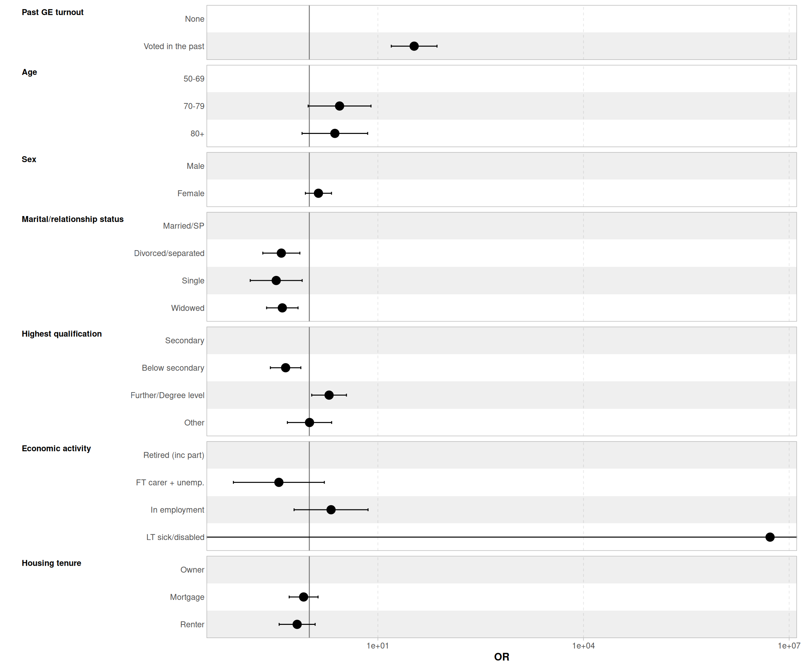
Stepwise models
| Characteristic |
M1
|
M2
|
M3
|
M4
|
M5
|
M6
|
M7
|
M8
|
M9
|
|||||||||
|---|---|---|---|---|---|---|---|---|---|---|---|---|---|---|---|---|---|---|
| OR1 | 95% CI | OR1 | 95% CI | OR1 | 95% CI | OR1 | 95% CI | OR1 | 95% CI | OR1 | 95% CI | OR1 | 95% CI | OR1 | 95% CI | OR1 | 95% CI | |
| Internet connection? | ||||||||||||||||||
| Yes | — | — | — | — | — | — | — | — | — | — | — | — | — | — | — | — | — | — |
| No | 0.61 | 0.31, 1.21 | 0.61 | 0.30, 1.20 | 0.60 | 0.30, 1.20 | 0.59 | 0.29, 1.17 | 0.59 | 0.30, 1.19 | 0.59 | 0.30, 1.19 | 0.60 | 0.30, 1.21 | 0.60 | 0.30, 1.21 | 0.62 | 0.31, 1.25 |
| Felt lonely | ||||||||||||||||||
| Yes | — | — | — | — | — | — | — | — | — | — | — | — | — | — | — | — | ||
| No | 1.28 | 0.66, 2.48 | 1.23 | 0.62, 2.44 | 1.20 | 0.60, 2.41 | 1.25 | 0.62, 2.53 | 1.26 | 0.62, 2.55 | 1.25 | 0.61, 2.54 | 1.24 | 0.61, 2.53 | 1.21 | 0.59, 2.50 | ||
| Self-rated general health | ||||||||||||||||||
| Excel/V good | — | — | — | — | — | — | — | — | — | — | — | — | — | — | ||||
| Fair | 1.16 | 0.58, 2.34 | 1.22 | 0.59, 2.51 | 1.20 | 0.58, 2.50 | 1.20 | 0.57, 2.50 | 1.21 | 0.58, 2.52 | 1.23 | 0.59, 2.57 | 1.23 | 0.57, 2.62 | ||||
| Good | 1.06 | 0.58, 1.95 | 1.08 | 0.59, 2.00 | 1.08 | 0.58, 1.99 | 1.08 | 0.58, 1.99 | 1.09 | 0.59, 2.02 | 1.11 | 0.60, 2.05 | 1.08 | 0.58, 2.00 | ||||
| Poor | 0.76 | 0.32, 1.81 | 0.79 | 0.33, 1.91 | 0.75 | 0.30, 1.83 | 0.75 | 0.30, 1.85 | 0.78 | 0.31, 1.93 | 0.79 | 0.32, 1.96 | 0.83 | 0.32, 2.15 | ||||
| How getting along financially | ||||||||||||||||||
| Does not manage well | — | — | — | — | — | — | — | — | — | — | — | — | ||||||
| Get by alright | 1.77 | 0.27, 11.5 | 1.83 | 0.28, 12.0 | 1.83 | 0.27, 12.2 | 1.73 | 0.26, 11.6 | 1.72 | 0.26, 11.5 | 1.71 | 0.24, 12.0 | ||||||
| Manage quite well | 2.26 | 0.35, 14.4 | 2.35 | 0.37, 15.1 | 2.36 | 0.36, 15.5 | 2.23 | 0.34, 14.7 | 2.21 | 0.34, 14.5 | 2.12 | 0.31, 14.7 | ||||||
| Manage very well | 2.28 | 0.36, 14.5 | 2.36 | 0.37, 15.1 | 2.37 | 0.36, 15.5 | 2.21 | 0.34, 14.6 | 2.20 | 0.33, 14.5 | 2.16 | 0.31, 14.9 | ||||||
| Self-rated mental health | ||||||||||||||||||
| Excellent/v good | — | — | — | — | — | — | — | — | — | — | ||||||||
| Fair | 0.97 | 0.43, 2.18 | 0.97 | 0.43, 2.18 | 0.97 | 0.43, 2.17 | 0.98 | 0.44, 2.19 | 0.92 | 0.41, 2.09 | ||||||||
| Good | 0.64 | 0.31, 1.34 | 0.64 | 0.31, 1.34 | 0.64 | 0.31, 1.34 | 0.64 | 0.31, 1.34 | 0.61 | 0.29, 1.29 | ||||||||
| Poor | 1.06 | 0.30, 3.72 | 1.06 | 0.30, 3.73 | 1.06 | 0.30, 3.75 | 1.04 | 0.29, 3.69 | 0.98 | 0.27, 3.52 | ||||||||
| Happy last week? | ||||||||||||||||||
| Yes | — | — | — | — | — | — | — | — | ||||||||||
| No | 1.01 | 0.43, 2.35 | 1.05 | 0.45, 2.48 | 1.06 | 0.45, 2.49 | 1.10 | 0.46, 2.62 | ||||||||||
| Give back to community? | ||||||||||||||||||
| Give back to community | — | — | — | — | — | — | ||||||||||||
| Not so much | 0.71 | 0.40, 1.26 | 0.72 | 0.40, 1.27 | 0.71 | 0.40, 1.26 | ||||||||||||
| Unpaid carer | ||||||||||||||||||
| Cared for sick/frail | — | — | — | — | ||||||||||||||
| Not a carer | 0.51 | 0.05, 5.08 | 0.52 | 0.05, 5.23 | ||||||||||||||
| Perceived/actual age gap (+-3 years) | ||||||||||||||||||
| Feels > 3 years older | — | — | ||||||||||||||||
| Feels > 3 years younger | 1.87 | 0.61, 5.71 | ||||||||||||||||
| Feels within 3 years of actual age | 2.49 | 0.77, 8.06 | ||||||||||||||||
| Past GE turnout | ||||||||||||||||||
| None | — | — | — | — | — | — | — | — | — | — | — | — | — | — | — | — | — | — |
| Voted in the past | 39.5*** | 16.3, 95.7 | 38.4*** | 15.8, 93.4 | 36.7*** | 14.9, 89.9 | 37.2*** | 15.2, 91.4 | 39.7*** | 16.1, 98.0 | 39.7*** | 16.0, 98.4 | 39.7*** | 16.0, 98.6 | 40.0*** | 16.1, 99.6 | 44.0*** | 17.3, 112 |
| AIC | 600 | 600 | 605 | 609 | 610 | 612 | 613 | 614 | 616 | |||||||||
| Log-likelihood | -285 | -284 | -284 | -282 | -280 | -280 | -279 | -279 | -278 | |||||||||
| No. Obs. | 1,529 | 1,529 | 1,529 | 1,529 | 1,529 | 1,529 | 1,529 | 1,529 | 1,529 | |||||||||
| Abbreviations: CI = Confidence Interval, OR = Odds Ratio | ||||||||||||||||||
| 1 *p<0.05; **p<0.01; ***p<0.001 | ||||||||||||||||||
Coefficients plot of Models 9
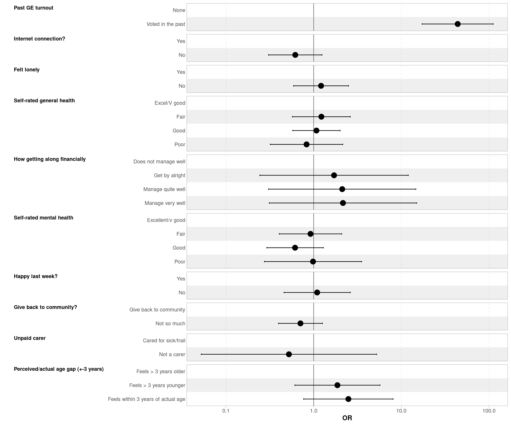
Stepwise models
| Characteristic |
M1
|
M2
|
M3
|
M4
|
M5
|
M6
|
M7
|
M8
|
M9
|
|||||||||
|---|---|---|---|---|---|---|---|---|---|---|---|---|---|---|---|---|---|---|
| OR1 | 95% CI | OR1 | 95% CI | OR1 | 95% CI | OR1 | 95% CI | OR1 | 95% CI | OR1 | 95% CI | OR1 | 95% CI | OR1 | 95% CI | OR1 | 95% CI | |
| Internet connection? | ||||||||||||||||||
| Yes | — | — | — | — | — | — | — | — | — | — | — | — | — | — | — | — | — | — |
| No | 0.66 | 0.32, 1.34 | 0.65 | 0.32, 1.33 | 0.65 | 0.32, 1.32 | 0.63 | 0.31, 1.29 | 0.64 | 0.31, 1.31 | 0.64 | 0.31, 1.31 | 0.65 | 0.32, 1.34 | 0.65 | 0.32, 1.34 | 0.67 | 0.32, 1.38 |
| Felt lonely | ||||||||||||||||||
| Yes | — | — | — | — | — | — | — | — | — | — | — | — | — | — | — | — | ||
| No | 1.28 | 0.65, 2.50 | 1.22 | 0.61, 2.44 | 1.19 | 0.59, 2.41 | 1.25 | 0.61, 2.53 | 1.25 | 0.61, 2.55 | 1.23 | 0.60, 2.53 | 1.23 | 0.60, 2.52 | 1.20 | 0.58, 2.48 | ||
| Self-rated general health | ||||||||||||||||||
| Excel/V good | — | — | — | — | — | — | — | — | — | — | — | — | — | — | ||||
| Fair | 1.11 | 0.55, 2.27 | 1.17 | 0.56, 2.44 | 1.15 | 0.55, 2.42 | 1.15 | 0.54, 2.42 | 1.16 | 0.55, 2.45 | 1.18 | 0.56, 2.49 | 1.18 | 0.55, 2.56 | ||||
| Good | 1.02 | 0.55, 1.88 | 1.04 | 0.56, 1.92 | 1.03 | 0.55, 1.92 | 1.03 | 0.55, 1.92 | 1.05 | 0.56, 1.95 | 1.06 | 0.57, 1.98 | 1.04 | 0.55, 1.94 | ||||
| Poor | 0.73 | 0.30, 1.75 | 0.76 | 0.31, 1.84 | 0.72 | 0.29, 1.77 | 0.72 | 0.29, 1.79 | 0.75 | 0.30, 1.87 | 0.76 | 0.30, 1.90 | 0.80 | 0.31, 2.09 | ||||
| How getting along financially | ||||||||||||||||||
| Does not manage well | — | — | — | — | — | — | — | — | — | — | — | — | ||||||
| Get by alright | 1.72 | 0.26, 11.2 | 1.76 | 0.27, 11.6 | 1.77 | 0.26, 11.8 | 1.67 | 0.25, 11.2 | 1.66 | 0.25, 11.1 | 1.66 | 0.24, 11.7 | ||||||
| Manage quite well | 2.15 | 0.34, 13.7 | 2.23 | 0.35, 14.3 | 2.23 | 0.34, 14.7 | 2.10 | 0.32, 13.9 | 2.08 | 0.32, 13.8 | 2.01 | 0.29, 14.0 | ||||||
| Manage very well | 2.20 | 0.35, 14.0 | 2.28 | 0.35, 14.6 | 2.28 | 0.35, 15.0 | 2.13 | 0.32, 14.1 | 2.12 | 0.32, 14.0 | 2.10 | 0.30, 14.5 | ||||||
| Self-rated mental health | ||||||||||||||||||
| Excellent/v good | — | — | — | — | — | — | — | — | — | — | ||||||||
| Fair | 0.99 | 0.44, 2.21 | 0.99 | 0.44, 2.21 | 0.98 | 0.44, 2.20 | 0.99 | 0.44, 2.21 | 0.94 | 0.41, 2.12 | ||||||||
| Good | 0.67 | 0.32, 1.39 | 0.67 | 0.32, 1.39 | 0.66 | 0.32, 1.39 | 0.66 | 0.32, 1.39 | 0.64 | 0.30, 1.34 | ||||||||
| Poor | 1.09 | 0.31, 3.84 | 1.09 | 0.31, 3.85 | 1.09 | 0.31, 3.87 | 1.07 | 0.30, 3.82 | 1.02 | 0.28, 3.65 | ||||||||
| Happy last week? | ||||||||||||||||||
| Yes | — | — | — | — | — | — | — | — | ||||||||||
| No | 1.00 | 0.43, 2.34 | 1.05 | 0.44, 2.48 | 1.05 | 0.44, 2.48 | 1.09 | 0.46, 2.61 | ||||||||||
| Give back to community? | ||||||||||||||||||
| Give back to community | — | — | — | — | — | — | ||||||||||||
| Not so much | 0.71 | 0.40, 1.25 | 0.71 | 0.40, 1.27 | 0.70 | 0.39, 1.26 | ||||||||||||
| Unpaid carer | ||||||||||||||||||
| Cared for sick/frail | — | — | — | — | ||||||||||||||
| Not a carer | 0.54 | 0.05, 5.49 | 0.55 | 0.05, 5.57 | ||||||||||||||
| Perceived/actual age gap (+-3 years) | ||||||||||||||||||
| Feels > 3 years older | — | — | ||||||||||||||||
| Feels > 3 years younger | 1.87 | 0.61, 5.71 | ||||||||||||||||
| Feels within 3 years of actual age | 2.45 | 0.76, 7.92 | ||||||||||||||||
| Past GE turnout | ||||||||||||||||||
| None | — | — | — | — | — | — | — | — | — | — | — | — | — | — | — | — | — | — |
| Voted in the past | 41.0*** | 16.6, 101 | 40.2*** | 16.3, 99.4 | 38.3*** | 15.4, 95.3 | 38.9*** | 15.6, 97.0 | 41.1*** | 16.4, 103 | 41.1*** | 16.3, 103 | 40.8*** | 16.2, 103 | 41.2*** | 16.3, 104 | 44.7*** | 17.4, 115 |
| AIC | 596 | 597 | 601 | 605 | 608 | 609 | 610 | 612 | 614 | |||||||||
| Log-likelihood | -281 | -280 | -280 | -279 | -277 | -277 | -276 | -276 | -275 | |||||||||
| No. Obs. | 1,515 | 1,515 | 1,515 | 1,515 | 1,515 | 1,515 | 1,515 | 1,515 | 1,515 | |||||||||
| Abbreviations: CI = Confidence Interval, OR = Odds Ratio | ||||||||||||||||||
| 1 *p<0.05; **p<0.01; ***p<0.001 | ||||||||||||||||||
Coefficients plot of Models 9
Stepwise models
| Characteristic |
M1
|
M2
|
M3
|
M4
|
M5
|
|||||
|---|---|---|---|---|---|---|---|---|---|---|
| OR1 | 95% CI | OR1 | 95% CI | OR1 | 95% CI | OR1 | 95% CI | OR1 | 95% CI | |
| Age | ||||||||||
| 50-69 | — | — | — | — | — | — | — | — | — | — |
| 70-79 | 2.21*** | 1.81, 2.71 | 2.22*** | 1.81, 2.71 | 2.06*** | 1.67, 2.54 | 2.30*** | 1.86, 2.85 | 1.61*** | 1.24, 2.07 |
| 80+ | 1.77*** | 1.34, 2.33 | 1.77*** | 1.35, 2.33 | 1.75*** | 1.30, 2.34 | 2.38*** | 1.75, 3.24 | 1.60** | 1.14, 2.25 |
| Sex | ||||||||||
| Male | — | — | — | — | — | — | — | — | ||
| Female | 0.95 | 0.82, 1.11 | 1.00 | 0.86, 1.16 | 1.09 | 0.93, 1.28 | 1.12 | 0.96, 1.32 | ||
| Marital/relationship status | ||||||||||
| Married/SP | — | — | — | — | — | — | ||||
| Divorced/separated | 0.49*** | 0.40, 0.59 | 0.51*** | 0.42, 0.62 | 0.54*** | 0.44, 0.66 | ||||
| Single | 0.49*** | 0.39, 0.61 | 0.53*** | 0.42, 0.66 | 0.59*** | 0.47, 0.75 | ||||
| Widowed | 0.65** | 0.49, 0.87 | 0.71* | 0.53, 0.96 | 0.68* | 0.50, 0.92 | ||||
| Highest qualification | ||||||||||
| Secondary | — | — | — | — | ||||||
| Below secondary | 0.46*** | 0.38, 0.57 | 0.49*** | 0.40, 0.61 | ||||||
| Further/Degree level | 2.31*** | 1.90, 2.81 | 2.15*** | 1.77, 2.62 | ||||||
| Other | 1.31 | 0.95, 1.82 | 1.27 | 0.91, 1.76 | ||||||
| Economic activity | ||||||||||
| Retired (inc part) | — | — | ||||||||
| FT carer + unemp. | 0.48*** | 0.34, 0.68 | ||||||||
| In employment | 0.67*** | 0.54, 0.84 | ||||||||
| LT sick/disabled | 0.27*** | 0.20, 0.37 | ||||||||
| AIC | 4,668 | 4,669 | 4,587 | 4,400 | 4,333 | |||||
| Log-likelihood | -2,331 | -2,331 | -2,286 | -2,190 | -2,153 | |||||
| No. Obs. | 5,257 | 5,257 | 5,257 | 5,257 | 5,257 | |||||
| Abbreviations: CI = Confidence Interval, OR = Odds Ratio | ||||||||||
| 1 *p<0.05; **p<0.01; ***p<0.001 | ||||||||||
Coefficient plot of Models 6
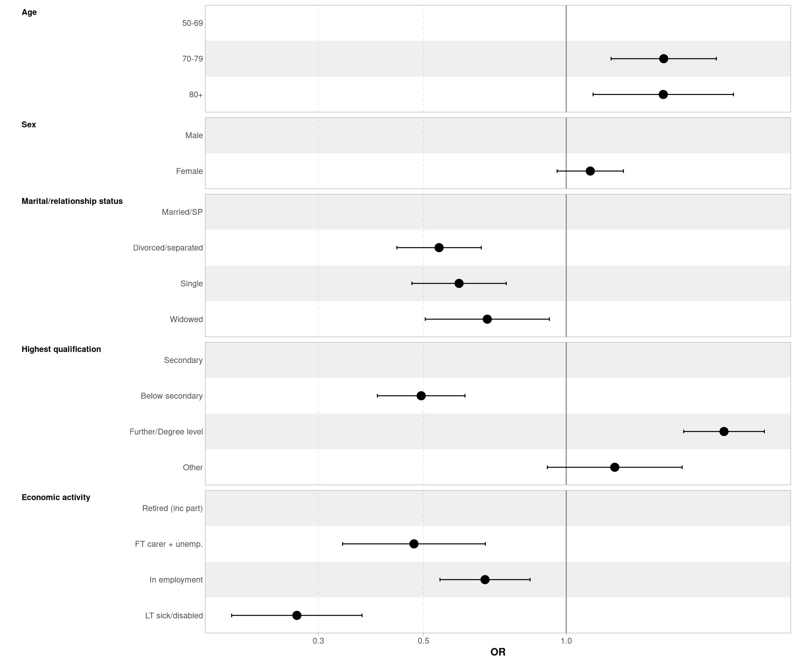
Stepwise models
| Characteristic |
M1
|
M2
|
M3
|
M4
|
M5
|
M6
|
||||||
|---|---|---|---|---|---|---|---|---|---|---|---|---|
| OR1 | 95% CI | OR1 | 95% CI | OR1 | 95% CI | OR1 | 95% CI | OR1 | 95% CI | OR1 | 95% CI | |
| Age | ||||||||||||
| 50-69 | — | — | — | — | — | — | — | — | — | — | — | — |
| 70-79 | 1.59** | 1.18, 2.13 | 1.59** | 1.18, 2.14 | 1.50** | 1.11, 2.03 | 1.61** | 1.18, 2.19 | 1.60** | 1.17, 2.19 | 1.58** | 1.15, 2.17 |
| 80+ | 1.27 | 0.89, 1.80 | 1.27 | 0.89, 1.81 | 1.35 | 0.92, 1.96 | 1.69** | 1.15, 2.49 | 1.69** | 1.13, 2.51 | 1.64* | 1.08, 2.49 |
| Sex | ||||||||||||
| Male | — | — | — | — | — | — | — | — | — | — | ||
| Female | 0.93 | 0.72, 1.20 | 1.03 | 0.79, 1.34 | 1.21 | 0.92, 1.59 | 1.25 | 0.94, 1.64 | 1.24 | 0.94, 1.64 | ||
| Marital/relationship status | ||||||||||||
| Married/SP | — | — | — | — | — | — | — | — | ||||
| Divorced/separated | 0.44*** | 0.30, 0.63 | 0.45*** | 0.31, 0.65 | 0.44*** | 0.31, 0.64 | 0.53** | 0.36, 0.77 | ||||
| Single | 0.32*** | 0.20, 0.49 | 0.31*** | 0.20, 0.48 | 0.31*** | 0.20, 0.49 | 0.36*** | 0.23, 0.58 | ||||
| Widowed | 0.49*** | 0.34, 0.70 | 0.53*** | 0.37, 0.76 | 0.52*** | 0.36, 0.74 | 0.55** | 0.38, 0.80 | ||||
| Highest qualification | ||||||||||||
| Secondary | — | — | — | — | — | — | ||||||
| Below secondary | 0.50*** | 0.36, 0.69 | 0.50*** | 0.36, 0.70 | 0.55*** | 0.39, 0.77 | ||||||
| Further/Degree level | 1.85*** | 1.30, 2.63 | 1.85*** | 1.30, 2.64 | 1.78** | 1.24, 2.54 | ||||||
| Other | 0.71 | 0.44, 1.12 | 0.72 | 0.45, 1.15 | 0.72 | 0.45, 1.15 | ||||||
| Economic activity | ||||||||||||
| Retired (inc part) | — | — | — | — | ||||||||
| FT carer + unemp. | 0.30* | 0.12, 0.76 | 0.30* | 0.12, 0.76 | ||||||||
| In employment | 1.04 | 0.64, 1.68 | 0.98 | 0.60, 1.58 | ||||||||
| LT sick/disabled | 0.56 | 0.22, 1.42 | 0.68 | 0.26, 1.78 | ||||||||
| Housing tenure | ||||||||||||
| Owner | — | — | ||||||||||
| Mortgage | 1.02 | 0.74, 1.42 | ||||||||||
| Renter | 0.54** | 0.37, 0.78 | ||||||||||
| AIC | 1,822 | 1,824 | 1,779 | 1,732 | 1,729 | 1,720 | ||||||
| Log-likelihood | -908 | -908 | -883 | -856 | -852 | -845 | ||||||
| No. Obs. | 3,192 | 3,192 | 3,192 | 3,192 | 3,192 | 3,192 | ||||||
| Abbreviations: CI = Confidence Interval, OR = Odds Ratio | ||||||||||||
| 1 *p<0.05; **p<0.01; ***p<0.001 | ||||||||||||
Coefficients plot of Models 7
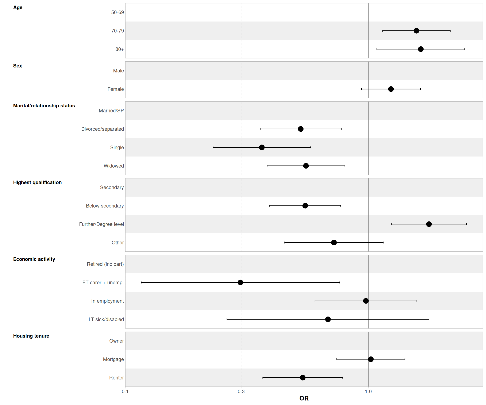
Stepwise models
| Characteristic |
M1
|
M2
|
M3
|
M4
|
M5
|
M6
|
M7
|
M8
|
M9
|
|||||||||
|---|---|---|---|---|---|---|---|---|---|---|---|---|---|---|---|---|---|---|
| OR1 | 95% CI | OR1 | 95% CI | OR1 | 95% CI | OR1 | 95% CI | OR1 | 95% CI | OR1 | 95% CI | OR1 | 95% CI | OR1 | 95% CI | OR1 | 95% CI | |
| Internet connection? | ||||||||||||||||||
| Yes | — | — | — | — | — | — | — | — | — | — | — | — | — | — | — | — | — | — |
| No | 0.44*** | 0.31, 0.61 | 0.45*** | 0.32, 0.62 | 0.45*** | 0.32, 0.63 | 0.45*** | 0.32, 0.63 | 0.45*** | 0.32, 0.63 | 0.46*** | 0.33, 0.64 | 0.49*** | 0.35, 0.69 | 0.49*** | 0.35, 0.69 | 0.49*** | 0.35, 0.69 |
| Felt lonely | ||||||||||||||||||
| Yes | — | — | — | — | — | — | — | — | — | — | — | — | — | — | — | — | ||
| No | 1.43** | 1.13, 1.82 | 1.21 | 0.95, 1.55 | 1.20 | 0.94, 1.53 | 1.19 | 0.93, 1.52 | 1.26 | 0.98, 1.63 | 1.26 | 0.98, 1.63 | 1.26 | 0.98, 1.63 | 1.27 | 0.98, 1.64 | ||
| Self-rated general health | ||||||||||||||||||
| Excel/V good | — | — | — | — | — | — | — | — | — | — | — | — | — | — | ||||
| Fair | 0.59*** | 0.46, 0.76 | 0.61*** | 0.47, 0.79 | 0.63*** | 0.48, 0.82 | 0.61*** | 0.47, 0.80 | 0.62*** | 0.47, 0.81 | 0.62*** | 0.47, 0.81 | 0.61*** | 0.46, 0.80 | ||||
| Good | 0.57*** | 0.45, 0.71 | 0.58*** | 0.47, 0.73 | 0.59*** | 0.47, 0.74 | 0.59*** | 0.47, 0.74 | 0.59*** | 0.47, 0.74 | 0.59*** | 0.47, 0.74 | 0.59*** | 0.47, 0.74 | ||||
| Poor | 0.25*** | 0.18, 0.35 | 0.27*** | 0.19, 0.38 | 0.27*** | 0.19, 0.38 | 0.26*** | 0.18, 0.36 | 0.26*** | 0.19, 0.37 | 0.27*** | 0.19, 0.38 | 0.26*** | 0.18, 0.37 | ||||
| How getting along financially | ||||||||||||||||||
| Does not manage well | — | — | — | — | — | — | — | — | — | — | — | — | ||||||
| Get by alright | 1.14 | 0.80, 1.62 | 1.15 | 0.81, 1.64 | 1.17 | 0.82, 1.68 | 1.20 | 0.84, 1.71 | 1.19 | 0.83, 1.71 | 1.18 | 0.82, 1.69 | ||||||
| Manage quite well | 0.97 | 0.67, 1.38 | 0.97 | 0.68, 1.39 | 1.00 | 0.70, 1.44 | 1.02 | 0.71, 1.46 | 1.02 | 0.71, 1.46 | 1.01 | 0.70, 1.45 | ||||||
| Manage very well | 1.38 | 0.95, 2.02 | 1.37 | 0.94, 2.00 | 1.42 | 0.97, 2.07 | 1.40 | 0.96, 2.05 | 1.40 | 0.96, 2.05 | 1.39 | 0.95, 2.03 | ||||||
| Self-rated mental health | ||||||||||||||||||
| Excellent/v good | — | — | — | — | — | — | — | — | — | — | ||||||||
| Fair | 0.82 | 0.63, 1.07 | 0.80 | 0.61, 1.05 | 0.80 | 0.61, 1.04 | 0.80 | 0.61, 1.04 | 0.79 | 0.60, 1.04 | ||||||||
| Good | 0.78* | 0.61, 0.98 | 0.78* | 0.61, 0.98 | 0.76* | 0.60, 0.96 | 0.76* | 0.60, 0.96 | 0.76* | 0.60, 0.96 | ||||||||
| Poor | 0.85 | 0.57, 1.27 | 0.82 | 0.55, 1.22 | 0.82 | 0.55, 1.22 | 0.82 | 0.55, 1.22 | 0.81 | 0.54, 1.21 | ||||||||
| Happy last week? | ||||||||||||||||||
| Yes | — | — | — | — | — | — | — | — | ||||||||||
| No | 1.35* | 1.02, 1.80 | 1.38* | 1.03, 1.84 | 1.38* | 1.03, 1.84 | 1.37* | 1.02, 1.83 | ||||||||||
| Give back to community? | ||||||||||||||||||
| Give back to community | — | — | — | — | — | — | ||||||||||||
| Not so much | 0.64*** | 0.51, 0.80 | 0.64*** | 0.51, 0.80 | 0.64*** | 0.51, 0.79 | ||||||||||||
| Unpaid carer | ||||||||||||||||||
| Cared for sick/frail | — | — | — | — | ||||||||||||||
| Not a carer | 0.86 | 0.50, 1.49 | 0.86 | 0.50, 1.48 | ||||||||||||||
| Perceived/actual age gap (+-3 years) | ||||||||||||||||||
| Feels > 3 years older | — | — | ||||||||||||||||
| Feels > 3 years younger | 0.92 | 0.66, 1.29 | ||||||||||||||||
| Feels within 3 years of actual age | 1.01 | 0.71, 1.43 | ||||||||||||||||
| AIC | 3,616 | 3,608 | 3,544 | 3,540 | 3,541 | 3,536 | 3,520 | 3,522 | 3,526 | |||||||||
| Log-likelihood | -1,794 | -1,789 | -1,754 | -1,749 | -1,747 | -1,743 | -1,734 | -1,734 | -1,734 | |||||||||
| No. Obs. | 4,536 | 4,536 | 4,536 | 4,536 | 4,536 | 4,536 | 4,536 | 4,536 | 4,536 | |||||||||
| Abbreviations: CI = Confidence Interval, OR = Odds Ratio | ||||||||||||||||||
| 1 *p<0.05; **p<0.01; ***p<0.001 | ||||||||||||||||||
Coefficients plot of Models 9
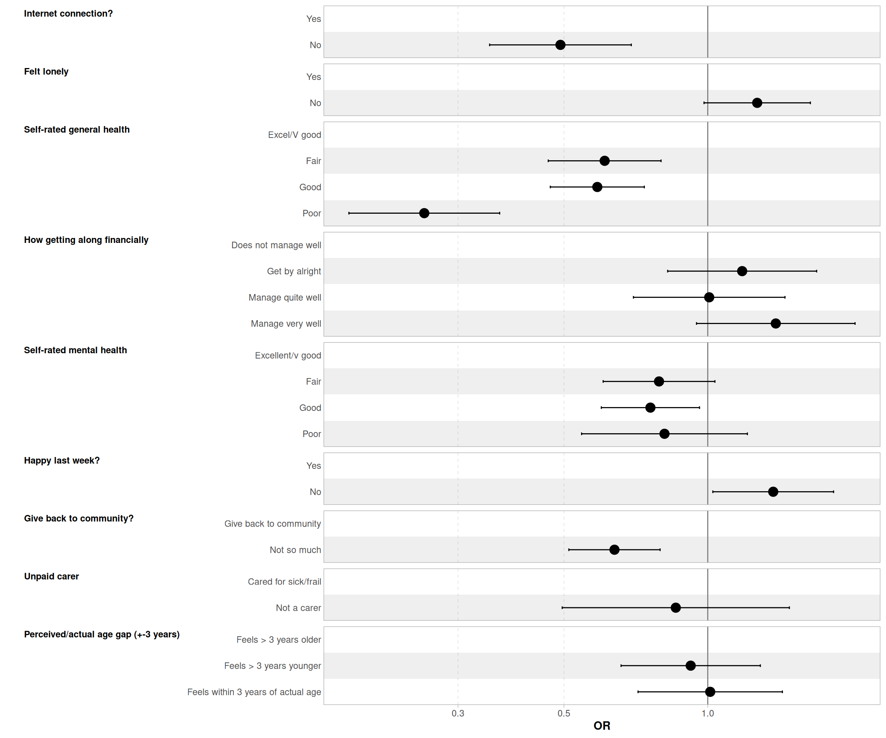
| Characteristic |
M1
|
M2
|
M3
|
M4
|
M5
|
M6
|
M7
|
M8
|
M9
|
|||||||||
|---|---|---|---|---|---|---|---|---|---|---|---|---|---|---|---|---|---|---|
| OR1 | 95% CI | OR1 | 95% CI | OR1 | 95% CI | OR1 | 95% CI | OR1 | 95% CI | OR1 | 95% CI | OR1 | 95% CI | OR1 | 95% CI | OR1 | 95% CI | |
| Age | ||||||||||||||||||
| 50-69 | — | — | — | — | — | — | — | — | — | — | — | — | — | — | — | — | — | — |
| 70-79 | 1.75*** | 1.31, 2.33 | 1.74*** | 1.30, 2.32 | 1.83*** | 1.36, 2.45 | 1.84*** | 1.37, 2.47 | 1.86*** | 1.39, 2.50 | 1.88*** | 1.40, 2.52 | 1.88*** | 1.40, 2.53 | 1.88*** | 1.40, 2.53 | 1.89*** | 1.41, 2.54 |
| 80+ | 2.13*** | 1.40, 3.24 | 2.11*** | 1.39, 3.21 | 2.40*** | 1.57, 3.67 | 2.37*** | 1.55, 3.64 | 2.40*** | 1.57, 3.68 | 2.41*** | 1.57, 3.70 | 2.39*** | 1.56, 3.67 | 2.39*** | 1.55, 3.67 | 2.41*** | 1.57, 3.71 |
| Sex | ||||||||||||||||||
| Male | — | — | — | — | — | — | — | — | — | — | — | — | — | — | — | — | — | — |
| Female | 1.10 | 0.92, 1.31 | 1.10 | 0.92, 1.32 | 1.09 | 0.91, 1.30 | 1.08 | 0.90, 1.29 | 1.09 | 0.91, 1.30 | 1.09 | 0.91, 1.31 | 1.08 | 0.90, 1.29 | 1.08 | 0.90, 1.29 | 1.08 | 0.90, 1.29 |
| Marital/relationship status | ||||||||||||||||||
| Married/SP | — | — | — | — | — | — | — | — | — | — | — | — | — | — | — | — | — | — |
| Divorced/separated | 0.60*** | 0.47, 0.75 | 0.62*** | 0.49, 0.77 | 0.64*** | 0.51, 0.80 | 0.65*** | 0.52, 0.83 | 0.66*** | 0.52, 0.83 | 0.65*** | 0.52, 0.82 | 0.66*** | 0.52, 0.83 | 0.66*** | 0.52, 0.83 | 0.66*** | 0.52, 0.83 |
| Single | 0.63*** | 0.49, 0.81 | 0.66** | 0.52, 0.86 | 0.66** | 0.51, 0.85 | 0.66** | 0.51, 0.85 | 0.66** | 0.51, 0.86 | 0.65** | 0.50, 0.85 | 0.67** | 0.52, 0.87 | 0.66** | 0.51, 0.86 | 0.66** | 0.51, 0.86 |
| Widowed | 0.76 | 0.54, 1.07 | 0.83 | 0.59, 1.18 | 0.82 | 0.58, 1.17 | 0.83 | 0.58, 1.18 | 0.83 | 0.58, 1.19 | 0.83 | 0.58, 1.18 | 0.86 | 0.60, 1.23 | 0.86 | 0.60, 1.23 | 0.86 | 0.61, 1.23 |
| Highest qualification | ||||||||||||||||||
| Secondary | — | — | — | — | — | — | — | — | — | — | — | — | — | — | — | — | — | — |
| Below secondary | 0.55*** | 0.43, 0.69 | 0.55*** | 0.43, 0.70 | 0.60*** | 0.47, 0.76 | 0.61*** | 0.47, 0.78 | 0.61*** | 0.47, 0.78 | 0.61*** | 0.48, 0.79 | 0.64*** | 0.50, 0.83 | 0.65*** | 0.50, 0.83 | 0.65*** | 0.50, 0.83 |
| Further/Degree level | 2.15*** | 1.74, 2.67 | 2.16*** | 1.75, 2.68 | 2.08*** | 1.68, 2.58 | 2.04*** | 1.64, 2.53 | 2.00*** | 1.61, 2.49 | 2.00*** | 1.61, 2.48 | 1.96*** | 1.58, 2.44 | 1.96*** | 1.58, 2.44 | 1.96*** | 1.58, 2.44 |
| Other | 1.14 | 0.80, 1.62 | 1.17 | 0.83, 1.66 | 1.17 | 0.82, 1.67 | 1.19 | 0.83, 1.69 | 1.20 | 0.84, 1.71 | 1.22 | 0.86, 1.75 | 1.24 | 0.87, 1.77 | 1.24 | 0.87, 1.77 | 1.25 | 0.87, 1.78 |
| Economic activity | ||||||||||||||||||
| Retired (inc part) | — | — | — | — | — | — | — | — | — | — | — | — | — | — | — | — | — | — |
| FT carer + unemp. | 0.44*** | 0.30, 0.64 | 0.45*** | 0.31, 0.65 | 0.47*** | 0.32, 0.69 | 0.49*** | 0.33, 0.73 | 0.50*** | 0.34, 0.74 | 0.50*** | 0.33, 0.74 | 0.49*** | 0.33, 0.73 | 0.49*** | 0.33, 0.73 | 0.49*** | 0.33, 0.73 |
| In employment | 0.64*** | 0.50, 0.81 | 0.63*** | 0.50, 0.81 | 0.58*** | 0.45, 0.74 | 0.61*** | 0.48, 0.78 | 0.61*** | 0.47, 0.78 | 0.60*** | 0.47, 0.78 | 0.59*** | 0.46, 0.76 | 0.59*** | 0.46, 0.76 | 0.59*** | 0.46, 0.76 |
| LT sick/disabled | 0.25*** | 0.18, 0.35 | 0.27*** | 0.19, 0.39 | 0.48*** | 0.32, 0.70 | 0.51*** | 0.34, 0.75 | 0.50*** | 0.34, 0.74 | 0.50*** | 0.34, 0.74 | 0.51*** | 0.35, 0.76 | 0.51*** | 0.34, 0.76 | 0.51*** | 0.34, 0.76 |
| Internet connection? | ||||||||||||||||||
| Yes | — | — | — | — | — | — | — | — | — | — | — | — | — | — | — | — | — | — |
| No | 0.44*** | 0.31, 0.61 | 0.45*** | 0.32, 0.62 | 0.45*** | 0.32, 0.63 | 0.45*** | 0.32, 0.63 | 0.45*** | 0.32, 0.63 | 0.46*** | 0.33, 0.64 | 0.49*** | 0.35, 0.69 | 0.49*** | 0.35, 0.69 | 0.49*** | 0.35, 0.69 |
| Felt lonely | ||||||||||||||||||
| Yes | — | — | — | — | — | — | — | — | — | — | — | — | — | — | — | — | ||
| No | 1.43** | 1.13, 1.82 | 1.21 | 0.95, 1.55 | 1.20 | 0.94, 1.53 | 1.19 | 0.93, 1.52 | 1.26 | 0.98, 1.63 | 1.26 | 0.98, 1.63 | 1.26 | 0.98, 1.63 | 1.27 | 0.98, 1.64 | ||
| Self-rated general health | ||||||||||||||||||
| Excel/V good | — | — | — | — | — | — | — | — | — | — | — | — | — | — | ||||
| Fair | 0.59*** | 0.46, 0.76 | 0.61*** | 0.47, 0.79 | 0.63*** | 0.48, 0.82 | 0.61*** | 0.47, 0.80 | 0.62*** | 0.47, 0.81 | 0.62*** | 0.47, 0.81 | 0.61*** | 0.46, 0.80 | ||||
| Good | 0.57*** | 0.45, 0.71 | 0.58*** | 0.47, 0.73 | 0.59*** | 0.47, 0.74 | 0.59*** | 0.47, 0.74 | 0.59*** | 0.47, 0.74 | 0.59*** | 0.47, 0.74 | 0.59*** | 0.47, 0.74 | ||||
| Poor | 0.25*** | 0.18, 0.35 | 0.27*** | 0.19, 0.38 | 0.27*** | 0.19, 0.38 | 0.26*** | 0.18, 0.36 | 0.26*** | 0.19, 0.37 | 0.27*** | 0.19, 0.38 | 0.26*** | 0.18, 0.37 | ||||
| How getting along financially | ||||||||||||||||||
| Does not manage well | — | — | — | — | — | — | — | — | — | — | — | — | ||||||
| Get by alright | 1.14 | 0.80, 1.62 | 1.15 | 0.81, 1.64 | 1.17 | 0.82, 1.68 | 1.20 | 0.84, 1.71 | 1.19 | 0.83, 1.71 | 1.18 | 0.82, 1.69 | ||||||
| Manage quite well | 0.97 | 0.67, 1.38 | 0.97 | 0.68, 1.39 | 1.00 | 0.70, 1.44 | 1.02 | 0.71, 1.46 | 1.02 | 0.71, 1.46 | 1.01 | 0.70, 1.45 | ||||||
| Manage very well | 1.38 | 0.95, 2.02 | 1.37 | 0.94, 2.00 | 1.42 | 0.97, 2.07 | 1.40 | 0.96, 2.05 | 1.40 | 0.96, 2.05 | 1.39 | 0.95, 2.03 | ||||||
| Self-rated mental health | ||||||||||||||||||
| Excellent/v good | — | — | — | — | — | — | — | — | — | — | ||||||||
| Fair | 0.82 | 0.63, 1.07 | 0.80 | 0.61, 1.05 | 0.80 | 0.61, 1.04 | 0.80 | 0.61, 1.04 | 0.79 | 0.60, 1.04 | ||||||||
| Good | 0.78* | 0.61, 0.98 | 0.78* | 0.61, 0.98 | 0.76* | 0.60, 0.96 | 0.76* | 0.60, 0.96 | 0.76* | 0.60, 0.96 | ||||||||
| Poor | 0.85 | 0.57, 1.27 | 0.82 | 0.55, 1.22 | 0.82 | 0.55, 1.22 | 0.82 | 0.55, 1.22 | 0.81 | 0.54, 1.21 | ||||||||
| Happy last week? | ||||||||||||||||||
| Yes | — | — | — | — | — | — | — | — | ||||||||||
| No | 1.35* | 1.02, 1.80 | 1.38* | 1.03, 1.84 | 1.38* | 1.03, 1.84 | 1.37* | 1.02, 1.83 | ||||||||||
| Give back to community? | ||||||||||||||||||
| Give back to community | — | — | — | — | — | — | ||||||||||||
| Not so much | 0.64*** | 0.51, 0.80 | 0.64*** | 0.51, 0.80 | 0.64*** | 0.51, 0.79 | ||||||||||||
| Unpaid carer | ||||||||||||||||||
| Cared for sick/frail | — | — | — | — | ||||||||||||||
| Not a carer | 0.86 | 0.50, 1.49 | 0.86 | 0.50, 1.48 | ||||||||||||||
| Perceived/actual age gap (+-3 years) | ||||||||||||||||||
| Feels > 3 years older | — | — | ||||||||||||||||
| Feels > 3 years younger | 0.92 | 0.66, 1.29 | ||||||||||||||||
| Feels within 3 years of actual age | 1.01 | 0.71, 1.43 | ||||||||||||||||
| AIC | 3,616 | 3,608 | 3,544 | 3,540 | 3,541 | 3,536 | 3,520 | 3,522 | 3,526 | |||||||||
| Log-likelihood | -1,794 | -1,789 | -1,754 | -1,749 | -1,747 | -1,743 | -1,734 | -1,734 | -1,734 | |||||||||
| No. Obs. | 4,536 | 4,536 | 4,536 | 4,536 | 4,536 | 4,536 | 4,536 | 4,536 | 4,536 | |||||||||
| Abbreviations: CI = Confidence Interval, OR = Odds Ratio | ||||||||||||||||||
| 1 *p<0.05; **p<0.01; ***p<0.001 | ||||||||||||||||||
Stepwise models
| Characteristic |
M1
|
M2
|
M3
|
M4
|
M5
|
M6
|
M7
|
M8
|
M9
|
|||||||||
|---|---|---|---|---|---|---|---|---|---|---|---|---|---|---|---|---|---|---|
| OR1 | 95% CI | OR1 | 95% CI | OR1 | 95% CI | OR1 | 95% CI | OR1 | 95% CI | OR1 | 95% CI | OR1 | 95% CI | OR1 | 95% CI | OR1 | 95% CI | |
| Internet connection? | ||||||||||||||||||
| Yes | — | — | — | — | — | — | — | — | — | — | — | — | — | — | — | — | — | — |
| No | 0.59* | 0.37, 0.95 | 0.57* | 0.36, 0.93 | 0.61* | 0.37, 0.98 | 0.61* | 0.37, 0.98 | 0.60* | 0.37, 0.98 | 0.61* | 0.38, 0.99 | 0.65 | 0.40, 1.05 | 0.65 | 0.40, 1.05 | 0.65 | 0.40, 1.07 |
| Felt lonely | ||||||||||||||||||
| Yes | — | — | — | — | — | — | — | — | — | — | — | — | — | — | — | — | ||
| No | 1.86** | 1.25, 2.78 | 1.55* | 1.03, 2.34 | 1.54* | 1.02, 2.33 | 1.54* | 1.02, 2.33 | 1.64* | 1.07, 2.51 | 1.65* | 1.07, 2.53 | 1.64* | 1.07, 2.52 | 1.62* | 1.05, 2.49 | ||
| Self-rated general health | ||||||||||||||||||
| Excel/V good | — | — | — | — | — | — | — | — | — | — | — | — | — | — | ||||
| Fair | 0.61* | 0.39, 0.97 | 0.62* | 0.39, 0.99 | 0.63* | 0.39, 1.00 | 0.61* | 0.38, 0.98 | 0.63 | 0.39, 1.00 | 0.63 | 0.39, 1.01 | 0.66 | 0.41, 1.06 | ||||
| Good | 0.72 | 0.48, 1.08 | 0.73 | 0.48, 1.09 | 0.72 | 0.48, 1.09 | 0.72 | 0.48, 1.09 | 0.74 | 0.49, 1.11 | 0.74 | 0.49, 1.11 | 0.74 | 0.49, 1.12 | ||||
| Poor | 0.29*** | 0.17, 0.49 | 0.29*** | 0.17, 0.50 | 0.30*** | 0.17, 0.51 | 0.28*** | 0.16, 0.49 | 0.30*** | 0.17, 0.52 | 0.30*** | 0.17, 0.52 | 0.32*** | 0.18, 0.56 | ||||
| How getting along financially | ||||||||||||||||||
| Does not manage well | — | — | — | — | — | — | — | — | — | — | — | — | ||||||
| Get by alright | 0.96 | 0.26, 3.59 | 0.98 | 0.26, 3.67 | 1.07 | 0.29, 3.99 | 1.01 | 0.26, 3.84 | 1.00 | 0.26, 3.82 | 1.02 | 0.27, 3.92 | ||||||
| Manage quite well | 1.04 | 0.28, 3.87 | 1.07 | 0.29, 3.99 | 1.19 | 0.32, 4.46 | 1.12 | 0.29, 4.27 | 1.12 | 0.29, 4.27 | 1.13 | 0.30, 4.35 | ||||||
| Manage very well | 1.05 | 0.28, 3.88 | 1.09 | 0.29, 4.06 | 1.21 | 0.32, 4.53 | 1.11 | 0.29, 4.24 | 1.11 | 0.29, 4.24 | 1.14 | 0.30, 4.37 | ||||||
| Self-rated mental health | ||||||||||||||||||
| Excellent/v good | — | — | — | — | — | — | — | — | — | — | ||||||||
| Fair | 1.19 | 0.74, 1.91 | 1.19 | 0.74, 1.91 | 1.19 | 0.74, 1.91 | 1.19 | 0.74, 1.91 | 1.22 | 0.75, 1.97 | ||||||||
| Good | 1.07 | 0.70, 1.65 | 1.08 | 0.70, 1.67 | 1.06 | 0.69, 1.64 | 1.06 | 0.69, 1.63 | 1.07 | 0.69, 1.65 | ||||||||
| Poor | 0.82 | 0.43, 1.56 | 0.81 | 0.43, 1.55 | 0.81 | 0.43, 1.54 | 0.81 | 0.42, 1.54 | 0.83 | 0.43, 1.58 | ||||||||
| Happy last week? | ||||||||||||||||||
| Yes | — | — | — | — | — | — | — | — | ||||||||||
| No | 1.44 | 0.82, 2.53 | 1.56 | 0.88, 2.77 | 1.56 | 0.88, 2.76 | 1.60 | 0.90, 2.85 | ||||||||||
| Give back to community? | ||||||||||||||||||
| Give back to community | — | — | — | — | — | — | ||||||||||||
| Not so much | 0.58** | 0.41, 0.83 | 0.58** | 0.41, 0.83 | 0.59** | 0.41, 0.83 | ||||||||||||
| Unpaid carer | ||||||||||||||||||
| Cared for sick/frail | — | — | — | — | ||||||||||||||
| Not a carer | 0.76 | 0.21, 2.73 | 0.75 | 0.21, 2.72 | ||||||||||||||
| Perceived/actual age gap (+-3 years) | ||||||||||||||||||
| Feels > 3 years older | — | — | ||||||||||||||||
| Feels > 3 years younger | 1.28 | 0.67, 2.44 | ||||||||||||||||
| Feels within 3 years of actual age | 1.12 | 0.58, 2.17 | ||||||||||||||||
| AIC | 1,373 | 1,364 | 1,348 | 1,354 | 1,358 | 1,357 | 1,349 | 1,350 | 1,353 | |||||||||
| Log-likelihood | -671 | -665 | -654 | -654 | -653 | -651 | -646 | -646 | -646 | |||||||||
| No. Obs. | 2,708 | 2,708 | 2,708 | 2,708 | 2,708 | 2,708 | 2,708 | 2,708 | 2,708 | |||||||||
| Abbreviations: CI = Confidence Interval, OR = Odds Ratio | ||||||||||||||||||
| 1 *p<0.05; **p<0.01; ***p<0.001 | ||||||||||||||||||
Coefficients plot of Models 9

Document version history
Changes from version 8
- Created two versions of the gap between biological and self-perceived age. Added them to descriptive and regression tables.
- Created a dichotomic version of the estimated probability of living to 85 and beyond.
- Amended the recording of past voting behaviour with missing recorded system misssing rather than no turnout.
- Added a full output version of Model 7.
- Misc. model optimisations
Changes from version 7
Added 4 series of models without past voting behaviour as covariate.
Changes from version 6
Improved univariates for continuous variables (30)
Added age 2 and 3 categories to tables in Section 4.1 & 4.2; 2019 GE turnout to tables in Section 4.2 & 4.3.
Added a new recoded version of SR mental health, abilities and general health
Renamed Tertiary ed as Further/Degree level.
Fixed display of unrecoded univariate frequencies
Amended multivariate analysis:
- Removed household types
- Removed age*sex interaction
- Replaced past GE turnout with dichotomic version
- New sets of stepwise tables including the new list of independent variables
Notes
DIGRAN (presence of granchildren) was not added to the regression models due to the small number of observations.
Changes from version 5
- Added digran,erlvolba,erlvolpe,exlo80,exlo90,psagf,sclfcoa,scorgch
- Added a section for descriptives of continuous variables
- Consolidated variables list in Section 1
Changes from version 4
Recoded general and mental health as: Excellent/Very Good; Good/Fair; Poor. Warning: given the small number of obs for ‘poor’, this is likely to generate unreliable estimates
Added four way tables of whether voted by age, sex, by all other variables.
Revise model reference categories (see attached) Note: No list was attached, let me know if this needs rearranging, this is a very quick amendment to make
In model tables listed previous vote at bottom of table; re order log likelihood and GoF stats.
Checked and corrected 2005 GE turnout table
Reorganised regressions tables so that all series of models include interaction of age by sex as the last model.
To do:
- Add continuous IVs to the 4 way tables in Section 5.1